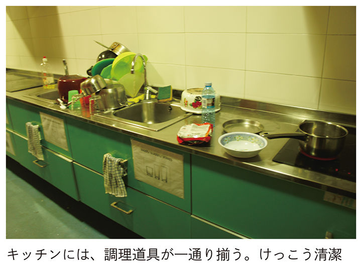
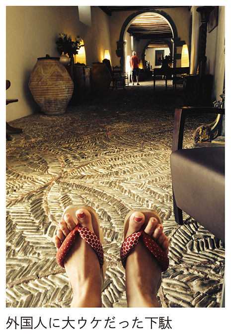
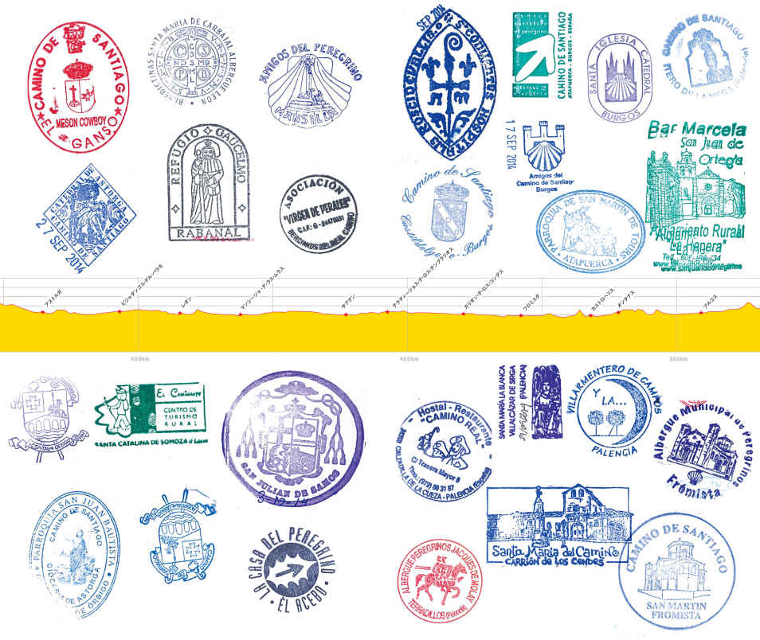

| 人生に疲れたらスペイン巡礼～飲み、食べ、歩く８００キロの旅～ (光文社新書) | |
| 小野 美由紀 | |
| (2015) | |
プロローグ
カミーノ・デ・サンティアゴ。この聞き慣れない名前の場所が、今、全世界的なブームとなっているのをご存じだろうか？
「カミーノ・デ・サンティアゴ」とは、スペイン北西部に向かって伸びる、キリスト教の巡礼の道のことだ。カトリックの三大聖地の一つ「サンティアゴ・デ・コンポステーラ」。そこに向かってフランス南部の開始地点から最長約８００キロにも及ぶ道を、徒歩や自転車、馬、車やバスなどさまざまな手段で巡る、いわばキリスト教版「お遍路」。
中世に始まったその道は今なお世界的に人気で、子どもからお年寄りまで、毎年20万人を超す巡礼者が、険しい山や谷、荒野を越え、最終ゴールの「サンティアゴ大聖堂」を目指す。
アメリカでは数年前、カミーノを題材にした映画『THE WAY（邦題・星の旅人たち）』が大ヒットした。それをきっかけに、数多くのアメリカ人が主人公と同じく、バックパック一つを担ぎ、言葉の通じないこの異国の田舎の道を訪れている。また韓国では、主に20代から30代の若者を中心に爆発的なブームとなり、数々のエッセイ本やガイドブックが発売されている。ドイツでは、病に冒されたコメディアンがこの道を歩き、その過程を旅行記として出版。それが大ヒットして以来、巡礼者の数は増え続けている。
単なる一過性のブームではない。カミーノの人気は１９８５年ごろからじわじわと世界的に広がり始め、南米やヨーロッパ各国からも多くの人がこの道を歩きにやってくる。ギャップイヤー（進学・就職する前に、１年間の猶予期間を持ち、旅をしたりして自由に過ごす期間）で、転職の合間に、バカンスで......と理由はさまざま。２０１１年のキリスト教年（第３章 カミーノが最も盛り上がる「聖年」参照）には18万人もの人々が、この道を歩き、聖地サンティアゴを目指した。
カミーノ・デ・サンティアゴは、なぜ今、人気なのか？ それはこの道が、人との出会い、未知の自分の発見、肉体のトレーニングから、世界遺産、美食、パーティーにいたるまで、ここでしか得ることのできない数多くの経験で満ちあふれているからだ。
私はこの道を、３度にわたり歩いた。一度目は２００８年。レオンという街からスタートし、10日間をかけて３００キロの道のりを踏破した。また翌年には、ブルゴスという街から５００キロを20日間かけて。その５年後の２０１４年には、フランスのピレネーの麓にある、巡礼路の起点となる街サン・ジャン・ピエ・ド・ポー（以下、サン・ジャン）から、約８００キロもの全道程を35日間かけて歩いた。
なぜ私が「スペインを歩く」という一見突飛な行動に、こんなにも惹かれたのか。それは、ある時に出会った韓国人の宗教学者、金良枝さんの言葉が、心に残っていたからだ。
金さんは40年以上前に来日し、東京大学で学んだのち、四万十川をフィールドワークしながら古今東西の聖地を研究し歩いている宗教学者だ。現在はソウル大学に在籍している。その彼に「最も感銘を受けた場所はどこですか」と尋ねて返ってきた答えが、スペインの巡礼路「カミーノ・デ・サンティアゴ」だった。
「人生と旅の荷造りは同じ。いらない荷物をどんどん捨てて、最後の最後に残ったものだけが、その人自身なんです。歩くこと、この道を歩くことは、『どうしても捨てられないもの』を知るための作業なんですよ」
当時21歳の私は、何もかもがうまくいかず、すっごくすっごく、焦っていた。途方もなく困っていた。就職できない自分に。人とうまく付き合えない自分に。社会と靴擦ればっかり起こしている、ダメな自分に。そんな時に、私は金さんのこの言葉をたよりに旅に出た。バックパック一つ背負って。どこかに答えがあるんじゃないか、というかすかな希望を抱いて――。
そこで出会った多くの人々の言葉が、私の人生を変えた。年齢も育ちもバラバラな、世界中の国々から集まる多くの巡礼者たちが、一緒に寝泊まりし、同じ鍋からスープを飲み、共に聖地を目指してゆく。彼らの言葉を聞くことは、そのまま、彼らのこれまで築いてきた人生観に触れることだった。
彼らの言葉が、思い込みや、日本の常識に縛られてガチガチになっていた私の頭を解きほぐしてくれた。時には鋭い言葉の刃に身を削られ、隠していた地がむき出しになり、痛みに悲鳴をあげた。そうして余計な外皮がすっかりなくなった時、私は、残された自分自身と向き合えた。
この道で出会った多くの言葉たちが、私をつくってくれた。
この旅は「捨てるための」旅なのだ。
日常生活で詰め込みすぎた固定観念、忘れたくても忘れられない思い出、思い込み。それらが、スペインの田舎という、祖国の常識の通用しない異国の地で、どんどんひっくり返る。未知の出会いに飲み込まれてあっぷあっぷともがいているうち、どんどんいらないものが消え、洗い流されて、からっぽの自分の中に、新しいものが芽生える。
歩くという行為は、これまでの自分を省みると同時に、次の自分にたどり着く行為でもある。文字通り、Ａ地点からＢ地点にたどり着く間に、「私」自身もまた、Ａ地点にいた時の私ではなくなっている。そういう変容をもたらすのが、この道の特異な力である。
この道を歩く人々は、旅を終えた時、新しい、なんらかの境地にたどり着くことを期待して歩く。実際にたどり着けるのか、それが何であるのかは、誰にも分からない。しかしその道程は、とほうもなくエキサイティング。苦労やトラブル、疲労や不便も含め、人生の中で振り返ってもかけがえのない経験となることは、これまでこの道を歩いた、数えきれないほど多くの先人たちの証言によって、確約されている。
私がこの本で伝えたいのは、ただ一つ。
「カミーノ・デ・サンティアゴは楽しい！」
理由はなんだっていい。自分探しでも、宗教的動機でも、スペインの文化を楽しむのでも、レジャーでもいい。ただ、この道はあなたが歩く前に期待していたものより、数倍も多くの、また思いもしなかった喜びと楽しみをもたらしてくれるだろう。神様を信じていようが信じていまいが、この道はあなたにとって、とびきりのギフトとなる。それが何であるかは、歩いてからのお楽しみだ。
もしあなたが、長い人生の中で、数日間もしくは数十日間を個人的な楽しみのために確保できるなら。または、人生につまずき、うまくいかず、にっちもさっちもいかない、と絶望しているのなら。もしくはお金をなるべくかけずに行ける、刺激的な旅先を探しているのなら。迷わず本書を手に取ってほしい。きっとこの本は、あなたにとって最高のガイドとなるはずだ。
出かけよう、未知の出会いが待つ道へ。
ブエン・カミーノ（よき旅を）！
目次
道のはじまり│ サン・ジャン・ピエ・ド・ポルト │残り８００㎞
２日目│ 一掃される旅のイメージ │ロンセスバジェス │残り７５５㎞
４日目│ 聖なる街とムール貝の祝福 │パンプローナ │残り７１２㎞
９日目│ take your time! │プエンテ・ラ・レイナ │残り６８９㎞
10日目│ 安定と自由、どっちがあなたの道？ │ログローニョ │残り６１７㎞
18日目│ 毎日が休日だと思える仕事 │オンタナス │残り４６２㎞
20日目│ 私の背骨はどこにある？ │カリオン・デ・ロス・コンデス │残り４０８㎞
22日目│ 人生のバスケットボール │サアグン │残り３６９㎞
23日目│ 巡礼路は人生の縮図 │エル・ブルゴ・ラネーロ │残り３５４㎞
24日目│ パンとハムとワイン、それで十分さ！ │レオン │残り３１２㎞
25日目│ 正しい道なんてない │オスピタル・デ・オルビゴ │残り２７９㎞
26日目│ 私は未解決人間 │ビジャフランカ・デル・ビエルソ │１８６㎞
29日目│ 自分のかたち、山のかたち │セブレイロ峠 │残り１５６㎞
35日目│ 聖地到着 │サンティアゴ・デ・コンポステーラ │残り０㎞
36日目│ 最果ての地から続く道 │フィステーラ │プラス90㎞
ワイン、ビール、シードル......アルコール天国、スペイン
章扉・巻末資料等デザイン／ Malpu Design（佐野佳子）
本文写真／淡路愛、筆者
１‐１ カミーノ・デ・サンティアゴ７つの魅力
フツーの旅にはない!? ７つの魅力
最長８００キロの道のりをさまざまな手段で踏破する、カミーノ・デ・サンティアゴ（以下、カミーノ）。スペインの北西端にある、キリスト教の三大聖地の一つ「サンティアゴ・デ・コンポステーラ」を目指す、いわば「スペイン版お遍路」である。
こう書くと、「えっ、８００キロも歩くの？」とか「キリスト教徒じゃないと歩けないんじゃない？」といった疑問が芽生えて、思わず尻込みしてしまうかもしれない。しかしこのカミーノ、唯一無二の体験ができる場所として、挙げきれないくらい魅力にあふれた道なのである。
実際、歩いてきた人たちは、全員口を揃えて「行ってよかった！」と言い切る。「また歩きたい！」と言う人もいるし、実際、数年に一度は歩きにいくというハード・リピーターすらもいる。巡礼路のどこからスタートしてもよいし、どこでやめてもいい。
日本ではまだまだマイナーであるスペイン巡礼。私が考えるその魅力を、以下に述べる。
１．宿が激安！ 費用がかからない
巡礼者たちは、巡礼路沿いに点在する街や村にある「アルベルゲ」（巡礼宿）に泊まることができる。だいたいどこの街や村にも必ず１軒はある、いわば巡礼者たちのターミナルだ。巡礼者のパスポートである「クレデンシャル」（巡礼手帳）を持っていれば、誰でも宿泊することができる。
この巡礼宿が、驚くほど宿泊料が安い。キリスト教協会公設の宿であれば、だいたい５ユーロ前後でドミトリー式の宿に泊まることができる。私設の宿もあるが、それでも、10ユーロ前後。普通のゲストハウスに泊まるのに比べたら破格の値段である。中には、完全に「ドナティーボ（寄付制）」で成り立っている宿や、食事などのまかないが付いてくる宿もある。
「タダの宿なんて、どうせボロボロなんでしょ？」と思うなかれ。もちろん、先人たちの手垢にまみれた古い宿もあるが、中には建てられたばかりで、デザイナーズホテルか？ と思うくらいにピカピカでオシャレなアルベルゲもある。そして古い／新しいにかかわらず、どこの宿もホスピタレイロ（巡礼宿の管理人、女性の場合はホスピタレイラ）によって清潔に保たれている。この道で巡礼者を迎える人々の、篤いホスピタリティが感じられるはずだ。
私が20日かけて５００キロの道のりを歩いた時は、宿代は全部で１万円ほどだった。普通の旅行に比べていかに宿泊コストが安いか、お分かりになるだろう。
巡礼宿には個性があり、中にはサアグンという街にある、古い修道院を改築した宿や、ビジャフランカ・デル・ビエルソの「アベ・フェニックス」という巡礼者たちが手作りで建てた宿など、多種多様。「今日はどんな宿？」と、毎日変化を楽しめる。
２．ごはんが美味しく、かつ、低コスト
巡礼路は何本もあるが、代表的な「フランス人の道」は、スペイン北部、バスク地方から北西部のガリシア地方まで、４州を貫く一本の道である。州によって文化や食習慣が異なり、多様な顔を持つのがスペインの魅力だ。歩を進め、州をまたぐたび、文化の違いを体感できる。
とりわけそれがはっきり表れるのが、なんといっても食だろう。スペインの食文化は多種多様。バスク地方では新鮮な魚介類やこの地方発祥のピンチョスという小皿料理、ナバラ州では名物のチョリソ、海に近いガリシア地方では新鮮なバカリャウ（タラ）やタコ......と、ご当地グルメに関しては、枚挙にいとまがない。しかも、巡礼路は概して田舎。バルセロナやマドリッドに比べたら驚くほどの低価格で、それらの名物料理を楽しめる。レストランは安いし、スーパー買った食材で朝・昼・夜と自炊すれば、食費も１日10ユーロ前後だ。
そして、ここが一番のキモであるが、なんといっても、ワインが水より安いのだ！ 巡礼路がまたぐ北スペインは、ワインの名産地。蛇口をひねればうどん出汁が出てくるのは香川だが、文字通り、蛇口をひねればワインが出てくるのが北スペインだ。巡礼路の途中には、本当に、「ひねるとワインが出てくる蛇口」が設置されている場所もある。
一日歩き終わったあと、巡礼宿の芝生の庭で、太陽の光を浴びながらワインで乾杯するのは、めちゃくちゃ気持ちがいい。「来てよかった！」と思える瞬間である。
３．世界中の人々の多様な人生観に触れられる
巡礼路には、世界中からあらゆる人種・階層・職種の人々が集まってくる。アメリカの大企業の経営者から、ギャップイヤーで人生を考えに来た学生、失業中の若者、５歳の男の子、リタイヤしたおじいちゃん、ブラジルのエリート、メキシコの牧師、南アフリカの大金持ち、ホームレス......。多種多様な人々が、それぞれの出自や身分などまるで関係なく、助け合い、聖地を目指す。
中にはもちろん敬虔なキリスト教信者もいるけれど、最近ではもっぱらこの道もレジャー化し、目的は「自分探し」だったり、「リタイア後の人生を考えるため」だったり、カップルの新婚旅行だったりとさまざまだ。ピーク時には、毎日２００人ほどの「人生の夏休み」状態の人たちと共に、人生について語りながら、ワインを飲みつつ、楽しく道を歩くことになる。
こう書くと暑苦しくて嫌だなと思う人もいるかもしれない。しかし、ここで伝えておきたいのは、けっして「仲良しごっこ」にならないということだ。
個人主義のヨーロッパらしく、人間関係は非常にドライでフラット。巡礼者同士だからといって、仲良くならなきゃいけないというプレッシャーはまったくない。基本単位は「一人」であることが、特に強調されずとも実行され、なんとも肌心地のよい距離感が全巡礼者の間に漂っている。
とある巡礼者が言っていた。「ここは人間がちゃんといる。だから安心して一人になれる」と。
ここでは全員が「聖地を目指す」という目的を持って歩いている。目的が一緒だからこそ仲良くもなれるし、逆に、無理して仲良くしなくてもいい。日本では、「袖すり合うも多生の縁」というが、「けど、だからって何？」というドライさがあるのがカミーノなのだ。
そうやって歩いていると、嫌でも気づかされる。人の価値観が本当に多様であることに。「ああ、自分がこれまで常識と思っていたことなんて、本当にちっぽけなことなんだなぁ」と。そうして思い込みが剥がれ落ちたところで、「じゃあ、自分が人生で一番大事にしたいものって一体なんだろう？」と見つめ直せる。それが、巡礼のよいところなのだ。
４．ダイエットにも最適！ やせてイイ身体になれる!?
巡礼では、毎日６～８時間は、深い森の中や山道を歩き続けることになる。それだけの長時間、有酸素運動であるウォーキングを続けるわけだから、自然と筋肉がつき、引き締まったイイ身体に......なるはずだ。もしもあなたが、油ギットリ＆ハイカロリーなスペイン料理を、一日の消費カロリーを上回る量食べ続け、かいた汗以上にビールをがぶ飲みしなければ......。
５．巡礼路は世界遺産だらけ！
スペインといえば世界遺産。当然、歴史の古い巡礼路には有名な世界遺産建築がゴロゴロある。ブルゴスやレオンといった街の大聖堂や、ガウディが設計したアストルガの教会、ポンフェラーダのテンプル騎士団の要塞であった城などである。その美しさ、精工さは筆舌に尽くしがたい。歴史好きや建築好きにとってはまさに「お宝」。美しい世界遺産を見るだけでも、訪れる価値がある。
また、大自然の美しさも、この道を歩く大きな楽しみである。８００キロにわたる巡礼路は、山あり谷あり、多種多様な地形の上を通っている。ピレネー山脈越えに始まり、見渡すかぎり一面のひまわり畑や、もののけ姫の舞台のような、苔むす深い森、岩だらけの峠など、多彩な表情を持つ大自然の中を抜けてゆく。スケールの大きさは、スペインならでは。その美しさ、刻々と変わる表情に、胸を打たれっぱなしになること間違いなし。
私が一番感動したのは、標高約１３００メートルのセブレイロ峠を越えた時のことだ。夕刻、頂上にくたくたに疲れてたどり着き、落ちるようにして眠りについた翌朝。寝ぼけ眼で宿の外に出てみると、あたり一面、真っ白な雲海が！ 自分が登ってきた険しい道が、足下数十センチ先が、ふかふかの雲に覆われている......。あの光景は言葉にならないほど感動的だった。
６．語学が上達する
世界中から人が集まるこの道で、自然と会話は英語が中心となる。下手したら一日中、外国語でしゃべりまくることもあるので、まるで語学留学しているような気分だ。「２週間、語学留学したけれど、ほとんど話す機会のないまま終わった」という話をよく耳にするが、それよりもよっぽど上達するかもしれない。
たとえ語学が苦手でも大丈夫。スペイン人はとってもおおらか。英語をまったく話せないスペイン人のおじいちゃんでも、ガンガン話しかけてくる。「なんとなく」で通じるのが巡礼ワールドなのだ。巡礼路を歩き終えるころには、きっとスタート時よりも語学が上達しているはずだ。
７．「自分と対話する時間」が持てる
毎日、長時間を歩いていると、嫌でも一人になる時間がやってくる。一人きりで大自然の中をひたすら歩くのは、まさに「自分との対話」の時間だ。なんの目的もなく、ふらっと何時間も歩くことなんて、人生のうちにそう多くはない。その「空白」の時間のうちに、自分の内側から、日頃から抱えてきた悩みや疑問に対する答えがぽっかりと浮かび上がってくることがある。その「空っぽの自分」になれる浄化作用が、この巡礼の道にはあるのだ。
私たちは普段「こうしなきゃ」とか「こうあらねば」という、「べき論」に縛られて、ついつい生きてしまう。そうなっているうちは、自分が本当に望んでいることや、悩みに対する答えを見つけるのは、案外難しい。しかし、この巡礼の道には「べき」がない。自分のペースで歩き、自分のペースで休む。あるのは大自然と、己の肉体のみだ。やるべきことは、たった一つ。「歩くこと」。
身体を酷使して、疲れて、くたくたになって、自意識が空っぽになった時、突然、大地に水が湧くようにして、突然、自分の本当の望みや答えが、内側からふつふつとせり上がってくることがある。身体を酷使することは、次の自分の行き先を決めるための重要な窓口なのだ。
「自分が次にするべきことを見つけたくて」「自分の人生を考えたくて」巡礼に訪れる人が多いのも、そのせいなのではないだろうか。そういう状態を嫌でも創り出してくれるのが、カミーノのよさでもある。
「自分探し」って、なんだかかっこ悪いし照れくさい。でも、人生には一度くらい、どん底にまで追い詰められて、生きる気力も湧いてこず、「もう自分探しくらいしか、することねーよ......」とつぶやきたくなる時があったり、する。そんな時に、もうどうにでもなれという気持ちでこの道を歩けば、不思議と心が軽くなり、「次に行こうかな！」と思えてくる。
と、いうわけで、「自分が何やりたいかとか分かんないしー、〝テーマのある旅〟とか流行ってるけど、別に途上国とかアジアとか暑いし汚いから行きたくないし......」と、ダラダラTwitterを見ながら、エアコンが効いた部屋でアイスを食べている人にこそ、カミーノをすすめたい。この道には、人生を洗濯するための条件がすべて揃っている。「人生の夏休み」を送るには最高の場所である。
１‐２ スペイン巡礼基礎知識
なぜサンティアゴ・デ・コンポステーラを目指すのか
＊暴れん坊、聖ヤコブの元に生まれた西の聖地
サンティアゴ・デ・コンポステーラは、エルサレム、ローマに並ぶキリスト教の三大聖地の一つ。なぜここがキリスト教の聖地になったのか、その歴史を簡単に説明する。
サンティアゴとは、キリスト教の聖人・聖ヤコブのスペイン名だ。そう聞いても、キリスト教徒でない人にとってはなじみのない名だろう。聖ヤコブは、あの有名な絵画「最後の晩餐」で、中央に座るキリストのすぐ隣にいる人。つまり側近なのだ。ヤコブはペトロとヨハネに並ぶ、キリストの最初の弟子で、イエスの死後にキリストの教えを熱心に布教した一人である。聖書によると、かなりの暴れん坊でキリストにしょっちゅう怒られていた人らしい。けれど布教活動には熱心で、当時はケルトの宗教であるドルイド教の大全盛だったスペインにおいて、迫害を受けながらも教えを広めていたそうだ。最終的にはなかなか布教がうまくいかず、ヤコブは紀元44年にエルサレムに帰還する。彼の影響力を恐れた当時のユダヤ王・アグリッパは、ヤコブを殺害し、その遺骸は故郷の地に埋められることすら許されず、二人の弟子の手によって、船に乗せられ漂流する。なかなか不遇な一生だ。遺骸が流れ着いたのがスペインのパドロン。ようやくここで、弟子たちはヤコブの埋葬を許可される。墓は９世紀初めに発見され、その地に建てられたのが、街のシンボル・サンティアゴ大聖堂である。彼は死後も、８世紀初頭からスペインで起きたキリスト教徒とイスラム教徒の戦いにおいて、たびたび白馬に乗って戦場に現れては敵軍を蹴散らし、キリスト軍を助けたという伝説を残している。そのおかげで、今では彼はスペインの守護神とされ、篤く信仰されている。
＊サンティアゴ巡礼の始まりは11世紀
11世紀以前、ヨーロッパのキリスト教信者はエルサレムを聖地とし、巡礼を行っていた。しかし11世紀以降、イスラム国家のセルジューク朝によってエルサレムは占拠される。エルサレムへの巡礼が困難になったことで、人々はサンティアゴに注目し始める。やがて、ヨーロッパ各国からサンティアゴまでの道を、たくさんの人が歩いて向かうようになり、ローマ帝国によって道が整備され、クリュニー会と呼ばれるキリスト教会が巡礼者を救護する施設や教会をつぎつぎと造り始めた。12世紀には、年間約50万人もの巡礼者がこの地を訪れたといわれるから驚きだ。
その後、ペストの流行や戦乱、キリスト教の内部分裂など、信仰の形の変化によって巡礼路の人気は落ち、次第に人々から忘れ去られることとなった。しかし、19世紀後半、当時の大司教バヤ・イ・リコの指導のもと、サンティアゴ大聖堂の祭壇の下から聖ヤコブの遺骸が発掘され、再び人々は、昔と同じように聖ヤコブの墓の前で祈ることができるようになった。
その後、この道が人気を取り戻すのは今から25年ほど前のことであり、その人気は今日まで上昇を続けている。１９８５年には２４９１人だった巡礼者が２００７年には11万４０２６人にまで増え、中でも聖年である２０１０年には27万２１３５人と、実に多くの人々が聖地サンティアゴを訪れているのだ。
＊聖ヤコブを祀るサンティアゴ大聖堂
巡礼のゴールとなるのが、聖ヤコブを祀るサンティアゴ大聖堂だ。有名な観光地でもあるこの大聖堂には、巡礼者のみならず毎日数千人もの礼拝者が訪れ、祈りを捧げる。サンティアゴ旧市街の中心地オブラドロ広場の正面にそびえ、広場からその全貌を仰ぎ見ることができる。２０１５年現在は改築中（２０１７年に工事終了予定）。塔の一部は見られないが、たいへん荘厳で美しい建物だ。聖堂内部には「エッサイの樹」がかたどられた大理石の柱があり、たどり着いた巡礼者たちは柱に手を当て、感謝の祈りを捧げる。過去に何百万もの人々が触れたため、手の形にくぼみができている。祀られている聖ヤコブの像に抱きつき、巡礼前に決意したことが成就したのなら、それを報告するという習わしもある（ただし、現在は大規模な修理のため、近づけないこともある）。
大聖堂では一日のうちに何度もミサが行われるが、目玉はなんといっても正午の大ミサ。その日到着した巡礼者の出発地と出身国、人数を読み上げ、運がよければ、その昔、旅の汚れが染みついた巡礼者たちを清めるために振られたという、巨大なボタフメイロ（香炉）を体験できることもある。パイプオルガンが響き渡る中、天井から吊り下げられ、中でハーブを炊かれた巨大なボタフメイロが、神父たちにロープを引かれて頭上をゆっくりと飛び回る姿は圧巻。ゴールした実感がふつふつとわいてきて喜びもひとしおだ。
午前中にサンティアゴに到着し、ぜひ正午のミサに参加してみてほしい。
巡礼手帳と巡礼証明書
巡礼者はクレデンシャルと呼ばれる「巡礼手帳」を出発地点で発行してもらい、道中スタンプを集めていく。これを携帯していれば、各街の巡礼宿に格安で泊まることができる。街ごとに異なるデザインのスタンプを押されるので、どこから旅を始めたのか、どんな街を通り過ぎてきたのか一目で分かるようになっている。宿泊先や教会だけでなく、巡礼路にあるレストランやバーなど、さまざまな場所でオリジナルスタンプが用意されており、スタンプラリーの要素もある。巡礼者の中には、このスタンプを集めることに異常なほど熱意を注ぐ人もいる。
また、巡礼路を歩いた者が聖地で受け取れるもの、それが「巡礼証明書」（コンポステーラ）だ。巡礼者の多くが、これを楽しみに聖地を目指している。徒歩と馬の場合はサンティアゴまでの最後の約１００キロを、自転車の場合は最後の約２００キロを踏破することが発行条件となる。
サンティアゴに到着したら、大聖堂の近くの巡礼証明書の発行所に行こう。そこでクレデンシャルを提出し、まず、基準を満たす距離数を歩いてきたこと、もしくは自転車で走ってきたことを証明する。次に、巡礼の動機を聞かれるが、そこで「宗教、または精神的なもの」と答える必要がある。以上の二つをクリアすれば、証明書がもらえる。
もし他の動機を答えた場合、また距離の条件を満たしていない場合でも「到達証明書」を受け取ることができる。巡礼証明書は、汗と涙の証し。一生の思い出になるに違いない。
キリスト教徒だけじゃない！ どんな宗教徒もウェルカムな道
こう書くと「熱心なキリスト教信者しかいないんじゃないの？」「宗教を信じていないけど歩いてもいいの？」と思う方もいるかもしれないが、まったく問題ない。
想像してほしい。四国八十八箇所を、仏教になじみのないアメリカ人が歩いていたからといってあなたは咎めるだろうか？ カミーノ自体、すべての人に開かれた道。現在はかなり宗教色の薄い道になっている。
仏教徒だろうがムスリムだろうが、歩いてオッケー。実際に私が歩いた時も、フランスからムスリムの男の子が「自分の宗教以外も理解したくて」と言って友達と一緒に歩いていた。
どんな宗教を信仰していようと、その道の精神を理解している人なら、カミーノは快く受け入れてくれる。堂々と歩こう。
いつ歩く？ 巡礼のベストシーズン
いつ歩くか？ これは巡礼者にとって重要な問題だ。カミーノは自然の中を歩くアウトドアであり、天候や暑さ・寒さがその過酷さを左右する。人によって歩きやすい天候や気温はさまざまだが、基本的に、おすすめのシーズンは春か秋だ。ヨーロッパの春は４～６月。この時期のスペインは天候もおだやかで、美しい景色が楽しめる。また、暑さのやわらぐ９月、10月も、巡礼者の数もそれほど多くないので歩きやすいが、比較的雨が多い。７～８月は、ヨーロッパの学校の夏休みとなるため、学生や10代の若者たちでにぎわう。８月の炎天下は、高齢者にとっては多少厳しいかもしれない。
春～秋にかけてのスペイン北部は、昼間はカラッと晴れて暑い日が多いため、帽子や日焼け止めはあったほうがいい。また、夏でも夜は涼しいので防寒具は必須だ。逆に、オフシーズンの11月～３月の間は、道は雪に閉ざされることも多く、危険が伴うので山歩きに慣れている人以外はおすすめしない。また、冬期は休業しているアルベルゲも多いので注意すること。
歩き方は自由！
２０１２年に、巡礼証明書を交付されたのは約19万人だが、サンティアゴを訪れた人は約１５０万人にも上る。純粋な観光客を取り除いたとしても、１００キロ地点から聖地まで歩いた人数よりも、実際にはずっと多くの人が巡礼の道を歩いていることになる。
たとえば、毎年休暇のたびに１００キロずつ歩き10年かけて全行程を歩き切ったという人もいれば、飛行機の往復チケットをおさえておき、歩けるだけ歩いて、残りはバスでスキップして聖地にたどり着いたという人もいる。車やバスでの巡礼者、ツアーでの参加者も多い。一度やめても、時期をずらしてまた同じ地点からスタートすれば巡礼証明書はもらえるため、まとまった休みが取れなくても、踏破することができる。四国遍路の「区切り打ち」と同じ要領だ。体力に自信のない高齢者や忙しいサラリーマンでも、毎年、または数年おきに少しずつ歩いていけば、カミーノを達成することができる。
また、長期のバックパック旅行の最中、巡礼路の１区間だけを他の巡礼者たちと共に歩くという人もいる。私が巡礼中に出会ったイタリア人サイクリストのグレゴリオは、ミラノからイギリスまでの自転車旅行の途中、巡礼路上のブルゴス～レオン間をたどり、あとはヒホンまで北上してそこからフェリーに乗ってイギリスのポーツマスに渡ると言っていた。山奥を歩いていくのとは違い、交通の便がよく、ターミナルとなる街を経由しながら進む道であることが、柔軟なルート編成を可能にしている。
多くの人が歩き始めるのは、バルセロナやマドリッドからアクセスのよい都市。牛追い祭りで有名なパンプローナ、リオハの大都市ログローニョ、５００キロ手前のブルゴス、約３００キロ手前のレオン、ガウディ建築のあるアストルガ、ポンフェラーダ、そして約１００キロ手前のサリアだ。これらの都市には、長距離バスおよび国鉄が一日に何本も通っているので、日程に合わせてスタート地点を決めよう。
また、巡礼路沿いで見かけるのが「逆走巡礼者」。聖地までたどり着いたあと、来た道をそのまま戻っていく人々だ。その他、馬やロバ、ペットの犬を連れている人もいる。野宿やキャンプをしながら聖地を目指す人も見かける。
日本から遠いし、まとまった休みが取れないからといって、諦めるのはもったいない。どんな歩き方も可能な道、それがカミーノなのだ。
自転車でカミーノ、できる？
徒歩の巡礼者の次に多いのが、マウンテンバイクなどの自転車で巡礼をする人々だ。
２００４～２０１４年の統計を見ると、巡礼の手段別に、徒歩85・４％、自転車14・２％、馬０・４％。ヨーロッパは特に自転車人口が多く、巡礼路は有数のサイクリングロードとして知れ渡っているのだ。
道を歩いていると、ヘルメットをかぶった自転車の集団が、山林、湿地、オフロードをものともせずに、びゅんびゅん横を通り過ぎてゆく。歩行者用巡礼路の近くには国道が沿っているので、アスファルトと山道をそれぞれ走り分けつつ、爽快な旅路をエンジョイしているようだ。
宿は、徒歩の巡礼者と同じで公営・私営に限らずアルベルゲに泊まれるが、村や街によっては自転車置き場がある宿は限られるため、ガイドブックでチェックを。私営の宿はだいたい問題ない。また、日本人でも若干名ながら、自転車でのカミーノを体験した人もいるので、彼らのブログを読んでおくと心強いかもしれない。
祖国から自転車を持ち込む人もいるし、マドリードやバルセロナ、サン・セバスチャンなどの都市で自転車を買ってスタートする人もいる。大きな街なら、巡礼路上にも自転車用品を売る店や修理店があるので安心だが、万が一の事故や故障に見舞われた時は、周りの自転車巡礼者に助けを求めよう。また、そのためにも、山に雪が降り、人の少なくなるオフシーズンは避けたほうが無難かもしれない。
夏や秋、季節の美しいシーズンに生い茂る森の中を疾走するのは、さぞかし気持ちがいいだろう。
スペイン語が話せなくても歩ける？
巡礼をしたい、という人からよく受けるのがこの質問だ。
語学ができなくても、まったく問題ない。この本の担当編集者Ｍは、英語もスペイン語も話せないまま９月に一人で巡礼の旅に出かけたが、思いっきり満喫して帰ってきた（コラム２参照）。片言の英語しか話せなくても、コミュニケーションを取ろうとする心意気さえあればなんとかなる。そもそも、道を歩くスペイン人やイタリア人の中にも英語が話せない人はたくさんいる。しかし、なぜか相手の言っていることが伝わるから不思議だ。語学ができないから......と尻込みしているのはもったいない。
最低限のスペイン語の単語は覚えていくと役に立つが、それ以外は、小難しいことは気にせずにエンジョイしよう。
日本人は多いのか？
結論からいうと、日本人は「いることはいる」。巡礼者の数は年々増加傾向にあり、２０１４年には初めて一千人を超えた（ＮＰＯ法人 日本カミーノ・デ・サンティアゴ友の会ホームページより）。
ただし、ヨーロッパ＆アメリカからの来訪者が圧倒的に多いので、相対的な数は少ない。
巡礼者の多いピークのシーズン（７、８、９月など）でも、一日に一人、会うか会わないか。でも、だからこそ逆に仲良くなれる。主に私が出会った人たちは以下。学生。仕事を辞めて、転職の合間にやってきた20～40代の若手社会人。長期バックパッカー。リタイア後の、山歩き＆お遍路好きなおじいさま。中にはお坊さんが、他の宗派の文化を学びに歩いている（！）という例もあった。日本ではけっして出会うことのなかったような人と友達になれる。もし、日本語以外に話せなくても、オフシーズンでもないかぎり、最初から最後まで一人だった、ということにはならないはず。
また、日本人に出会わないからといって、日本語を使う機会がない、わけではない。お隣の国、韓国では数年前から巡礼ブーム。航空会社のポスターにこの巡礼路の風景がワンカット使われたことから人気に火が付いたらしい。彼らの中には、驚くほど日本語が堪能な人もいる。下手すると日本人よりも彼らと日本語で話す時間が長いくらいかもしれない。なんにせよ、文化も風習も言語もまったく異なるヨーロッパにおいて、アジア人は何かとホッとする存在だ。個人的には、すぐに遊びに行ける距離の国に友達ができるのは、良いことだ、と思う。
高齢者でも歩けますか？
子どもからお年寄りまで、あまねく人々に開かれているカミーノ。たくさんの高齢者たちが、年齢をものともせずに歩いている。
統計によると、２００４～２０１４年間の巡礼者のうち、全体の約13・３％が60歳以上。さらに、２００４年の60歳以上の巡礼者は１万４５６１人だが、２０１４年には３万８７７４人。なんと10年で倍増しているのだ。特に、暑さのやわらぐ９月と10月には高齢者の数が増加する。グループで参加してもいいし、山道を一人で歩くのが不安な人はガイドをつけてもよい。
荷物を運ぶのが大変という人は、便利な荷物のトランスポーテーションサービスもある。巡礼宿で、ホスピタレイロにもらった留め具付きの封筒に必要事項（名前、連絡先、次の宿泊先）を書く。費用（５～６ユーロ）をその中に入れてバッグに留め、朝、バッグを指定の場所に置いておくと、その日の午後には、次の宿泊先に届いているという仕組みだ。
疲れたらタクシーを呼ぶこともできる。いろんな手段を使って、快適に自分のペースで巡礼している高齢者を多く見かける。彼らの笑顔はこの上なく楽しそうだ。ちなみに、私が遭遇した最高齢の巡礼者は86歳だった。年齢を理由に諦めるのはもったいない。
また、車いすでの巡礼者も若干ながらいる。２０１４年には98人。付き添いは必要だが、ここ数年で急速に巡礼路のバリアフリー化が進み、高齢者やハンディキャップのある人でも、巡礼しやすい環境になったといえる。
ルールは簡単！ 矢印を追うだけ
カミーノのいいところは、なんといってもルールがシンプルなこと。巡礼者たちに課せられた決まりはたった一つ。「道々の途中に描かれた黄色い矢印を追う」だけ。
道ばたの石、アスファルトの道路、ベンチ、建物の壁......道中のあらゆる所に黄色い矢印が描かれ、巡礼路であることを示している。
巡礼者たちが迷わないよう数十メートルから数百メートルおきに描かれているので、矢印を探して、その指し示す方向に進みさえすれば、自動的に聖地にたどり着く。
旅はいつでも、選択の連続だ。プラン作成に始まり、どの交通手段を選ぶか、どこに泊まるか、何を食べるのか。時刻表を調べ、美味しい店を予約し、ネットの口コミサイトとにらめっこしながらホテルを探す......。非日常とはいえ、選択の連続であることは、日常生活とさして変わらないところがある。
対して、カミーノは黄色い矢印を追うだけ。すごーくシンプル。選択や迷いをつねに迫られる現代生活の中で、ひたすら矢印を追って前に歩くだけという単純な生活は、今までに経験したことのないほど気持ちの良いものだ。
迷ったかも？ と思ったら
しかし、いくら巡礼の道が旅行者に親切だからといって、けっして迷わないかというと、これが難しい。どんなに気をつけていても、明け方や夕方の薄暗い道では矢印を見逃してしまうことはあるし、道の分岐点でなんともビミョーな方向を向いている矢印を前に、頭を抱えることは少なくない。
「違う道に入ってしまって迷子になり、数キロ引き返すことに......」という話もたまに聞く。迷うのも楽しいものだが、そうならないためには、「矢印は数十～数百メートルおきに描かれているもの」と心得て、１キロ以上歩いても矢印が見当たらない時は、他の巡礼者が通るのを待つか、引き返そう。
シャキシャキ歩く？ のんびり歩く？
巡礼のペースは人それぞれで、人に合わせて歩くことこそ良しとされない。１日５キロずつで全道程を踏破する高齢者もいれば、山岳マラソンのように毎日長距離を走り続ける人もいるというから驚きだ。
歩き始めて数日も経てば、それぞれ、一日の距離の目安が身体感覚で分かってくるものだが、滞在日数の関係で、どうしても一日にこれぐらいのペースで歩かなければ間に合わないということもあるだろう。
事前のプランニングのためにも、参考までに、それぞれのペースの良さを紹介する。
＊シャキシャキ派
一日に30～40キロ程度歩くのがシャキシャキ派。ＪＲ山手線の一周が約34キロなので、だいたい毎日それぐらい歩くと考えてよい。１日７～８時間歩くことになるのでけっこうしんどいが、毎日、目標の距離を達成する喜び、「ここまで歩いた」という爽快感がある。ゴールははるか彼方。いくらでも限界を目指せるカミーノは、スポーツ感覚で己と向き合いたい人にはうってつけだ。
とはいえ、途中には２～５キロおきに小さな街や村が点在し、給水スポットや休憩所も整備されているので、想像するよりも歩いてみるとラクちん、というのが私の感想である。
ちなみに、サン・ジャンからサンティアゴまでは約８００キロ。巡礼の中間地点であるブルゴスからサンティアゴまでは約５００キロだ。東京から大阪までが約５００キロ、東京駅から広島の尾道までが７３５キロ。だいたいイメージできるだろうか？
＊のんびり派
そんなに焦りたくないし、時間もたっぷりある。疲れた時には同じ街に２日ほど泊まることもあるだろう。のんびり道中を楽しみたい人は、だいたい一日に10～20キロのペースで歩いている。特に目標を決めず、疲れたら休み、美味しいものを食べて、朝は遅くまで寝ていられる。そういう旅の楽しみ方も大いにありだろう。
のんびり派のメリットは、面白そうな宿があった時に泊まれること、時間を気にせず観光できること。その土地の名物を知るのもまた楽しい。きつい斜面や山道を歩く時には、たとえ時間がかかっても、ゆるやかな勾配のオルタナティブ・ウェイを歩いてみるのもいいだろう。オルタナティブ・ウェイというのは、正規ルート以外に、もう一本ある、同じ場所にたどり着く道のこと。長いけどゆるやかな道、短いけど急な道の２種類だ。脇目もふらずにメインストリートをかけ抜けるのもいいけれど、ちょっと脇道にそれてのんびり歩くのも、さまざまな発見があって良いものだ。
基本のアルベルゲ攻略法
巡礼者は基本的に、アルベルゲと呼ばれる巡礼宿に泊まることは先ほど述べた。ここでもう一度詳しく解説する。
３～５キロごとに点在する街や村のほとんどに、１軒から数軒のアルベルゲがある。施設の大きさは街や村によってさまざまだ。２００人を収容する大規模な施設もあれば、10人しか泊まれない簡素な宿もある。運営母体も、国、州、地方自治体、教会、民間とさまざま。基本的に公営のアルベルゲは安く、設備も必要最小限に留まることが多い。私営のアルベルゲ（アルベルゲ・プリバドと呼ばれる）のほうが、宿泊費は高めで（８～15ユーロ前後）設備も充実している傾向にある。アルベルゲ・パロキアと呼ばれる、教会や修道院が運営するアルベルゲは、ドナティーボ（寄付制）をとる所もある。そういった宿は、食事をみんなで作って食前に祈ったり、併設の教会でのミサへの出席をすすめられたりするなど、宗教的な習慣を大事にする所が多い。
アルベルゲの性質は、運営母体や、常駐している宿の管理人であるホスピタレイロの性格によって大きく異なる。一つとして同じものはないと考えていいほど、個性的なアルベルゲが巡礼者たちを行く先々で出迎えてくれる。ブルゴスの「カサ・デ・エマウス」のように、ホスピタレイロが毎日、夕食を振る舞ってくれるアルベルゲもあれば、移住してきた元巡礼者によってゼロから手作りされたアルベルゲ、豪華なプール付きのアルベルゲもあれば、13世紀の修道院の建物を改築した、中世の趣たっぷりのいかめしいアルベルゲまで。
アルベルゲはペンションやホスタルに泊まるよりも格段に安い分、さまざまな制約がある。たとえば、朝は７時か、８時までにはチェックアウトしなければいけない。チェックイン開始は、昼の12～13時前後からと決められている。人気のアルベルゲの門前には、正午前に長蛇の列ができていることもある。徒歩→馬→自転車の順に優先順位が設けられているため、自転車の場合は待たされることもある。
また、夜は門限があり、22～22時半ごろにはドアに鍵がかけられる。消灯時間もだいたい同時刻。ケガ、病気の場合を除き、同じアルベルゲに２泊以上することはできない。また、最近はだいぶ水道事情も改善されたようだが、山頂のアルベルゲや、人里離れた場所の場合、水シャワーしか出ないこともたまにある。小さなアルベルゲの場合、あまりシャワー室で長時間くつろがないほうがいいだろう。共同洗濯場はきれいに使うこと。洗剤をフロントで売ってくれる場合もある。
ベッドで就寝する時は、シーツの上に寝袋を敷き、その中で寝るのが慣例となっている。これはホスピタレイロにシーツの洗濯の手間をかけさせないための配慮であり、南京虫や蚊から身を守るための策でもある。スペインの夜は寒いので、寝袋はできれば防寒機能を備えたものを持っていくのが好ましいが、それでも冷える時は、毛布などを貸し出してくれる。
設備に関しては、共同トイレに共同シャワー。部屋は簡素な二段ベッドが並んだドミトリースタイルが一般的だ。簡素だが、生活に必要最低限のものは揃っている。キッチン、洗濯場（コインランドリーも設置されている場合が多い）の他、サロンや中庭など、くつろげる共同スペースが設置されていることが多く、たいていの巡礼者は、午後のゆったりした時間をそこで過ごす。また、一部のアルベルゲには、ボランティアの医療スタッフが駐在していることもあり、マメやケガの治療を行ってくれることも。プライベートのアルベルゲでは、まれにダブル／トリプルルームを備えているところもある。また、フロントでは街の地図や名所などのインフォメーションが手に入る。
なんといってもアルベルゲは、交流を深めるための「場」としての機能が大きい。大きなアルベルゲが好きか、小さな隠れ家的なアルベルゲが好きか。個人の嗜好を反映して、次第に性格の似通ったメンバーが集うようになるのが面白いところだ。
では、いいアルベルゲを見つけるにはどうしたらいいのか？ ネットの口コミやガイドに頼るのもよいが、一番いいのは、巡礼者同士の口コミや、前の街のアルベルゲの管理人からの情報だ。「あそこのアルベルゲは○日まで休みだよ」などと、最新の情報を教えてくれる。前日の街のアルベルゲのフロントで、次の街のアルベルゲのフライヤーをゲットしておき、アタリを付けるのも手だ。どうしても泊まりたいアルベルゲがある場合は、前日と当日のみ、電話での予約が可能なところもある。
巡礼者の増える夏期や、祭りのシーズンは、人気のアルベルゲや大きな街のアルベルゲはすぐに埋まってしまう。できれば早めに着いてベッドを確保したいところだが、そのために焦るのはとてももったいない。よいところに泊まれたらラッキー、くらいの気持ちで、個性的なアルベルゲとの出会いを楽しもう。
どこに泊まる？ ホステル・ペンション編
基本的には巡礼宿の旅をすすめるが、それでも毎日毎日、狭いドミトリーの二段ベッドではさすがにきつくなってくることもある。高齢の場合や、二人旅でプライベートな空間が欲しいという人には、ホテル旅もいいだろう。
事実、カミーノはスペインにおいて一大観光産業。巡礼路上には、ホテルよりも小規模で値段が安い個人経営のホスタル（hostal）やパンシオン（pension）が多いので、宿泊施設にはまず困らない。一部屋20ユーロ程度からとお手頃価格だ。ダブルもしくはツインの部屋で、シャワーやトイレは共同がスタンダード。食事込みの場合もある。
私の場合、普段は巡礼宿を使い、ブルゴスやログローニョ、レオンなど、アルベルゲがすぐに満員になってしまう大きな街では、ホステルのダブルもしくはツインルームを巡礼仲間とシェアしていた。民間のホステルの場合は、前日か当日に電話して予約できるところが多い。到着した街や村のツーリストインフォメーションで聞いてもいいし、booking.comやhotels.comなどのホテル予約サイトで簡単に予約できる。巡礼宿よりも少し値がはるが、バスルーム付きのプライベート空間は、歩き疲れた身体にはありがたい。
また、巡礼者の多数集まる大きな街では、どうしても宿が見つからないという時もある。近隣の街や村にタクシーで行けないこともないが、それは気が進まないという人は、「Airbnb（エア・ビーアンドビー）」を利用してみよう。これは、個人がホストとなり、家の一部を宿泊施設として貸し出すシステム。ネットで登録すれば、空いている部屋を簡単に検索できる。外国語の読み書きが必要になるが、ホストと数回やりとりすれば、すぐに泊まることができる。私はブルゴスで利用したが、普通のホテルと同じように快適に過ごせた。
ホステル／ペンション利用の最大の利点は、「門限がないこと」。また、チェックアウトは11時ごろが多い。今日は、大きな街だから久々に飲んで騒ぎたい、という人や、疲れ切ったから明日は遅くまでゆっくり寝たい、という人にはうれしい。
絢爛豪華な歴史の趣、パラドールに泊まる
アルベルゲ以外の宿で、特筆すべき宿泊施設は「パラドール」である。
パラドールとは、古城や宮殿、修道院といった歴史的な建造物を国家が買い取り、一般客が宿泊できるように修繕を施してよみがえらせた国営のホテルのこと。もともとは、現国王の祖父に当たるベガ・インクラン伯爵が、所有する山荘を改装し、パラドールとして１９２８年に一般公開したのが始まりだ。その後、荒れ果てていた文化財を復活させる手だてとして国内で多く広まった。歴史の趣のある貴重な建物に宿泊できるとあって、国内外の観光客に人気がある。
巡礼路にも、いくつかパラドールのある街がある。有名なのはパラドール・デ・レオン（Parador de León）。16世紀のサンマルコス修道院を改修し利用した、大きなパラドールだ。内部はまるで宮殿のような豪華な造りで、高価な調度品がしつらえられている。堅牢な石壁のサロン、瀟洒な回廊。広場に面したファサードには、美しい彫刻がほどこされ、訪れる人々を魅了している。館内ではパラドールの所蔵するタピストリーや絵画、骨董家具などの美術品コレクションが豊富に見られる他、付属の教会で結婚式が行われている時は、上階のバルコニーから様子を見学できる。
また、サンティアゴのパラドールも有名だ。15世紀には王立病院だった建物で、世界遺産であるサンティアゴ旧市街の中心部に位置し、４つもの大きな回廊付きの中庭と大きなサロンを有する。薔薇の花びらの浮かぶ噴水、中世の雰囲気をそのまま残した建築。すべてため息が出るほど絢爛豪華で、ここまで歩いてきた巡礼者の中には、最後にこのパラドールに泊まることを楽しみにしている人も少なくない。
ここでは朝昼夜ごとに先着10人限定で、無料で巡礼者用向けに食事を提供している。私の友達は１時間並んで入れたという。外観からして豪華レストランかと期待していたら、使用人部屋のような所に案内され、食事はパンコントマテと林檎のコンポート付きのパンに、チーズとハムという質素なものだったという。しかし、豪華なパラドールの内部を見学できるし、一般客は入れない厨房をのぞける楽しさもあるようだ。
サント・ドミンゴ・デ・ラ・カルサーダには、二つもパラドールがある。どちらもそれほど有名ではないので穴場感がある。一つは、巡礼者の救護院だった建物を12世紀に改築したもの。建築当時の壮大なゴシックアーチがそのまま残るサロンがある。もう一つは、元サンフランシスコ修道院を利用した、教会併設のこぢんまりとした雰囲気の良いホテルだ。
パラドールは高級ホテルの部類に入るが、近年、その他のホテルの値段が上昇していることもあり、施設のクオリティに比すると手頃な値段に感じられるかもしれない。以上に紹介した施設の多くは、病院や修道院など、中世のまだ巡礼が困難だった時代、敬虔なキリスト教徒たちを救ってきた施設である。巡礼路の持つ歴史を感じるにはもってこいだ。
宿泊は、パラドール専門のサイトで予約できる。また、全国のパラドールで使える「５ナイトカード」というものがあり、正規料金の20パーセントほど安い値段で、スペイン全土のパラドールに５日間宿泊できる。このカードは何日かに分けて使ってもよいため、たとえば、レオンのパラドールに２泊、サンティアゴで２泊、そしてマドリッドで１泊、という使い方もできる。カードの有効期限は、毎年１月１日から12月29日までの１年間だ。
このように、巡礼中の宿泊先には幅広い選択肢がある。どこに泊まるのも自由だ。一つだけ伝えたいのは、「あまり泊まる所にナーバスにならないでほしい」ということ。
ピークシーズンは宿が満室になりがちだし、次の目的地に着くまで果たして泊まるところがあるかどうか、心配になるのも無理はない。宿を確保しようと、ついつい急ぎ足になってしまうこともある。特に巡礼者の数が一気に増える１００キロ前後からは、まるで徒競走のように我先にたどり着こうとする巡礼者も多い。
寝る場所は、いざとなれば本当にいくらでもある。最悪、床で寝たっていいし、寝袋さえあれば野宿だって可能だ。たいていの巡礼宿は、人があふれた時のためにマットレスを用意してある（頼めば貸してくれる）。あるチェコ人女子は、目的地の宿が満室だったので、次の街までタクシーで行き、そこで１泊し、次の日ヒッチハイクで元の場所に戻り、そこから歩いていた。「こうすれば、全部の道を歩いたことになるでしょう？」と。
あまり神経質にならず、人や景色との一期一会を楽しもう。
無線ＬＡＮも完備、通信には意外と便利
スペインの山の中を歩くと聞いて、電波も届かない山奥をひたすら何日も歩き続けるのかと思う人もいるだろう。けれど、安心してほしい。今でこそ、日本でもWi-fi完備のカフェが増えたが、その１００倍くらいカミーノの通信環境は充実している。巡礼路上のほぼすべてのカフェや多くのアルベルゲで無線ＬＡＮが整備されていて、出会った人をフェイスブックで友達登録したり、写真をＳＮＳにアップするのにみんな忙しい。
Wi-fiのマークが入り口やバルの壁に貼ってあったら、Wi-fiが無料開放してある証拠。パスワードを聞いて接続しよう。「Que es Código?（ケ・エス・コディゴ？）」と聞けばパスワードを教えてくれる。
といっても、パソコン、iPadなどは、単純に重い。スマホ一台あれば情報収集は事足りるし、正直、スマホすらも必要ない。なにせ、この道ですることといえば、黄色い矢印をたどることのみなのだから。もちろんやむにやまれぬ事情で手放せない人もいるかもしれないが、基本的に、アルベルゲにはレンタルＰＣもあるし、電話機もある。
周りを見渡せば、スペインの雄大な自然が広がっているのだ。重たすぎるデジタル製品は過剰。日本でのしがらみは、思いきって置いて出かけよう。
１‐３ 巡礼の費用と持ち物
普通にヨーロッパを旅するのより、はるかに費用の安い巡礼路。では、実際にどれぐらい費用がかかるのだろうか。苦行のように重い荷物を背負い、夜は野宿、という人もいれば、最新の装備をまとい、夜は豪華ホテルに泊まり、疲れたらタクシーに乗る人もいる。これは私の体験からはじき出した、最安値と最高値の例である。
シンプルイズベストな質素旅！ 工夫次第で天国に
宿......公営もしくは寄付制（ドナティーボ）のアルベルゲ ５ユーロ前後
食事......スーパーで食材を買って自炊。昼食は手作りのサンドイッチ ５ユーロ前後
その他......水やスナックなど ５ユーロ前後
計15ユーロ／日
これは私が学生時代、１回目のカミーノをした時の一日の平均予算だ。
たいていの街や村には公営の宿があり、費用は格安。中にはドナティーボ（寄付制）の所もあり、自由に宿泊費を決められる。タダで泊まってもいいのだが、他のヨーロッパの人々を見ると、ホスピタレイロに受けた厚意やもてなし、宿の設備に見合う金額を払える範囲で払っていた。
宿にはほとんどの場合キッチンが付いており、自炊派の人々でにぎわっている。スーパーや食料品店で食材を買い、簡単な食事を作って食べる。自炊とはいえ、協力し合えばたちまち豪華な多国籍ディナーのできあがりだ。フレッシュなチーズやサラミ、ハム、ソーセージ、新鮮な野菜が驚くほど安い値段で手に入る。自炊だって工夫次第でスペインの豊かな食文化に触れられるのだ。

あくまでも私が学生の時（１ユーロ＝１４０円）の時の金額なので、最近はもう少し値上がりしているかもしれない。けれど、一日たったの15ユーロでも十分楽しい旅ができる。
ホステル＆レストランで快適な旅
宿......ホステルもしくはペンション個室 20ユーロ
食事......25ユーロ
その他......５ユーロ
バッグのトランスポーテーションサービス......５ユーロ
計55ユーロ／日
毎日ホステルに泊まり、レストランで３食食事をし、バックパックをトランスポーテーションサービスに毎日預けて歩くという、快適カミーノの例。それでもヨーロッパを普通に旅するよりは十分安い。年配の方や、体力をロスせず効率よく歩きたいという人にはおすすめ。
近年、カミーノ・デ・サンティアゴの観光化が進み、巡礼宿に泊まらずホテルだけに宿泊し、バッグをかつがずに歩く「物見遊山」な巡礼者が増え、巡礼者の間でも賛否両論がわき起こっている。確かに、生活に必要最低限のものだけを持ち、夜は質素なドミトリーで寝るという究極にシンプルな生活（言い換えれば、それは究極の非日常ともいえる）を愛する人から見たら、そんな人々の姿は邪道と取れるのかもしれない。
しかし、事情は人によって千差万別。どんなスタイルだろうと、一巡礼者として平等に扱われるのがカミーノの旅。自分がどうしたら楽しめるのか？ を大事にして、旅のスタイルを決めてほしい。
防犯には注意！
巡礼路は基本的に安全だ。大都会マドリッドやバルセロナと違い、訪れるのはのどかな片田舎の街や村。女性の一人旅も多いし、歩いていて急に暴漢に襲われないかと、びくびくすることはない。けれど、だからといってまったく注意する必要がないわけではない。夜に女性の一人歩きは危険だし、宿での盗難事件も、残念だがごくたまに起こる。貴重品は必ずロッカーに入れて鍵をかけるか、寝る時も肌身離さないようにしよう。夜歩く際は必ず他の巡礼者たちと行動を共にするか、黄色い矢印のある巡礼路以外のへんぴな場所に行かない、あやしい店には入らない、など基本的なことを守れば大丈夫。
また、いくら地元の人がフレンドリーだからといって、簡単に付いていくのも御法度。地元のスペイン人だけではない。巡礼路の中には、世界一女性に手の早いイタリア人や恋愛大国フランスからの巡礼者たちもいる。誤解されて、何かあってからじゃ遅い。郷に入っては郷に従え。嫌な時ははっきりとＮＯ！と言おう。
では、相手の男性があまりにも魅力的で、宿の門限を破ってでも付いていきたくなったら......？ そこから先は大人の世界。どうぞご自由に。
荷物は体重の10分の１が望ましい
「何を持って行こう？」。そう考え始めるところから、カミーノはすでにスタートしている。
基本的に、バックパックの中身は、体重の10分の１以下の重量にするのがカミーノの鉄則。それを超えると、歩き始めてすぐに泣きを見ることになる。未知の世界に行くわけだから、ついあれも、これもと増やしてしまいそうになるが、そこはグッとこらえて、厳選したものを持っていこう。レインウェアがあれば傘はいらない。重たい懐中電灯はやめて、小型のパワーライトかケータイの画面ですまそう（そういう私も、パソコンを持っていき、肩にのしかかってくるその重さに死ぬほど後悔した）。
まず、第一に衣類。次に、化粧品や洗面用具、日焼け止めクリーム、タオル、歯ブラシ、シャンプーやリンス（アルベルゲにはアメニティがない）。ケガや病気になった時のための簡単な医療用品（絆創膏、薬など）。ただし、医療用品は街や村でも購入できるので、日本から持っていくのは、応急処置のために必要な最低限のもので事足りる。マメができた時のためのケアグッズや、テーピング用のバンドなども、地元の薬局で買える。また、衣類を毎日洗濯することになるので、洗濯せっけん、もしくは液体洗剤を小さな容器に移し替えて持っていくと便利だ。
また、お金については、海外対応の銀行のキャッシュカードやクレジットカードさえ持っていれば、たいていの街や村のＡＴＭで引き出せる。盗難防止のためにも、現金はあまり大量に持ち歩かないようにしよう。
衣類は最小限に、買い足せるものは道中で探そう
スペインの北部は寒暖の差が激しく、防寒具は必需品。特にオフシーズンの冬には命に関わるので、しっかりと準備することが必要だ。しかし、心配しすぎるあまり、たくさん詰め込みすぎるのは考えもの。基本的にフリース１枚、マウンテンパーカー（できれば撥水性のものが望ましい）１枚、Ｔシャツが２～３枚あれば事足りる。日焼け防止の長袖シャツもあると便利。洗濯を毎日すれば、インナーウェアも２～３日分あれば十分だ。また、靴下は登山用の厚手のものを選ぼう。登山用やウォーキング用のタイツを履いている人もよく見かける。巡礼路には基本的に登山グッズの店が充実しているので、必要なものが出てきたら、都度買い足していけばよい。
また、スペイン北西部は雨が多いためレインウェアは必須。しっかりしたものを選ぼう。バックパックの防水カバーもあると望ましい。
靴の選択ミスは命取り
基本的に、持ち物に関しては心配しすぎないでいい。あえてアドバイスをするとしたら、「靴だけは自分に合ったものを選ぼう」。マメに泣く巡礼者をたくさん見たし、靴の良し悪しで歩ける距離はぐんと変わる。最初から最後まで付き合うアイテムなのだから、できれば自分の足にフィットした靴を履いていこう。スニーカーで歩く巡礼者もいるが、山道のパートを歩くのであれば、トレッキングシューズもしくはハイキングシューズ。下りの山道のために、足首を守るタイプがおすすめ。これも撥水性だとベスト。履きなれた靴がベストではあるが、ジョギングシューズやスニーカーだと、雨で足元がびしょびしょになる恐れもあるし、柔らかすぎる靴だとかえって足が疲れてしまう。
新しい靴を履く場合は、できれば、出発の２～３週間前から履いて、足にならしておきたい。硬い新品の靴でピレネー越えは地獄だ。特に、普段登山をしない人、あまり長距離を歩いた経験のない人は、靴と仲良くなってから出かけよう。
自分の足にフィットした中敷きを買うのもおすすめ。数千円で手に入るが、これを靴に入れていたおかげか、私は道中一度もマメができなかった。もしもマメができた場合の対処法を一つ。消毒液にひたした糸を通した針で、マメに穴をあけ水を抜く。これだけでも治りがずっと早くなる。
人見知りの助けとなるコミュニケーションツール
巡礼路には、楽器を担いで歩く人が多い。なぜか？ 簡単なことだ、音楽は国境と言語の壁を越える。
持ち物はなるべく少なくしたほうがいいと書いたが、もしあなたが外国語がさほど堪能ではなく、シャイな性格で、しかし他の巡礼者たちとコミュニケーションを取りたいと願っているのなら、話のタネになるものを持っていくと、大いに役に立つ。
ちなみに私が持っていったのは、下駄！ 飛騨高山の郡上踊りの高下駄を、サンダル代わりに履いていた。結果、それは大正解。宿に着いたあと、下駄でうろうろしていると、他の人から話しかけられること、話しかけられること！ キュートだねとかクールだとか、おおむね好評で、そこから話が広がっていく。この時ほど日本人でよかったと思ったことはない。

一日だけ、山道を下駄で歩いて地獄を見たが、休憩中に履くには素足の感覚と木の素材が気持ちいい。多少あざとい気がしなくもないが、韓国人に間違われることも多いので、日本人だと分かってもらうためにも、持っていってよかった。
もし次に歩くとしたら、筆ペンと半紙を選びたい。なぜなら、私が日本人だと分かると、「私の名前を漢字で書いてよ」と言ってくる人がとても多かったから。とりたてて日本人であることをアピールする必要はないけれど、せっかく日本に興味を持ってくれているのだから、これくらいしてもよかったかなと思う。
とにかく、楽器でも、日本の食材を持っていって料理を振る舞うのでも、なんでもいい。コミュニケーションの道具が一つあると、より充実した旅になるはずだ。その他の便利グッズとしては、こんなものが挙げられる。
＊『旅の指さし会話帳』
巡礼路は世界中から人が集まるインターナショナルな道だが、地元の人がみんな英語を話せるわけではない。小さな街や村では、スペイン語しか通じないこともままある。そんな時、スペイン語の会話帳があると便利だ。レストランやバルでの注文にも役に立つし、会話もはずむ。
＊小型のサバイバルナイフと栓抜き
自炊派の人は、持っていると便利。アルベルゲのキッチンにも調理器具は整ってはいるが、夕食時は混みがちで、ナイフがいつも使えるとは限らない。サラミとチーズとパンを買いさえすれば、道端でもボカディージョ（サンドイッチ）が作れる。また、ワインを飲む機会がとにかく多いので、栓抜きを持っていると何かと重宝する。
＊大量のポケットティッシュ
大自然の中に公衆トイレはない。当然、そのへんの茂みですませることになる。ポケットティッシュはつねに携帯しておこう。ちょうど道の死角になっているイイ感じの茂みにはポケットティッシュの花が足下に大量に咲いている。下はなるべく見ずにすまそう。
トイレ以外にも、食べ物を包んだり、手をふいたりと、何かと重宝するティッシュ。大自然の中のカミーノ、けっしてものすごく衛生的とはいえないので、たくさん持っていこう。もしくは、トイレットペーパーのロールの芯を抜いて、つぶして持っていくとかさばらない。
＊洗濯バサミ、洗濯ロープ
たいていのアルベルゲには、洗濯場と共同の物干し場がある。スペインの午後の日差しは強烈なので、到着後に洗濯をして干しておけば、夜までにはだいたい乾くのだが（夜露が降りるので、寝る前に洗濯物を取り込むのを忘れずに）、天候の悪い日や物干し場のないアルベルゲの場合は室内に干すことになる。その時に便利なのが、ロープと洗濯バサミ。日中、乾かなかった靴下などを、バックパックにぶらさげて歩く人もよく見かける。ロープはビニールのひもで十分だ。
＊ミニヘッドライト
朝早く出発する場合は、電気のつかない真っ暗なドミトリーの中、手探りで支度をすることもある。また、日の昇らない屋外は真っ暗で、星の光をたよりに歩くことになるので、足元も心許ない。スマホの画面のライトや、懐中電灯でもよいのだが、頭にバンドで付けるタイプのミニライトがあると、両手がふさがらずに便利だ。
あえて情報収集しないことのすすめ
ここまで旅を快適にするためのいろいろな情報をお伝えしてきたものの、最後に一つだけ付け加えるとするなら、できれば、情報収集しすぎないことをおすすめしたい。スペインの片田舎の大自然の中に飛び込むのは、確かに不安もつきもの。最低限の情報や出発地へのアクセスについては事前に知っておいたほうがいいが、この旅の醍醐味は、自我がはがれ落ちてゆく感覚、肉体一つだけで、未知の世界に突き進んでゆく感覚に没頭することにある。先に得た情報との「答え合わせ」になってしまっては、その感覚も色あせてしまう。頭でっかちにならずに、子どもに戻った気持ちで新しい世界を体験してほしい。
巡礼に行こうと思ったのは、この道をすでに経験した知人が周りに何人もいて、いつか歩きたいと思っていたから。ほったらかしだったスペイン語の習得にも一役買いそうだし、会社を離れフリーランスになったのを機に、彼女も誘って９００キロの旅に出た。出発前には自宅の周辺を、荷物を背負って毎晩10キロくらい歩いてトレーニング。時には20キロほど歩き、「これなら大丈夫」と満を持して、いざカミーノへ。
朝から晩まで、40日あまりを二人でべったり過ごすことで、自然とお互いに向き合う旅になった。朝の準備が遅いとか、よく道を間違えるとか、自分とは異なる相手の行動パターンや性格がよく見えてくる。時には、ののしり合いの喧嘩もしたけど、互いに励まし合いながらとにかく歩き続けた。スペイン料理に胃が疲れると、彼女がアルベルゲのキッチンで和食を作ってくれ、パートナーのいるありがたみをひしひしと感じた。二人とも食べ物にあたって苦しんだり、道に迷ったり、トラブルもあったが、それを乗り越えたことで「帰国後もずっと彼女とやっていける」という自信につながった。
反面、二人で旅をしていると、どうしても他の巡礼者たちとの交流には限りが出てくる。それでも、最終的には多くの友達ができた。他にも、チェコの自宅から３０００キロ以上を歩いて来た新婚カップルは優しさに満ちた、澄んだ眼をした素敵な二人だったし、仲良くなったフランス人の女性の「別れた夫と、結婚する前に来とくべきだったわ」というコメントには、苦笑いと共に強く同意した。
次に歩くとしたら、今度は二人が家族になってから。子どもが小さいころ、もしくは思春期に悩みを抱えたりした時に、思いきって時間を取り、またこの道にやってきたい。巡礼路では、３歳の子どもを自転車の後ろに乗せて旅をするお父さんや、修学旅行で１００キロを歩くスペインの小学生、はたまた韓国からやってきた一年間「旅する学校」の生徒であるという10代の小中高校生にも遭遇したので、きっと子連れでも歩けるだろう。
ロンセスバジェスの、みんなで一斉に食べるスタイルのレストランは、高い上にあまり美味しくない。バルでタパスを食べるほうがバリエーション豊かなメニューに出合える。ガリシア地方に入ってからは、11月になっていたからかなり寒く、郷土料理の「カルド・ガジェーゴ」のスープで毎日芯から温まった。忘れられない味だった。
出発前に最低限やっておいたほうがいいこと、それは、スペイン語をほんの少しでも覚えておくこと。何もしゃべれないのと、ほんの少しの単語でも知っているのとでは、地元の人のリアクションが違う。現地の言葉を知ることは、きっと巡礼の経験を大きく膨らませてくれる。
２‐１ 緑の山脈を越える、肉体の道
人生と荷造りは同じ│ バイヨンヌ
「うわあぁぁぁんびえぇぇぇん、私のiPhoneどぉぉこぉぉおぉぉ?!」
嵐のような泣き声が、静まり返る寝台列車の中に突如響き渡ったのは、深夜０時を過ぎたころだった。揺れる四角い暗闇の中、ぽつりぽつりと灯りがつき、真っ暗な廊下の底を、どうした、どうしたと人の足音が跳ね回る。耳慣れない異国の言語が、気だるげなイントネーションで、事件の勃発を伝えてゆく。部屋から部屋へ。車両から車両へ。足下の車輪は止まることなく、ガラガラガラガラ、不快な音で鳴り続ける。
ここはフランス。パリからバスク地方へと向かう、高速鉄道ＳＮＣＦの３両目。眠い目をこすり、三段ベッドの一番上から身体を起こしてのぞき込むと、同室の韓国人の女の子が、真っ赤な顔をして泣いていた。
「枕元に置いてた、私のiPhoneがない！ 盗まれた！」
そう、女の子がカタコトの英語で話す。英語の分からないフランス人たちが、顔をしかめてドアからのぞき込んでいる。
突然起こされた我がコンパートメントの乗客たちは、女の子を囲んで困り顔だ。
「ったく、目ぇさめちゃったじゃないの、どうしてくれんのよ」と、ドレッドヘアの黒人女性が、アフリカなまりのフランス語で文句を言う。それをまぁまぁとなだめる、フランス人のおばあさん。
起きていることがばれないようにこっそりと姿勢を低くしていると、とうとう、車掌が登場した。一人一人、パスポートとバックパックの中身を調べられる。が、出てこない。号泣し続ける韓国人の女の子。全員困り果てる中、車掌が女の子の枕をひっくり返した。
「あるじゃん、携帯電話」
緊張した雰囲気が、一気にふわっとゆるむ。黒人女性が舌打ちして「ったくイライラするわ」とスラングで吐き捨てる。ひたすらソーリー、ソーリーと謝る女の子。隣、また一つ隣と、「見つかったって」「よかった、よかった」と、さざ波のようにフランス語の伝言とため息が広がってゆく。
この多国籍な不協和音をまるごと包み、寝台列車は夜を走る。フランスの、質の悪いレールの音を、がたんごとんと響かせて。
はぁ、私が泣きたいよ......。そう思いながら、私は硬くて冷たいビニール製のマットレスに再び身を横たえ、ぎゅっと目を閉じた。
私は逃げてきたのだ。人生で初めてぶちあたった、でっかい挫折から。
３ヶ月前、私の足は突然、動かなくなった。あの、毎日毎日乗っているオレンジ色の電車の、ドアの真ん前で。
思えばその日は、朝から吐き気がしていた。いや、ずっと前からかもしれない。会社に行きたくない気持ちを無理やり折りたたみ、ポケットにしまって私は家を出た。いつも通り７時45分、中央線の３番車両。いつも通りじゃないのは、私の身体だけだった。
電車が駅のホームにすべり込む。30秒の間に吐き出される、大量の灰色の人の塊。なるべく奥を確保するべく、我先にと乗り込む人々に続き、私も競争するみたいに、電車の中に潜り込もうとした。
突然、喉が絞められたように苦しくなり、息ができなくなった。あまりに急すぎて、自分でも何が起きているのか全然分からない。ぐらりと視界が揺れ、身体がマグマみたいに火照り出す。冷や汗がだらだら出て、夏でもないのにシャツの襟をぐっしょりと濡らす。私、どうしちゃったんだろう、早く、早く、早く動かなきゃ。
仕事に就いて３年目。やるべきタスクは山ほどある。会社に着いたら、まずはあれを発送するでしょ、あのメールに返信するでしょ、今日は外せない会議があるでしょ。だからさぁ、こんなところで倒れてるバアイじゃないよ。ほら、早く、後ろに人が来ちゃう。両脇の、不機嫌そうな顔でこちらをのぞき込んでいるサラリーマンたちを見て、私は青くなった。
どんどん息は苦しくなる。足は、ホームにめり込んだみたいに動かない。電車のベルが鳴り響く。私は無理やり、身体をねじるようにして一歩を踏み出した。固まった両足は思いっきり私の命令を無視し、私はその場で派手にすっころんだ。ダムが決壊するように、情けなさがあふれ出て、私の涙腺はパンクした。電車は涼しい顔をして、いつものように発車した。ボーゼンと転がる、青い顔の女を残して。
心療内科医は、私に「パニック障害」という診断をくだした。それを聞いたとたん、ぽきん、とこれまで培ってきた何かが、心の中で、折れる音がした。
焦れば焦るほど、症状は重くなった。そのうち、改札を通ることすらもできなくなった。改札口に立ちすくむ私を、駅員さんが不信な目で見ている。見られていると思えば思うほど、身体が硬直し、私はゾンビみたいに、そこから去ることを繰り返した。
どうしよう、どうしよう、どうしよう......。毎日毎日、私はそうやって立ち尽くし続けた。誰もいない、改札の向こう側を見つめながら。今思えば、頭がイカレてるとしか思えない。けれどその時の私は、自分の将来に一ミリたりとも希望を抱けなくなっていた。
ＳＮＳをのぞけば、同期入社の子たちの楽しそうな写真が並んでいる。バーベキュー、旅行、結婚式。その笑顔には一点の曇りもない。みんな、自分の航路が栄光に満ちていることをけっして疑わないみたいだ。これから何十年と続く長い長い航路の。
私の船は、航海に出た直後から、座礁して大破、だよ......。
その時だった。学生時代、イスラエルのバックパッカーズホステルで出会った、韓国人の宗教学者・金良枝さんの言葉を、ふいに思い出したのは。
金さんは古今東西の聖地をフィールドワークしている、ソウル大学の教授だ。日に焼けた顔、ぼうぼうのひげ。一見、とても先生には見えないが、研究について楽しそうに語る彼の目には、世界中を歩きまわって身につけた、独自の知性があふれていた。その彼がこれまで最も心を打たれた場所が、「カミーノ・デ・サンティアゴ」なのだという。
「金さんは、その道で何を得たんですか？」
私は聞いた。
「得たんじゃないんですよ。捨てたんです」
金さんは私の目をじっと見て言った。
「人生と旅の荷造りは同じ。いらない荷物をどんどん捨てて、最後の最後に残ったものだけが、その人自身なんですね。歩くこと、旅することは、その『いらないもの』と『どうしても捨てられないもの』を識別するための作業なんですよ。聖地というのは、すべて、そのための装置なんです。私の人生は残り長くてあと20年くらいだけど、その間にどれくらい、いらないものを捨てられるかが、『自分が何者だったか』を決めるんです」
私が最後まで捨てられない、大事な荷物って一体なんだろう？ よれっとしたスーツに身を包んだまま、西荻窪の、人気のない公園の、さびついたベンチの上で私は考える。
余計なものを捨ててしまいたい。ぐちゃぐちゃに複雑骨折したプライド。無意味になってしまった、これまでの仕事。いらないものをたくさん溜め込みすぎて、漬物石みたいに重ーくのしかかる、私のでっかい頭。旅に出て、何かが見つかると思うほど子どもじゃない。でも、逃げるくらいしか、今の私にできることはない。
これは、自分探しという名の現実逃避かもしれない。旅に出て、何かが見つかると思うほど子どもじゃない。けれど、部屋で一人、膝を抱えているよりましだ。全部を捨てた時、万が一でも、次の道が見えてきたとしたら。どんなにしょぼい自分だって、私はまだ、人生を諦めたくはない......。
私はそうして、スペイン巡礼の旅に出ることに決めた。35日をかけて、フランス南部、サン・ジャン・ピエ・ド・ポーから、聖地サンティアゴ・デ・コンポステーラまで、８００キロの道のりを歩く、巡礼の旅に。
道のはじまり│ サン・ジャン・ピエ・ド・ポルト │残り８００㎞
列車は１時間遅れて、朝９時にバイヨンヌの駅に到着した。小さな列車のドアから、乗客たちがどっと吐き出される。全員、大きなバックパックに、登山用のジャケット、ごつい登山靴といういでたち。示し合わせたわけでもないのに、同じ格好の人々が揃うさまは、見ていて壮観だ。こんなに多くの巡礼者が、同じ列車に揺られてきていたなんて......。カミーノ・デ・サンティアゴの道は、パリを出発した時から、すでに始まっていたのだ。
バイヨンヌの駅では、列車とバスの連結チケットを買った。列車でまずガンボまで行き、ガンボからはツアー用のバスで、サン・ジャン・ピエ・ド・ポーまで。ぎゅうぎゅうのバスの中、私の席の周りには、聞き慣れない東欧の言葉が飛び交う。２時間ほどしてサン・ジャンに着いた。かすかに中世の香りが残る、赤レンガでできたサンタマリア門を抜けると、そこはもう、巡礼の道だ。
狭いインフォメーションセンターは、クレデンシャルを求める人でごった返していた。30分ほど並んで登録を終え、私は外に出た。巡礼のシンボルであるホタテ貝やひょうたんのついた杖を売る土産物屋の通りを抜け、街はずれに出ると、アスファルトの道の上に黄色いペンキで描かれた矢印が見えた。巡礼者に、正しい道であることを指し示す、唯一の目印。未来を目指す、黄色の矢印。これから、どんな旅が始まるんだろう。
「うげ......まじでこれ、登るの......？」
出発してすぐに私を待ち受けていたのは、標高約１４００メートルのピレネー山脈だった。目を覆いたくなるような急な山道が、深い森の中へと続いている。いきなりの最難関だが、ルートは２つある。ど直球に高峰のレポエデル峠を越えてゆく急な山道と、ゆるやかに山を迂回する初心者向けの道。どちらを選ぶかは、体力と気力次第だ。
案内所のおばちゃんは、「あんたは絶対に山道に行っちゃダメよ。ひょろっこいから！」と何度も私に念押しした。でもなあ。せっかくだから「ピレネー登った」って言いたいしなぁ。それに......。
私はこの旅に、ある種の「願掛け」をしていた。この道を歩いたあとには、もう二度とパニック障害なんか起こさずにちゃんと再スタートを切りたい。「みんなと同じ」ように振る舞える人間になりたい。
そう、この時の私にとってこの旅は、強い自分になるための荒療治だったのだ。
よっしゃ。行くかピレネー！ 私はこうして、心臓やぶりのピレネー越えに挑戦することにした。真昼の太陽の下、私は７・５キロ先の山間の村、オント・オリッソンを目指して踏み出した。
30分後。
ゼェ、ゼェ、ゼェ......わ、私が甘かった......。45度の急すぎる坂道。こんなのがあと16キロも続くなんて、耐えられない。喉が焼け付くように痛い。木立に遮られているにもかかわらず、日差しは脳を溶かすように、頭の上から降り注ぐ。誰もいない山の中、私はがまガエルのように、道の上にへばりついた。アスファルトのひんやりとした感触が身体の熱を冷ます。ああ、気持ちいい......。
しばらくすると、山道の下のほうから人の声が聞こえてきた。おばちゃんのグループだ。彼女たちは、カエル状態の私を見るなり素っ頓狂な声をあげた。「あんたぁ、何やってんの！」。よっぽど不憫に思えたのか、水やらナッツやらをぐいぐい押し付けてくる。彼女たちだって、あと10キロは歩かねばならないにもかかわらず。
どうやらフランスのル・ピュイからずっと歩いている、アメリカ人のグループらしい。おばちゃんたちは私を助け起こすと、口々にチェックを始めた。
「リュックの肩ひも、長すぎ！ それじゃ荷物をお尻の上に乗せてるみたいじゃないの。肩ひもは脇にぴったり付くぐらいじゃないとダメよ」
「あんたなんで長袖なのよ。Ｔシャツ持ってないの？ あげようか？」
「山を歩く時は小股で歩くのよ。あらっ、その靴、大きいわねぇ！ 靴下２枚履きなさいよ！」
う、うぅ......。しまいには「あんたの荷物、重すぎ！ 見せてごらん、いらないもの捨ててあげるから！」と言い出したので「わーっ、やる、やる、自分でやるから！」と、私はあわててリュックを抱え込んだ。これがカミーノの洗礼なのか。出発前に聞いていた、この道を歩く人々はみんな驚くほど親切でフレンドリー、というのはどうやら本当みたいだ。おばちゃんたちの言う通り、肩ひもを調節し、歩き方を変えてからは、驚くほど身体が軽くなった。
18時半ごろ、ようやく今日の目的地の村に到着した。石畳の小道沿いに家々が並ぶ、山間の小さな村だ。一つしかないアルベルゲに到着し、巡礼者の証しであるスタンプをクレデンシャルに押してもらい、ようやく今日が終了した。
日が落ちると、スペインの夜は急激に冷え込む。震えながらシャワーを浴びる。運悪く、水しか出なかった。仕方がない。ここは山の中なのだ。疲れた身体に斬り込むように、冷たい水がしみ渡る。それでも、日中の火照りを溜め込んだ肌には気持ちが良かった。
ドミトリーのベッドのマットレスは硬かったが、身体を横たえると、張り詰めていた緊張がするりとほどけ、ころがり落ちるように深い眠りについた。
２日目│ 一掃される旅のイメージ │ロンセスバジェス │残り７５５㎞
朝６時。がさごそと起き出し、一人で宿を出る。スペインの朝は遅い。まだ日も昇らない真っ暗な闇の中を、懐中電灯だけを頼りに歩き出す。今日も昨日と変わらず、勾配の激しい山道が続く。しばらくすると、他の巡礼者の姿が見えてきた。追い越し際、にこりと笑って挨拶される。
「ブエン・カミーノ！」
この道に集まるのは、国籍も言語も歩く理由も年齢もバラバラな人々。そんな中、この挨拶だけが、すべての巡礼者の共通項。交わし合うだけで、相手との距離が縮まった気がするから不思議だ。
日が照り出したころ、突然景色が切り開かれた。目の前に広がるのは、悠々と遠くまで眺め渡せる、だだっぴろい野原。身体の中を、澄み切った風が吹き抜ける。「ああ！ 私、上り切ったんだ！」
ようやく道は下り坂になった。ブナ林の中、急な道をずり落ちないように気をつけながらそろりそろりと降りてゆく。膝が笑いそうになったころ、ネズミ色の屋根の群れが、山間に見えてきた。ロンセスバジェスだ！
ロンセスバジェスは、ピレネー山脈を越えた巡礼者が最初にたどり着く村だ。その歴史は長く、ここから巡礼を始める人も多い。12世紀の聖霊礼拝堂、小さくてかわいらしい聖ヤコブ教会など、時代も様式もバラバラな教会群が、山間の小さな土地にひしめき合う。フランスの国境からはすでに４キロ。もうここは、スペイン領のナバラ州だ。
アルベルゲは、修道院の中に併設されていた。広い中庭には、白い小石が敷き詰められ、太陽の光できらきらと輝いている。満身創痍の身体をひきずって、２階へと上がる。部屋を見渡して、私は驚いた。「巡礼宿って、こんなにきれいなの⁉」
たった10ユーロとは思えないほど、清潔で広々としたドミトリーが広がっていた。２００人を収容する巨大なアルベルゲだ。モダンでシンプルなデザイン。間接照明がふわりと床に光を落としている。キッチンやランドリーも完備され、都市部であれば30ユーロは下らないだろう。
私が思い描いていた巡礼は、超節約・節制生活、古くさくいかめしい修道院で、肩身の狭い簡素な食事、ボロボロのマットレス、ぎゅうぎゅうに並んだギシギシ鳴るベッドに放り込まれて眠る、というイメージだったのに。全然違うじゃないか！
宿の中庭では、巡礼者たちがめいめいに座り込み、一日の疲れを取っていた。青々と茂る芝生には、ヨガをしたり、昼寝をしたりしている人もいる。テレビもネットもない。携帯の電波も通じない。ここには「するべきこと」は何もない。歩くこと、そして休むこと、それ以外には。
あっ、同じ列車にいたケータイ韓国人ギャルだ！ 彼女も今日、ここにたどり着いていたのか。
「夕食のレストランは、予約制らしいよ」と、英語も話せないのにどこから情報を仕入れてきたのか、教えてくれた。小さなこの村には数軒のレストランしかないため、あらかじめチケットを購入して、他の巡礼者たちと同じ時間に一斉に夕食を取るようだ。
見知らぬ巡礼者たちと夕食を囲むのは、まだ慣れないので少し緊張する。メインディッシュはロンセスバジェスの名物で、マスのお腹にハムを詰めた料理だ。新鮮なマスはずしっと身が締まり、ハムの塩味が白身によく合う。こんなに美味しいものが毎日食べられるなら、８００キロなんて、きっと、楽勝！
３日目│ 自分のカバンを用意する │スビリ │残り７３４㎞
翌朝、軽く身支度を整え、朝の冷気の中に飛び出た。一夜を同宿で共にした２００人もの人々が、一斉に動き出す。道は平坦な森の中に、まっすぐに続いていた。昨日よりも、今日はぐっと楽そうだ。
真っ暗な森を突き進み、平地に出た朝８時ごろ、ようやく日が昇り始めた。
遮るもの一つない漆黒の地平線が、突如、燃え上がるように朱色に染まる。どろりとした光をまきちらしながら、太陽が、はるか遠くの山の向こうから、ゆっくりと身を起こす。風は身を切るように冷たい。青と赤の水彩が交じり合う広大な空と、未だ目覚めぬ、黒い大地。ゴッホの絵画から取り出したようなあざやかな色の群れが、視界のすべてを埋め尽くす。空が明るくなると、今度は大地がさんざめく。道の両側に無限に続く小麦畑が、ふりそそぐ朝焼けに歓喜し、震えながら燃えるような黄金色に染まっていく。まるでビールの海みたいだ。大地と空。日本ではけっして見られない、大胆な世界の二等分。その狭間に身を置いて、ただひたすら歩き続ける。
「Por qué caminos-tú?」（なぜ歩くの？）
この道で他の巡礼者と出会った時、必ず聞かれるのがこれだ。この３日の間にも、食事の席で、道端で、顔を合わせた相手から何度もこの質問を投げかけられた。しかし。私は正直、なんと答えたらいいのか分からなかった。
「仕事がうまくいかなくて。それで、これからどうするか考えたくて......」
なんとなく、答えるのが口はばったい。カッコ悪い自分を知られたくないという気持ちもあった。だいいち、パニック障害って英語でなんて言うんだ？
途中で休憩していると、肩で息をしながら山道の途中でへたり込んでいると、初老のアメリカ人の女性と一緒になった。ジョアンナ、65歳。アメリカのケンタッキー州からたった一人でこの道に来たという。くっきりと大きな目鼻に、卵型の、かたちのよい顔。一目で若いころは相当な美人だったことが分かる。
なぜ歩くのかと訊ねた私に、ジョアンナは一言、答えた。
「夫が３年前に死んだの」
唇に引かれた赤い口紅と同じ、全身全霊で主張するような口調で、ジョアンナはきっぱりと言った。
この道には、なぜか、パートナーと死に別れた人が多く訪ねてくる。大切な人と死に別れた気持ちを整理するのに、「歩く」という行為は、役に立つのだろうか。結婚も死別も経験していない私には、まだ分からない。
「自分のカバンを用意したくなったの」ジョアンナは続けた。
「自分のカバン？」
「これまで、私は夫といろんな所を旅した。アリゾナの奥地、メキシコの大自然。ロッキー山脈。行き先を決めるのはいつも夫。彼はつねに、二人分のカバンを用意してくれていたのよ。私に必要なものは全部ね。でも、その彼はもういない」
ジョアンナは目を伏せた。彼女のしわだらけのまぶたが、サテンのスカートのひだのように優しく震える。まるで、いつだってその時のことを思い出せる、というような表情で。
「３年泣き暮らしたわ。家から出なかったし、友達も減った。でもある日、気づいたの。ああ、もう私のカバンを用意してくれる人はいないんだって。私は自分に言い聞かせた。ジョアンナ、いつまで悲しみにとらわれているつもり？ これからは、私が私のカバンを用意するのよ、って。それで、まず最初に、この道に来たのよ」
そう言って、ジョアンナはにこっとした。ベリーショートの白髪が、レースのように木漏れ日を透かす。木々の中で、彼女の体躯がはっきりと存在感を増す。
「女はいつからだって強くなれる。そうでしょ？」
私はうなずく。だって、反論できるだろうか？ 60歳を超えて今、８００キロの道をたった一人で歩こうとする、老婦人の言葉に。
ジョアンナは羽が生えたみたいに軽い足取りで、山道を上っていく。その背中が、すべてを語っていた。彼女を遮るものは今、何もないのだと。そういう状態の時、人は何歳だって、子どもに見えるのだ。
午後３時、ようやく次の村、スビリに着いた。ようやく着いた安堵感から、どっと身体が重くなる。あいにく宿は満員だったが、どうやら、使われていないスポーツクラブの体育館を開放しているらしい。列に並んで５ユーロのマットレス券を手に入れた。これでようやく一安心だ。
スビリは小さな小さな村なので、一軒のスーパーと、数軒のバルしかない。夕食は、バルで簡単なタパスを食べる。スペイン風ポテトオムレツ、スパイシーなチョリソ。塩が濃いめの味付けは、汗をかいた身体にちょうどいい。それに、一日歩き終わったあとに飲むビールは、たとえ一人だって最高！
夜９時過ぎ、体育館には１００人もの巡礼者がひしめき合っていた。硬いマットレスをよろよろと運び、寝る準備をしていると、困り顔のジョアンナがやってきた。「マットレスの券をなくしてしまったの。どうすればいいのかしら」
高齢者が、冷えきった床で寝るのは酷だ。迷ったすえ、私はマットレスのチケットをあげることにした。仕方ない。薄っぺらい寝袋でも、パーカーとフリースを着れば、なんとかなるだろう。ジョアンナはうれしそうにサンキュー、サンキューと繰り返し言う。それを聞いていたもう一人のアメリカ人のおばさんの申し出で、２枚のマットレスを縦にくっつけ、最終的に、３人でそれに横たわることになった。日本で、人に会うのを避けるようにしていた自分が、今こうして、会ったばかりの人と協力し合っていることが、不思議で仕方ない。
コンクリートの冷たい暗闇に、人々のいびきが響き渡る。港にひしめく船のきしみのように、規則正しく、幾重にも重なり合って。ふと横を見ると、ジョアンナのしわだらけの白い頬が、呼吸と共にかすかに震えていた。見知らぬ他人の寝顔の群れ。自分が今どこにいるのか、ふと、分からなくなったまま、意識が眠りの中に溶けてゆく。
４日目│ 聖なる街とムール貝の祝福 │パンプローナ │残り７１２㎞
スビリからパンプローナまでの21・７キロの道のりは、難なく進んだ。
巡礼の道は、３つのパートに分かれるといわれる。第一部のサン・ジャンからグラニョンまでの２１５キロは「肉体の道」。グラニョンからレオンまでの２４５キロは「頭の道」。レオンから、聖地サンティアゴまでの３００キロは「魂の道」。
巡礼者たちは、まず、ピレネー越えとゆるい山道が続く最初のパートで肉体の苦しみを味わい、己の限界と向き合うことになる。次に続く平地の多いグラニョン～レオン間は、考えごとにぴったり。歩くことにも慣れ、思索にはげむ。最後に、レオンから聖地への道のりでは、肉体からも思考からも離れ、魂の浄化を味わう。
なるほど、確かにこの区間は、「肉体」のパートと呼べるだろう。歩き始めたばかりの人々にとって、最初の数日間は、自分の身体と相談し、歩くペースをつかむための、大事なトライアル期間なのかもしれない。
それにしても、こんなに重い荷物を背負って歩くなんて、一体どれぐらいぶりだろう。日本にいた時の私は、とんでもなくヘタレだった。スーツで歩けばすぐに疲れるし、電車の中では老人でもないのにすぐに座っていた。でも、ここには、電車で寄りかかる冷たい手すりも、硬いタイルの床もない。いつも、地面から５センチだけ浮いていた自分の身体が、しっかりと地面に着地する。一歩踏むたび、スニーカーの裏に感じるしなやかな土の感触が、身体の輪郭を思い出させてくれる。
そういえば、日本で民俗学の勉強をしているイギリス人の友達が言っていた。
「身体の自己認識というのは文化によって変わると思うんだけど、僕が思うに、日本人は自分の足の裏を、身体の一部だと思っていない気がする。日本人は、足の裏までが地面なんだよ」
なるほど。昔はずっと、地面に近い暮らしをしていたのかもしれない。せわしくエスカレーターをかけのぼり、ヒールでアスファルトを踏みつける生活の中で忘れていたけれど、私たちはいつだって、足の裏で、大地とつながっているんだ。
スビリからパンプローナまでを歩く途中、スペイン人のエヴァと出会った。
エヴァは、バルセロナ出身の42歳。離婚した夫との間に、７歳と５歳の子どもがいる。現在は夫と、週ごとに互いの家を行き来させて、交替で子どもを育てているそうだ。
「10日だけ仕事が休めたから、二人の子どもをパパに預けて巡礼の道に来たの。こうして短い休みごとに少しずつ歩いて、聖地までたどり着こうと思って。ログローニョではパーティーよ！」
そう、年齢をまるで感じさせない笑顔でエヴァは言った。
この３日間で出会ったスペイン人たちは、みんなとても明るい。他の巡礼者に言われたことだが、「イギリスやドイツ人など、ゲルマン系の人々は、みな、辛そうな顔をして黙々と歩いている。それにひきかえ、スペインやイタリアなどのラテン系の民族たちは、朝遅く出て、のんびりと景色を見ながら歩き、たっぷりのうまい食事とおしゃべりを楽しみ、シエスタをして、夜はワインをあおって寝る。出自の違いがはっきり分かるね」。
確かにその通りだ。彼らは昼間から豪快に飲み、豪快に食べ、豪快に笑う。午後は、ワインを片手に日光浴。夜はよくも飽きないなと思うほど、遅くまで談笑。老人だろうと母だろうと父だろうと、「私は私！」で生きている人の、屈託のなさがある。
「もちろん、一番大切なのは子どもたちだけど、彼らよりも私の人生のほうが大切ではない、なんて、そんな道理はないわ。私はまだ若いし、いろんな選択肢がある。私は私の人生を生きるの。私がハッピーであれば、子どもたちもハッピーなのよ！」
バレンシアオレンジみたいなエヴァの笑顔。自分がハッピーであれば、家族がハッピー、だなんて、私は思ったことがなかった。
スペインの人たちだって、離婚率は高い。失業率だって高い。でも、みんなそこまで深刻でなさそうなのは、社会福祉が充実した国だからだろうか。男も育児をする時間がたっぷりあるからこその、選択肢なんだろうか。
そうこうしているうちに、ついに私たちは、パンプローナに到着した。パンプローナはナバラ州の首都。ローマ人によって紀元前１世紀に造られた古い街だ。ローマ人やバスク人、ムーア人ら、民族同士の対立の戦の舞台となった場所でもある。
のびやかに空の広がる橙色の牧草地帯から、透き通るような緑色をした、街路樹の美しい遊歩道を歩いてゆくと、道はやがて巨大な城壁へとたどり着く。パンプローナをその昔、外敵から守っていた中世の砦だ。雨に色褪せた赤レンガが、街をぐるりと囲んでいる。門をくぐると、そこはパンプローナの旧市街だ。牛追い祭りで、闘牛が走り抜けることで有名なメインロードを上がってゆく。蜘蛛の糸のように細く張り巡らされた路地には、見目に楽しい商店や食料品店やバルがぎっしりと並び、退屈することがない。赤いパプリカの瓶詰め、天井からつり下げられた巨大な干しタラ、ワゴンいっぱいにあふれるアーティチョーク、美しく陳列されたブロックチーズ。連なり合ったソーセージ、サラミ、壁一面に並ぶワイン。ふと見上げれば洗濯物がひるがえり、美しい花々が窓からあふれ、老人たちが杖を片手に、バルコニーから見下ろしている。
私とエヴァはさっそく乾杯した。重い荷物の置き場所と、寝る場所のことはとりあえず、あと。今の私たちに必要なのは、祝杯をあげること。足の痛みに暇を出すこと。それだけだ。
ゆだるような炎天下で、ワインをあおり、つまみを口に放り込む。バスク地方ではピンチョスと呼ばれる、薄いトーストに具材を載せた軽食も、ナバラ州ではスペインの他の地域と同じ呼び名の「タパス」で通る。ムール貝とパプリカのマリネを合わせたもの、ズッキーニを揚げ、煮込んだヤリイカと共に爪楊枝で差したもの。魚介と野菜の組み合わせって、なんでこんなに美味しいんだろう。
ところが、これがいけなかった。数時間後、私は地獄を見ることになる。
「うっそでしょ、また満員なの⁉」
ほろ酔い気分でアルベルゲにたどり着いた私を待っていたのは、「満室」の掛け札だった。
パンプローナの公営のアルベルゲは、１００人泊まれる大型のタイプだ。しかし、このシーズンは人数が多いためか、午後１時半で早くも満室となってしまったらしい。
時刻はすでに３時半。重たい荷物と痛む足をひきずって、もらった地図を片手に私営のアルベルゲを回り、エヴァと手分けして電話をかけまくる。片言のスペイン語でなんとかコミュニケーションを取るも、なかなか部屋は見つからない。ようやくシングルベッドのドミトリーが一つ見つかったが、４人部屋にもかかわらず、20ユーロもする。これじゃ、郊外のホステルの一部屋ぶんと変わらないじゃないか。
「エヴァ、そこは譲るわ。私は一つ先の村に行く」
私は仕方なく、４・５キロ先の村、シスール・メノールに行くことにした。
スペインの午後の日差しは強烈だ。したたり落ちる汗が、ファンデーションと日焼け止めを洗い流してゆく。みな、これを避けるために、朝は日の昇らないうちに宿を出て、午後１時には次の宿に駆け込むのだ。
体調の異変を感じたのは、パンプローナの街を出て、２キロほど歩いたころだった。
「う......キモチワルい......」
突然、胃を下から殴りつけられるような吐き気がこみ上げて、私は倒れそうになった。視界がぐらっと揺れる。なんだか頭痛もするようだ。熱中症かと思ったが、異変は身体のてっぺんというより、ナカから来ているみたいだ。お腹が高速のスクリュードライバーみたいに、ぐるぐると何かを吐き出そうとしている。倒れそうになるのをこらえつつ、なんとか足を出すけれど、まったく進まない。周りには誰もいない。むき出しの大地と、ぶっきらぼうなフェンスが延々と続くだけ。やばい、これは、どうしたことか。
心当たりがあった。昼に食べたムール貝のタパス。あれがバルのカウンターのケースに並んでいた時、日の差す位置にあるのが、ミョーに気になったのだ。食べた時も、なんだか変な味がした。それなのに、なんで全部飲み込んでしまったのだろう。エヴァは今ごろ、大丈夫だろうか。
強い日差しはいっこうにやむこともなく、吐き気に追い打ちをかける。幸運なことに、その時、一台のタクシーが向こうからやってくるのが見えた。全力で手をふり、止める。「アルベルゲ！ ネクスト！」少しでも口を開けたらゲロりそうな中、そう言うのがやっとだった。タクシーの運転手は、焦る私の様子など気にもとめず、呑気にラジオの局を選んだりしながら、ゆっくりとターンする。この道が平坦でよかった。もしも山道だったなら、私はアップダウンにやられて車内に思いっきりぶちまけていたはずだ。
シスール・メノールは、パンプローナとは打って変わって、閑散とした郊外の村だった。タクシーにバックパックを置いたまま、アルベルゲにダッシュする。フロントにいたホスピタレイラに、私は渾身の力を振り絞ってお願いした。
「ドンデエスタエルバニョ！ メシエントマーロ！（トイレはどこ⁉ 気分が悪いの！）」
スペイン語なんて大学１年生の時の授業で履修したきり、ろくに勉強もしていないのに、危機というのは人の底力を引き出すものだ。私はかつてないほど流暢なスペイン語を話して助けを求めた。
彼女は、のんびりとした様子で「あらあら大変ねえ、ちょっと待ってね」と言うと後ろにひっ込む。「くっそー、どいつもこいつもスパニッシュ・タイムだよ！」
「食あたりには、ガス抜きのコーラが効くのよ。これ飲みなさい」。戻ってきた彼女はそう言って、コカ・コーラをコップに注ぎ、グルグルと乱暴にスプーンで引っ掻き回して差し出した。
んなこと、聞いたことがない。むしろ今にも中身が逆流しそうでたまらないのに、逆効果ではないか。っていうかこれ、まだ炭酸抜けてないやんけ。そう思いながら一応、飲んでみる。獰猛なカフェイン、暴れる炭酸に刺激された胃はあっけなく白旗をあげ、私はアルベルゲの軒先の乾いた土の上に、ムール貝の残骸を、大量にぶちまけた。
９日目│ take your time! │プエンテ・ラ・レイナ │残り６８９㎞
それからまる２日間、水洗トイレの水の音はなりやまず、トイレットペーパー一束ぶんを消費して、私の胃の反乱はようやく収まった。ようやく体調の回復した私は、次の大きな街ログローニョを目指して先を急ぐことにした。
パンプローナからログローニョまでの道は、小さな山や広大なひまわり畑、牧草地帯を越える起伏に富んだ道だ。途中、プエンテ・ラ・レイナやエステージャといった、歴史の趣のある小さな街や村をいくつも通過する。
プエンテ・ラ・レイナは、フランスからの複数の道がここで合流し、「フランス人の道」として一本にまとまる街だ。石造りの貴族の邸宅が立ち並び、ロマネスク時代の趣を残している。11世紀初頭、ナバラの王妃によって造られた「プエンテ・ラ・レイナ（王妃の橋）」が有名だ。水の豊かな碧の川に、白亜の橋が女性の腕のようにしなやかなアーチを描いてかかっている。何百年も前から立ち続ける高い高い教会の尖塔が、不揃いの石畳に複雑な影を落とす。
それを越えると、次の町はエステージャだ。「エステージャ（星）」という名前の由来は、11世紀の初め、星に導かれた羊飼いが、星降る中、埋もれていた聖母像を発見したという伝説に基づいているそうだ。その先のイラーチェ修道院にはワインの蔵があり、無料でワインが飲み放題という、巡礼路の中でも有名なスポットだ。蛇口をひねると勢いよくワインが流れ出る。ボトルいっぱいにワインを詰め込む人、ここで酒盛りをする人、さまざまだ。
しかし、私はこの３日間、景色を楽しむ余裕など、まるで持てずにいた。
２日間のロスで、顔見知りはみんな、先に行ってしまった。新しく来た巡礼者たちは、すでにグループを作り始めている。しかし私は、なかなかその輪に入れずにいた。振り出しに戻った気分だ。
早く遅れを取り戻さねば。焦る気持ちに駆り立てられ、私はただ下を向き、道をひたすらやっつける。
「あんた、急ぎすぎよ！」
突然、そう声をかけられたのは、エステージャを出発した日の朝のことだった。牧草地帯のど真ん中。景色も見ずに黙々と歩いていた私が驚いて顔をあげると、すぐ隣で、白人の大柄な女性が私の顔をのぞき込んでいた。
「昨日もすごい速さで歩いていたでしょう？ 見てたわよ。今朝だって朝５時に起きてたし」
アメリカ人だろうか、ブロンドの髪を風になびかせている。女性向けの連続ドラマに出てきそうな、いかにもキャリアウーマンという感じの、つり上がったきつい顔立ち。
いつのまに追いつかれたのだろう。下を向いてひたすら先を急いでいたものだから、周りに人がいることに、まったく気づいていなかった。私がよほど険しい表情をしていたのだろう。相手もつられたように怒り顔だ。
驚いている私に、彼女は自己紹介をした。
「リタよ。昨日もおとといも同じドミトリーにいたのよ。覚えてない？」
はっきりとした物言いと、きつい表情とは裏腹に、彼女の大きな薄いブルーの目は、不思議と優しい丸みを帯びていた。せり出た四角いきれいな額には、聡明な言葉がたくさん詰まっていそうだった。
「何をそんなに焦っているの？ 巡礼宿のベッドを独り占めしたいってわけ？ あんなたいしたことないベッドを？ もし宿が満員なら、床に寝ればいいし、野宿したっていい。この道に危険なことなんて何もないでしょう？」
私は黙るしかなかった。彼女の言う通りだ。
「あなたはまだ、他人の時間に引きずられているのよ。都会の、慌ただしくて、人に左右される時間のまんま。でもそれじゃ、体を壊しちゃうわ」
確かに、この数日で急激に距離を増やしたせいで、私の足は異常をきたしていた。股関節が、筋肉痛とは違う痛みに悲鳴をあげている。二段ベッドの上に上がるのもしんどいくらいなのに、私は気力だけでどうにかしようと、足を引きずりながら歩いていたのだ。べつに、歩くのは、宿題でも、義務でもなんでもないのに。
「都会で生活してるとね、自分のリズムに従うのって、とっても難しくなる。みんなが言うもの。もっと速く、もっと効率を上げて！ って。でもね。この道は違う。どうせ急いだって、ゆっくり行ったって、たどり着くのは同じ場所なのよ。急いでも何も見つからない。それどころか大事なものを見落としてしまう可能性がある。必要なのは、"Take your time"......それだけよ」
「Take your time!（あなたのペースで）」
この言葉を、この道に来てから今まで何回言われただろう。周りに合わせて焦った時、洗濯場を占領してしまった時、バルの支払いでまごついた時。こう言われるだけで、焦りが溶け、気持ちが晴れてゆく。
リタは、カリフォルニア出身の45歳。病気や事故で身体に障害を負った人に、ボディーワークを施すセラピストだ。巡礼は２回目。若い頃は証券会社でバリバリに働くキャリアウーマンだったそうだ。しかし身体を壊してリタイアし、絶望のどん底の中、この道を歩くことを思いつき、数年前に、一度目の巡礼を経験した。
「私が頑張っていたのは、失敗するのが怖かったからよ。若い頃に離婚もしたし、自分には仕事だけ。あれはダメだ、これはダメだ。ベジタリアンフードを食べなきゃ。ジムに行かなきゃ。仕事は完璧に。次のパートナーはステキな人を......って」
リタの言うことはよく分かる。日本にいるときの私は、とほうもなく、焦っていた。同期入社の仲間より、少しでもいい評価がほしい。友達よりもいい彼氏が欲しいし、友達の数は多いほうがいいし、フェイスブックの「いいね！」の数は、多ければ多いほどいい。だから、空気の人形みたいに理想の私を作り上げて、それで勝負しようとしていた。きびきびと、人と足並み揃えて、協調できる私。空気の読める私。人より先に、考えて、答えを出せる私。そうしていないと、◯と×の、×のほうに、すぐさまふりわけられてしまう気がした。社会の編み目から、こぼれ落ちてしまう気がした。
「上がるのって、とても気持ちがいいわよね。もっと速く！ もっと上に！ って。社会の竜巻の中に巻き込まれて、増幅されたパワーに乗ってゆく感じよ。周りを見渡さなくても、ぐんぐん上昇して。でも、ふと風が止んだ時に、気づくのよ。自分が本当は全然望んでなかった場所にいることに」
でも、そうやって焦れば焦るほど、私はカラ回りした。会社で無理をして「イイ感じ」を演じるぶん、家に帰れば気持ちのおちこみが津波のようにおしよせて、休日は泥のように寝込んだ。
私がパニック障害になったのは、仕事のせいじゃないのかもしれない。他人にも、自分にも、ウソをついていたからじゃないだろうか。
もうすぐ次の街、ロス・アルコスが近い。私とリタは、牧草地帯のど真ん中、積み上げられた牧草のブロックの上によじのぼり、休憩をとることにした。リタが水筒を取り出し、カフェ・コン・レチェ（スペイン版カフェオレ）を注いでくれる。温かい湯気とミルクの甘みに、冷たい風にしぼられた身体がゆるむ。私はあたりを見渡した。朝の９時。日が昇り切る前の最後の一瞬。朝焼けにどんどん青みが増す中、夜の雲のなごりが、さっと一刷毛、掃いたように、遠くの空に白く掠れている。その下には、牧草の海。黄金の波が、朝の風に吹かれて、遠くまで走ってゆく。
ずっと下を見て、歩いていたから気づかなかった。少し上から眺めたら、こんなにも綺麗な景色が広がっていたんだ......。
ふと後ろを振り返ると、細くうねった道の上に、他の巡礼者たちの姿が点々と見えた。私とリタが歩いて来た道だ。赤、オレンジ、青......カラフルなドットが連なりながら、黄金の海の中を、こちらに向かって、ゆっくりと近づいてくる。みな、一歩一歩、自分のペースを守りながら。
「私、一人じゃなかったんだ......」
ずっと、自分しか見ていなかったから、気づかなかった。もしかしたら、自分のペースというのは、一人で焦っているときには、分からないのかもしれない。深呼吸をして、周りを見て。そんな時に、初めて自分と世界が一致して、生きるペースが見えてくるのかもしれない。
私はリタに、自分が仕事をやめて、これから先、どうしていいか途方に暮れていることを打ち明けた。将来が見えずに焦っていること。これから先、自分が社会に受け入れてもらえるかどうか、不安なこと......。
「急がなくてもいいのよ」リタは言った。
「そうすればそのうちきっと、あなたのペースと、社会のペースが、噛み合う時が来る。ミユキ、あなたが歩んでいるのはね、他でもない、あなただけの道なのよ」
10日目│ 安定と自由、どっちがあなたの道？ │ログローニョ │残り６１７㎞
カミーノの楽しみの一つが、バル（Ｂａｒ）だ。カフェ兼バーのような、スペイン独自の文化で、夜は安酒場、昼はレストランの役割を持つ。ここで日がな一日おしゃべりをするのが、スペイン人にとっての楽しみなのだそうだ。巡礼者にとっては、貴重なトイレ、情報収集、困った時の駆け込み寺。スナック菓子から水、絆創膏までなんでも揃う、コンビニ的な存在でもある。朝はクロワッサンにカフェ・コン・レチェ、昼は巨大サンドイッチ「ボカディージョ」が定番メニュー。村に着くたびバルに立ち寄り、居合わせた人々と会話を楽しむのが巡礼者たちの社交だ。
そのバルの楽しみを存分に味わえるのが、今日たどり着いた都市・ログローニョだ。美食の街として知られ、巡礼者以外にも観光客が数多く押し寄せる。サン・ファン通り、ラウレル通りといった有名なバルストリートには、新旧のバルの名店が並び、趣向を凝らしたタパスと名物のリオハ・ワインで人を呼んでいる。ファッション誌に載っていそうな、白と黒を基調にしたモダンな店では、ガラスの器に美しく盛られたマクロビのタパスがショーケースにずらりと並び、シャンデリアの光でつやめいている。細いスツールに腰掛けていると、巡礼の途中であることを忘れてしまいそうだ。街歩き用にと、日本からワンピースを一着持って来ておいて、本当によかった。
かと思えば、そのとなりの店では古ぼけたテレビがサッカー中継を爆音で垂れ流し、でっぷりと肥えたオヤジたちが、もうもうと煙を吐き出しながら、地元チームの応援に気焔を上げている。その盛り上がりたるや、椅子もテーブルも壊してしまいそうなほど。羊の耳のフリッター、内臓の煮込みは、グロテスクだがとても美味しい。バルをハシゴすることを「チキテオ」といい、この街を訪れる人々は、深夜までそれを楽しむのだそうだ。
チキテオを楽しむうち、あるカナダ人のカップルと出会った。大学教授のナタリーは67歳。カナダ中西部のサスカチュワン州の小都市で、６人とルームシェア暮らし。同い歳のパートナーのティムとは20年近い付き合いで、帰国後は共に環境活動に関わっていく予定だという。
最初、私はこの二人を見た時、てっきり夫婦なのだと思った。だから、ナタリーに「あなたの夫は......」と尋ねた時、「夫じゃなくてパートナーよ！」と訂正されて、びっくりしたのだ。
「ティムとは一度、籍を入れたんだけど、しっくりこなくて、やめちゃったの。このほうが私らしいと思って！」
この道に来る前、私は大学１年生の時に仲の良かった、サークルの先輩に会っていた。彼は大手銀行に就職し、数ヶ月後には結婚することが決まっていた。
黒のスーツに身を包んだ先輩は、無邪気にラケットを振り回していた学生時代の姿からは想像できないくらいに、完全なる「もうすぐ家庭を持つ、立派な社会人」だった。そんな彼に対し、仕事もせずにぼんやりしている今の自分が、なんだかひどく子どもに思えて、私は食事をする手もなんだかおぼつかなかった。
その時、先輩がふと放った一言に、テーブルの上をさまよっていた箸が止まった。
「小野ちゃんは分からないだろうけど、25歳くらいになると周りがどんどん結婚し始めて、焦ってくるんだよ。俺の周りを見ててもね、どっちが幸せかっていうとやっぱりね、嫁ぎ遅れて仕事しかないっていう女の人と比べたら、結婚して子ども持って家庭に入っているほうが、幸せだよ」
仲の良かった先輩の口から、そんな言葉が出たことがショックだった。私の母はシングルマザーだ。なんだか、母と一緒に私まで侮辱されたような気がした。
けれど、私は彼にその場で反論することができなかった。平穏な基盤がずっとあり続けること、その価値を信じ切っている人の強い横顔。その幸せに爪をたてて剥がすようなことは、私にはできなかった。なんだかそれをする自分が〝悪い人〟みたいな気がした。だから、黙って彼の話を聞き続けた。CanCamのグラビアの女の子みたいな、カンペキな笑顔を保ったまま。
あの時、私は怒ればよかったのだろうか。自分のものさしで他人の幸せを測る暴力に、対抗すればよかったのだろうか？
ナタリーは私に問いかける。
「The way of freedom or the way of security, which is yours?（自由と安定、どっちがあなたの道？）」
直感で即答した。「もちろん、The way of freedom!!（自由の道）」。するとナタリーは極上の笑顔でこう返した。「当然、私も同じよ！」
自由の道、と即答できたのは、私が若くて、まだ結婚も出産も経験していないからだ。３倍もの年月を生きたナタリーが、その歳になってなお、迷わずそうはっきりと答えることに、私は驚く。
「自由の道から安全な道へのバイパスはないの？」と聞いたら、ナタリーはほがらかにこう言った。「あるわよ、結婚という道が。でも私にその選択肢はないわね。きっと、一生‼」
人生の山や谷を乗り越えてなお、迷わず「自由の道！」と答え、少女のように目を輝かせて闊達と歩くナタリー。彼女の笑顔には、ものさしなんて無用だった。無理に押し当てようとしたら、ばきっと折れて、飛んでいってしまいそうだった。
私は67歳を迎えた時、はたしてこんな風に、笑って「自由の道！」と言い切れるだろうか。今日でやっと巡礼路の４分の１が終わったところ。答えが出るのはまだまだ先だ。
15日目│ 逃げていいんだよ │オカ越え │残り５２０㎞
今日は巡礼前半最後の難関、オカの山を越える。オカは、標高１１６５メートルの山だ。オカという名前にもかかわらず、キツさは高尾山レベルだ。平坦なアスファルト沿いの道は、山に入ったとたん急勾配となり、なかなか戻る気配がない。景色は、ぎらぎら猛る新緑の木々が、くろぐろとした影を赤土の上に落とすばかり。まるで変わり映えがなく、辛さを助長する。
こうして下を向き歩いていると、気分までだんだん暗くなる。一体この旅を終えたあと、どうするんだろう。スペインに来てたって、私は日本にいる時と同じ、後ろ向きなままだ。こんなの、ただの現実逃避じゃないのか――。
黄色い矢印がしばらく見当たらないことに気づいたのは、思考に没頭し始めてから30分も経ったあとのことだった。
「やばい！ 道を間違えたかも......」
どんなに気をつけていても、道ばたの黄色い矢印を見逃してしまうことは、ままある。特に、早朝ではなおさら。道の分岐点で、なんともビミョーな方向を向く矢印を前に、頭を抱えることも少なくない。「せっかくここまで歩いたんだから、もう少し先まで行ってみよう」という貧乏心が芽生えるせいで、結果的に２～３キロのロスになってしまうことも少なくない。
この時の私も、自分の過ちを認めたくなくて、意固地になっていた。「もう少し歩いたら、きっと矢印があるはず」。私は半ば祈る気持ちで、ずんずんと深い森の中へ入っていった。
暗い森の中とはいえ、日差しは強烈だ。水もとうになくなってしまった。体力の消耗が、泣きたい気持ちに拍車をかける。ただ歩くことでさえ、私はロクにできない。こんな私、もうどこに行ったって、使い道はないではないか。カミーノに来て以来、いくぶんかやわらいでいた絶望感が、再び身体に戻ってくる。苦しさに、手を膝につき、へたり込もうとした時。
「おーい。君も迷ったのか？」
間抜けな声が森に響き渡った。道の向こうからやってきたのは、ド派手な青いシャツを着て、口ひげをたっぷりと生やした、プクプクに太った小さいおじさんだった。まるでスーパーマリオだ。
「よかったよ！ 道を間違えて引き返してきたんだ。もう大丈夫だよ。一緒に戻ろう」
満面の笑みを浮かべながら、スーパーマリオは言った。スペインのスペイン語より、さらにカールのかかったメキシコの方言が、木々の間にこだまする。自分が道を間違えたことなんか、まるで気にしていないみたいだ。
ミゲル、35歳。メキシコからはるばるこの道に来たという。９人兄弟で、自分以外の全員がこの道をすでに経験しているらしい。
久しぶりに人と会い、これまで張り詰めていた緊張感が一気にやわらぐ。ミゲルは、迷ったことにまったく気づかず、３キロも先まで歩いていたらしい。見た目通りに抜けているのか、たくましいと言うべきか。計６キロのロスにもかかわらず、落ち込む様子もなく、意気揚々と来た道を戻る。「メキシコ人が大事にしているのは、お金、健康、そして愛。それ以外はなんにもいらないよね。仕事？ まあ、お金が入ればそれでいいのさ」とノーテンキに言う。そのうちiPadを取り出し、爆音でヘビーメタルを流し始めたから、さすがにそれはやめてもらった。
「Por qué caminos?（なぜ歩くの？）」ミゲルも当然のように聞いてくる。ぽかんとしたその顔を見ていたら、ちっぽけな悩みを抱えて歩いているのがなんだかバカみたいに思えて、私は口ごもりながら、小さな声で答えた。
「仕事を辞めちゃって......次は、辞めないでがんばれるような仕事を見つけたくて」
するとミゲルはすっとんきょうな声で言う。
「なんで辞めちゃいけないんだ？」
「仕事を途中で放り出すのは、逃げだよ。いろんな人に迷惑をかけるし。私は逃げない自分になりたい」
ミゲルはそのとたん、大真面目な顔で言った。
「逃げることの何が悪い⁉」
あまりに大きな声だったので、私はびっくりした。
「僕だって、ライオンに会ったら逃げるよ！ でもネコなら逃げない。君にとって、仕事はライオンだったんでしょ。だったら逃げていいんだよ！」
ふいに、強い言葉に胸を打たれて、涙がこぼれ落ちた。そうか、身を守るためには、逃げてもよかったんだ――。
「君にとって、この道はネコみたいなもんだろう？ だから君はここに来た。だったら逃げないほうがいい。でも、仕事は違ったんだろう？ 自分の大きさと相手の大きさを比べて、もしも敵わないと思ったら、その時は逃げればいいんだよ！」
ずっと、逃げるのは悪だと思っていた。「一度逃げたら一生逃げ続けるぞ」とか「３年で辞める新卒の社会人はアホだ」とか、人に言われた言葉を頭に詰め込んで、ただ繰り返していた。闘えない自分を責めるのに一生懸命で、私はそれが自分にとって、闘える大きさかどうかなんて、一度だって、考えたこと、なかった。問題なのは「逃げた」ことじゃない。「逃げちゃダメ」にとらわれて相手をちゃんと見ようとしていなかった、私の頑なさだ......。
言葉にがちがちにしばられて、凝り固まった心が、胸の内側で溶けてゆく。ぼろぼろと欠片が涙になって、拭いても拭いても、目から転がり落ちてくる。
ミゲルは突然泣き出した私を見てびっくりしたようだったが、そのうち、分厚い手で、ゆっくり背中をさすってくれ始めた。汗ばんだ手と、ニコニコした顔が暑苦しい。でも、今の私には、それがありがたかった。
道に迷ったことで、出合った言葉。メインルートから外れたこの森で、日本から抱えてきた荷物を、私は今日、やっと少しだけ、地面に下ろせた気がした。
２‐２ 草原をひたすら歩く、頭の道
16日目│ バベルの塔の宴会 │ブルゴス │残り４９３㎞
ログローニョからブルゴスまでの間に、私にも徐々に友達ができ始めた。不思議なもので、巡礼路を歩いていると、次第に波長の合う者同士でペースが似通ってくる。毎日それぞれの速さで歩いているとしても、なぜか同じ宿でたびたび出会ったり、道ですれ違ったりして、顔を合わせるうちに次第にゆるやかなグループができあがる。人が人を呼び、歩く距離が伸びるごとに、同じ食事を囲むごとに、打ち解け、自分を開示できる相手が増えていく。
初日に会ったコリアン・ガールとも、たびたび顔を合わせるようになった。ヒジュ、23歳。就職活動を途中で辞めて、この道に来た大学生だ。人なつっこくて誰とでもすぐに打ち解ける彼女のキャラクターは、ヨーロッパ人の多いこの道でもすんなり受け入れられている。65歳のジョアンナも、一緒に歩く仲間だ。
この日はいよいよ、楽しみにしていたブルゴスに到着する。ブルゴスは巡礼路屈指の大都市。世界遺産の宗教建築、数えきれないバルやレストランを抱える観光都市だ。
ブルゴスの周囲には、味気ない工業地帯が広がる。排気ガスと悪臭を避けるには、迂回して、街の北側を囲う、自然公園の中を通り抜けるルートもある。距離は３キロほど長くなるが、もう暑いのはごめんだと、私たちは少しでも日差しのやわらぐ緑の多い道を選んだ。
公園の遊歩道を小川沿いに歩くと、だんだんと街らしい景色が見え始めた。午後２時ごろ、ようやくブルゴスに到着。
ブルゴスは、中世のカスティージャ・イ・レオン王国の首都として栄えた街。中世の王都の威厳を、今でも街並みのそこかしこに残している。その代表が、街を囲む城壁と、旧市街の入り口で巡礼者たちを迎える荘厳なサンタ・マリア門だ。世界史好きにはたまらない街だろう。街の中心となるのは、世界遺産にも指定されているブルゴス大聖堂。
真昼の旧市街には、ほとんど人影がない。新市街の喧騒がまるでウソのように感じられる静けさの中、白亜の大聖堂は青く澄みわたった空をバックに、天に向かってのびやかにそびえ立っていた。よく手入れされた外壁が、太陽の光を反射し輝いている。きっとこの街は何百年も前から、無数の巡礼者たちの信仰を受け止めてきたのだろう。
アルベルゲの食堂はたくさんの巡礼者でごった返していた。へとへとになって椅子の上で崩れ落ちていると、イタリア人の高校生に声をかけられた。
「パスタ作ったから、ミユキも食べない？」
イタリア人の、食べることへの執念はものすごい。美味しいものを探し当てる嗅覚と、食材を見抜く力、そして、どんなものだろうと必ず美味しく仕上げるセンスが、ＤＮＡに刷り込まれている。ただのスーパーで買ったトマトとタマネギ。１パック２ユーロのパスタ。味付けは塩だけ。なのになんでこの人たちは、こんなにも美味しいパスタが作れるんだろう。まぶしいオレンジのマカロニが、湯気をたてて鍋の底で笑っている。
美味しい！ と言うと、「僕と付き合ったら、毎日コレが食べられるよ」とウインクされ、一瞬、本気でミラノ移住を妄想した。イタリア人は老人から子どもまで、本当に、本当に、本当に！ 口説くのが早い。
夕日が遠くの空に珊瑚色の帯を作るころ、広場でパーティーが始まった。ギターを持っていた仲間の一人が演奏し始めると、たちまち大合唱になった。老若男女、国籍もごちゃ混ぜになり、世界中、誰もが知っている名曲を歌い上げる。みなそれぞれ各国の言葉で好き勝手に歌うけど、不思議と歌声は調和して、大聖堂の広場に響き渡る。仲間に引っぱって連れていかれた席では、ウォッカの飲み比べが始まっていた。カナダ人、フィンランド人、デンマーク人と、バラエティ豊かな顔ぶれ。くだらない冗談なら、いくら英語が下手くそでも通じる。しまいには、自分が何日間洗っていない靴下を履いているかの競い合いになった。こんなに腹の底から声を出して笑い転げたのは、一体いつぶりだろう。
カミーノの道は、飛び交う言語の数の多さから「バベルの塔」とも称される。けれどこの道でなら、みな、言葉の違いなど簡単に乗り越えて、塔ぐらい、すぐに完成してしまうに違いない。
18日目│ 毎日が休日だと思える仕事 │オンタナス │残り４６２㎞
ブルゴスからレオンまでの２００キロは、だだっぴろい平地をひたすら歩く道だ。メセタと呼ばれる、スペイン中央の広大な乾燥平原を、何日もかけて東から西に横切ってゆく。巡礼者たちの間では「最も退屈な道」といわれるほど、景色に起伏がない。乾いた黄金色の麦畑、どこまでも広がる青い空を目前に、まっすぐな一直線の未舗装路を延々と歩き続ける。

この日到着したのは、アルベルゲの一つしかないごくごく小さな集落だ。
人気のない農村は、眠るようにおとなしい。シエスタの時間が始まればなおさら、がやがやと騒がしかった商店ですらも入り口に鉄格子を下ろし、とっぷりと静けさにつかる。洗濯物を済ませてしまえば、午後２時から５時までの間は、味気ないビールの缶を開けることと、遠くの山の上に立つ古城を眺める以外に、巡礼者たちがすることはない。太陽はぐずぐずと西の空に留まっている。せめて夜が訪れてくれさえすれば、語り合う風情も出るのに。
ぼんやりビールを飲んでいると、２人の巡礼者に話しかけられた。
一人はスペイン人で71歳のルカス。バスク地方の小さな街で41年間小学校の教師を勤め、現在はリタイア生活だ。巡礼は５回目だという。もう一人は、ブラジル人で36歳のマルコス。サンパウロの大学を卒業し、外資系企業でマーケティングの仕事をしていたが、第二のキャリアを考えるため、この道を訪れたという、典型的なエリートだ。
ルカスはいかにもスペイン人らしい性格で、天真爛漫に笑い、豪快に飲む。恰幅のよい身体は、71歳になってなお、エネルギーに満ちあふれ、若者たちに負けじと毎日長距離を歩いている。対するマルコスは、ブラジル人らしい長い四肢と、たくましい体つきとは裏腹に、思慮深げな優しい目をしていた。インテリらしい嫌みはまったくない。ルカスのお守りをするように、彼の豪快な田舎なまりのスペイン語を逐一、英語に訳してくれる。
ルカスがさっそく「なぜ歩くのか」と聞いてくる。私は、すこし気後れしながら「将来どんな仕事をするべきなのか、考えるため」と答えた。そう答えると、陽気でおせっかいなスペイン人たちからは、たいてい一家言飛び出してくる。やれ「こんな仕事がいい」だの、「俺の仕事は最高だ」だの、「スペインでだけは働くなよ」だの......。
しかしこの日、ルカスは、その白髪まじりの眉毛の下から大きな目で私を見つめると、大真面目な顔でこう言った。
「毎日、月曜日だ、火曜日だと思ってする仕事はいけないよ。毎日が土曜、日曜、祝日だと思えるような仕事に就きなさい。私は、働いていた41年間、一日も〝仕事をした〟と思った日はないよ」
彼の、まっすぐすぎる言葉に胸を突かれて、私ははっとした。
そんなこと、25年も生きていて、一度も考えたことはなかった。
私が考えていたのは、自分を受け入れてくれる「型」のことばっかりだった。こんな会社なら。こんな同僚なら。こんな待遇なら。もっと私は楽しく働けるはずなのに。そうやって、自分をはめ込む型のことばっかり考えていたけれど、肝心の「自分が何をしたいのか」は、まったくのお留守だったんだ......。
オレンジ色のポロシャツを陽の光に輝かせて、優しげな表情でこちらを見ているルカス。41年間のうちに、鍛え上げた彼の信念が、その顔立ちには宿っていた。もちろん、長い教師生活の間には、辛いことも耐え難いことも、怒りに震えることもあったに違いない。けれど、71歳の老人が、白髪になってなお、照れもせず、物怖じもせず、誰に媚びることもなくそう言い放った、それこそがこの言葉の、正しさの証明のような気がした。
「毎日が休日だと思える」には、何をしたらいいんだろう。私がお腹の底から楽しいって言えることって、一体、なんだろう。ひょっとしたら、国も立場も年齢も異なる自分には、ルカスの言葉は当てはまらないのかもしれない。けれど、それでも世界に、そんな風に考えて生きている人が一人でもいるということが、この時の自分にはただ、うれしかった。
その夜、寒さに震えて毛布にくるまり、真っ暗な闇の中、他の巡礼者たちのいびきを聞きつつ寝入ろうとしても、ルカスの言葉は深々と胸に突き刺さったまま、光を放ち続けていた。
これから私が向かう航路を決める、灯台の光のように。
20日目│ 私の背骨はどこにある？ │カリオン・デ・ロス・コンデス │残り４０８㎞
今日泊まる街、カリオン・デ・ロスコンデスは11世紀からある歴史の古い街だ。前後の集落には「ヨーロッパを代表するロマネスク建築」として知られる、フロミスタのサン・マルティン教会や、テンプル騎士団によって建てられたサンタ・マリア・ラ・ブランカ教会など、貴重な宗教建築がいくつも点在する。巡礼路の中でも、とりわけ濃く信仰の香りが漂い、歴史の静けさの中に沈んでいるような、不思議な街だ。
修道院に併設されたアルベルゲ「サンタ・クララ」は、巡礼者の間でも有名な宿。午後６時から巡礼者の集会があり、修道女たちの楽器の演奏に合わせて賛美歌を歌い、自己紹介をする。中世の衣服に身を包んだ、優しい顔立ちの修道女たちがかき鳴らす古いギターの調べは美しかったが、そのあとの輪になっての自己紹介は、英語ができないことも手伝って、すこしドギマギした。
教会や修道院が運営している宿（アルベルゲ・パロキア）では、こういった催しが多い。祈りの時間があったり、瞑想の時間があったりと、私営のアルベルゲにはない、〝少し不思議な〟時間が体験できる。たとえば、映画『THE WAY』に登場したことで知られる、トサントスという小さな集落のアルベルゲでは、ホスピタレイラが宿泊者を連れて、近くの岩場の教会に連れていってくれる。岩をノミでくりぬいた隠れ家のような空間に、聖母マリア像がたたずむ。その神秘的な姿を拝むため、この宿に泊まる人も多い。また、グラニョンのアルベルゲでも、みんなで夕食を作り、各国の言葉でスピーチをする「ギャザリング」と呼ばれる時間が設けられている。強制参加ではないが、好き嫌いは巡礼者によってそれぞれだ。私営の宿が一杯で、仕方なくここに泊まることになってしまったジョアンナは「中学生の修学旅行じゃあるまいし、輪になって歌なんて冗談じゃないわ、まったく！」と辛辣な口調で言い放ち、さっさと寝てしまった。こういう人も、中にはいる。
パロキアの宿での夕食では、スピリチュアルな話題が飛び交うことが多い。こういう話を好む人にとっては、きっとすごく楽しい場所だろう。私は特に興味があるわけではないけれど、巡礼者どうしの距離が近いこと、温かくて素朴な雰囲気が好きで、よく泊まっていた。
この日も、みんなで食材を持ち寄ってのディナー・パーティーが始まった。隣に座ったイアンは、ハワイ出身のヨガ・インストラクター。巡礼はもう４度目だという。なぜそんなに何度も？ という質問に対し「魂の洗濯だ」と答えた。
「この道は、自分を一度リセットできる場所なんだよ。人生に迷った時、困った時、カミーノの道はかならずなんらかのミラクルを起こしてくれるのさ」そう言ったあとに、彼はすかさずこう付け加えた。
「でもさ、わざわざここに来なくたって、君たちの国にも同じものがあるだろう？〝Ｚｅｎ〟っていう世界に誇る文化が」
ワインをガブ飲みして、大声で笑い合うカミーノの道と、冷たい床板の上でひたすら耐える、厳しい座禅のイメージは、とうてい結びつかない。しかしこの道を好む人々の中には、パーティーマニアと同じくらい〝Ｚｅｎ〟マニアも多いのだ。
そういえば、この道をすすめてくれた金さんは、こんなことを言っていたっけ。
「四国遍路でもカミーノでも、聖地巡礼という行為はね、人々の、複雑骨折したエゴを治療して、すっと通る、一本の背骨に戻してくれるんですよ」
遠い昔、人々は神の赦しや罪の浄化を求めて、この道を歩いた。さぞや危険な旅だったに違いない。身を賭してでも救われたいほど、その人びとは大きなものを抱えていたのだろう。今も、家族あるいは自分の病気の平癒を願って歩く人や、過去の罪を償うために歩くという人はたくさんいる。この道の人気の高まりについて、安易なスピリチュアル・ブームだとか、信仰を理解していないのに、とか、批判する人もいる。けれど実際に歩いてみると、この道が多くの人々に必要とされる理由が、とてもよく分かる。
まっすぐに続く道に身を委ねて、ただ、たんたんと歩く。その空白の時間の中に、突然、ひらめきが訪れる瞬間がある。思考と身体の掛け金がはずれて、真っ暗な宇宙に意識が放り出される感覚。ふいにバラバラだった記憶のピースが、ものすごい勢いでかちかちかちと組み合わさり、光の早さで、答えがぱっと浮かんでくる。「ああ！ あれは、こういう意味だったんだ！」って。
魂の洗濯、赦し、エゴの治療。いろいろな言い方があるけれど、その正体は、この肉体に没頭する時間がもたらす、思考の再構成のことなのかもしれない。その意味では、確かにカミーノは禅と一緒だ。
私たちの日常生活は、ずっとまっすぐに歩き続けるには、あまりに多くのものにあふれすぎている。どう生きていいのか分からなくなった時、迷いが生じた時、遠い昔から人の手を引いてきた場所が、私たちを導いてくれることがある。大きなものに身を委ね、たんたんと、一つの行為に心を任せること。それが、私たちのどうしようもなく暴れがちな心に、一本の背骨をすっと通して、ゆく方向を定めてくれるのかもしれない。
次の日の朝、喉の痛みで目が覚めた。急な気候の変化で体調を崩したようだ。どうしても聖地まで歩いて行きたかったが、迷ったすえ、無理をせずに次の町までバスで移動することにした。
バスターミナルに着くと、そこにはすでに大勢の巡礼者たちが列を作っていた。なぁんだ、バスで移動している人たちも、けっこういるんだなぁ。自分だけがサボっているような気分だったけど、罪悪感を覚える必要はなかったみたいだ。
出発したバスは、歩いている巡礼者たちの列を追い越し、悠々とアスファルトの国道を走り抜けてゆく。大都会では慣れたスピードも、一歩一歩、踏みしめながら歩くことに慣れたこの地では、戸惑うぐらいに速い。
それにしても、歩き始めたころの私なら、絶対にバスで移動するなんて選択肢を自分に許さなかっただろう。歩くことは自分との闘いだと思っていた。でも、20日を過ぎた今は違う。会話を楽しみ、街の人々の暮らしを眺める余裕もできた。みんなそれぞれ、自分なりのペースで歩いていることも知った。
バスの中で、見知った顔に遭遇した。膝を痛めたジョアンナに、マルコスが通訳代わりに付き添って、今日はバスで移動することに決めたらしい。二人とも、決して無理はしない。聖地にいの一番にたどり着くことよりも、毎日の変化を楽しんでいるように見える。
「自分にとって一番大切なものを考えるために、仕事を辞めてこの道に来たんだ」とマルコスは言う。彼は祖国では相当なエリートのはずだ。けれど、長年の関心事だった環境活動に取り組むため、キャリアを捨て、ＮＧＯを立ち上げたいという気持ちもある。「だから毎日、俺は歩きながら、こう自分に問いかけているよ。"What is life?（人生とは何か）"って」自分と同じような迷いを持っているマルコスの言葉に、私は深くうなずいた。
「で、その答えは今のところ、見つかりそうなの？」と聞くと、マルコスは「ああ」と悠々とした顔で言った。
「この道に来てすぐ、気づいたんだ。お前は何を迷っていたんだ？ 人生で大事なことなんて、たった一つに決まっているじゃないか、って。答えは簡単。"Life is love"さ」
う～～～わ～～～。こういうところが、いかにもラテン系って感じ。キザな答えをカラっと言えるのがうらやましい。
それを聞いていたジョアンナが、先生みたいな顔でこう言った。
「二人とも、結論を出すにはまだまだ若いわね。いい？ ミユキ。若者はチョウチョなのよ！ 花から花へと飛びまわって、いろんなところに行けるの。トンボのように一直線に飛んでゆくのは、年老いてからでいい。飲んだり食べたり、いろいろなことを味わいつくしなさい。私だって、まだまだチョウチョ。腰が曲がったおばあさんになる前に、いろんな場所に行って、人生を楽しむのよ」
チョウチョ、かあ......。
バスの窓の外に溢れる黄土色の土景色を眺めながら、私は考える。
"What is life?"、私の答えは、一体なんだろう。目の前の座席に座る二人は、自分の人生を芯から楽しむ人に特有の、まっすぐな背中をしている。フラフラするにしても、何をするにしても、背骨のない、クラゲみたいなグニャグニャした身体では、きっと波に流されるまま、行き着く先も分からない。
複雑骨折した私のメンタルは、聖地にたどり着いた時、果たして完治しているだろうか？ 彼らみたいに、まっすぐな一本の背骨を持てたら、少しは自信が持てるのだろうか？
私の背骨は、一体どこにある？
バスは、舗装のはがれたでこぼこの道を、ガタガタと左右に大きく揺れながら、聖地に向かって走ってゆく。
22日目│ 人生のバスケットボール │サアグン │残り３６９㎞
道の途中の村で、気になる巡礼者を見かけた。目の前に缶を置いて座っている。ほどこしを受けながら巡礼しているのだろう。ヒッピー風の服装はボロボロで、登山靴は擦り切れて今にも壊れそうだ。それでも、彼の顔はおだやかだった。前を通り過ぎる巡礼者が缶に小銭を投じると、笑顔でやりとりを交わす。他の巡礼者も、ごく自然に彼の存在を受け入れている。まるで、他人のほどこしで歩いていようと、自費で来ていようと、同じ巡礼者ならまったく変わらないよ、というように。
カミーノでは人に何かを与えられたり、与えたりすることが多い。道端の家の前に、「ご自由にどうぞ」と書かれた、お菓子や果物のたっぷり入った籠が置いてある。他の巡礼者からも、しばしば水や食料をもらう。食堂ではみんなが食材をシェアし、誰が言い出さずとも、他の人の分まで作り、振る舞う。国境も言語も越えて、みんなが協力し合い、労わり合おうとする。祖国にいては自然にできないことが、ここならごく普通にできる、不思議な場所だ。
途中、出会ったある日本人女性はこんなことを言っていた。「世界中の人がこの道を歩けば、きっと戦争はなくなるのに」。
次の街、サアグンは多くの教会や修道院に囲まれた、静かな田舎街だ。
ここには、歴史あるコンベント（修道院）をそのまま利用したアルベルゲがある。中世の修道僧が生活していた回廊を改装して、宿泊棟に充てている。灯りのない回廊にはステンドグラスや燭台など、中世の装飾が当時のままそこかしこに残る。今にも修道僧が出てきそうな、荘厳な場所だ。
ホスピタレイラが迎え入れてくれた。マーサ、52歳。アメリカのカリフォルニアから来たという。アルベルゲの管理人は、地元の人が務めることも多いが、中には志願者を毎年募って、交替で担っているところもある。また、巡礼の途中、短期でアルベルゲの手伝いをする巡礼者も多い。
まるまると太った身体にエプロンをつけ、典型的なアメリカ人のお母さんといった風貌のマーサ。なぜ彼女は、わざわざ遠くのアメリカから、英語も通じないこの村でのホスピタレイラに志願したのだろうか？
「昨年、この道を歩いたのは、とても貴重な経験だった。私はカミーノから多くのものを受け取った。今度は私がそれを返す番。そう思って、ここに来ることを決めたの」
多くの巡礼者が、カミーノを終えたあと、今度は自分が恩恵を返す番と、ホスピタレイロになったり、巡礼路に移り住んでくる。
夜になれば灯りが消え、食べ物も水も分け合って生きるようなカミーノの暮らしになって初めて、互いに与え、与えられる関係のありがたみを、身にしみて感じるようになった。
日本での自分を思い出す。私は自分のことに一生懸命で、周りのことなんて、考えてもいなかった。自分のために働いて、自分のために腹を立てて、自分のために、周囲への文句を言って。
「成長したい、自分を磨きたい」
でも、それは何のためだったんだろう？ 自分のため？ 誰かのため？ 社会のため？
マーサに聞いた。
「自分は今、これからの人生を考えている最中だけど、今までの人生で、一度も誰かに何かを与えたような気がしないの。こんな自分でも、これから先、そんな仕事ができるのかなあ？」
マーサはにっこりと笑って答えた。
「私は52年間カリフォルニアで暮らしてきた。息子を３人育てて、やっと自分のために使える時間ができた。そんな時、この道に出会ったわ。その時、すぐに分かった。ああ、私の今やるべきことは、この道で自分と同じように歩いてきた巡礼者に、今までの人生で受け取った恩恵を返すことなんだって。
それは使命感とかそんなおおげさなものじゃない。ただ、バスケットの試合でボールが回ってきたみたいに、誰かにそれをパスするのが、今の自分の役回りだと感じたのよ。52年間生きていて、それは初めての出来事だったわ。人が人に何かを与える方法ってたくさんあるわ。でもそれは人それぞれ、違う形なの。たとえ今は与えられる立場だとしても、いつか必ず、それに気づいてアクションを起こす時が来るのよ。それが20代前半の、たった数年間のうちに起きるなんて、一体誰が決めたの？」
カリフォルニアの日光でこんがり焼けた、ライ麦パンみたいな笑顔でそう言う彼女。彼女の言葉の意味は、私にとっては、まだまだ雲の上だ。
「一つだけ、それを見つけるために必要な言葉を教えてあげる。"Do what you want to do"（あなたがやりたいことをしなさい）よ」
23日目│ 巡礼路は人生の縮図 │エル・ブルゴ・ラネーロ │残り３５４㎞
サアグンの先４・７キロ地点で、道は二手に分かれる。フランス人の道とローマ人の道。ローマ人の道のほうが景色はいいが、フランス人の道のほうが、途中、宿泊できる村は多い。迷ったすえ、フランス人の道を選択した。
遮るもの一つない平地を、とぼとぼと一人で歩く。からっからにひからびた、刈られたばかりの気色を失った麦畑が、前にも後ろにも、右にも左にもでーんと広がっている。歩けど歩けど、人っ子一人見えてこない。
14時ごろ、次の村、エル・ブルゴ・ラネーロに到着した。へとへとになりながらバルで疲れた足を休めていたら、黄色いタクシーがブォンとやってきて、中から数人のおばちゃんたちがわらわらと飛び出してきた。
「ここよ！ ここ！ ここ！ 昨日から予約していたのよ！」とアメリカ英語で叫ぶおばちゃん。トランクからタクシーの運転手さんがバックパックを取り出すのを手伝いもせずに、アルベルゲに突進する。周りには、当日の宿泊の手続き待ちで、人々が長蛇の列を作っているにもかかわらず。
その時だった。
「あんたたちみたいなフ××クな巡礼者がいるから他の人が迷惑すんのよ！ ここは観光リゾートじゃない！ 巡礼者なら歩けバッカヤロー！」
安穏とした村に、突如、スペイン語の怒号が響き渡った。見ると、スペイン人の若いギャルが、遠くからおばちゃんたちに向かって大声で叫んでいる。おばちゃんたちはスペイン語が分からない。素知らぬふりでアルベルゲに入ってゆく。
「苦労してたどり着いた私たちが泊まる宿がなくって、あんたたちみたいなラクする奴らのベッドはちゃんと用意されているなんて、許せない！ 20キロ歩いて、宿が予約でいっぱいだった時の気持ちが分かるの⁉」
ギャルの怒りの主張に、各所から拍手喝采が起こる。その場はそのまま終わったが、私はその光景を見て、どちらの立場も、もっともだなぁ、と思ってしまった。
確かに、苦労して歩いてきて、やすやすとたどり着いた人に宿を取られてしまうのは面白くないだろう。
アメリカで映画『THE WAY』がヒットし、多くのアメリカ人が巡礼路に押し寄せるようになってからは、観光地化が急速に進み、この道は短期間でおどろくほど便利になった。急速な人気の高まりに、まだまだ宿泊のキャパシティは追いついていない。10年前にも一度歩いたことのある知人は、「すっかり観光地だよ！ どこがキリスト教の道だって？」と嘆いていた。新旧の軋轢が、一種の不穏さをこの道にもたらしていることも、また事実だ。
ハンディキャップを背負って、それでも歩きたいという人や、年を取って体力が低下しているけど挑戦、という人にとっては、交通の整備はありがたいはずだ。でも、こうやって先を争うように予約を繰り返し、相手をおしのけて場所取り合戦するのは、なんだか、虚しい気がする。
それを横で見ていたマルコスがつぶやいた。「ここは世界の縮図だね」と。
そう。こうやって世界中からいろんな人が集まっているからこそ、「私」のかたちがはっきりと浮かび上がるのだ。歩き方、休憩のとり方、食べ方、宿の選び方、夜の過ごし方、ミサに出席するかどうか。こういう小さな差の積み重ねが、「私」という人間を作っている。みんな一緒では、きっと、つまらない。
24日目│ パンとハムとワイン、それで十分さ！ │レオン │残り３１２㎞
今日はいよいよ、巡礼路第４の大都市、レオンに到着だ。大型デパートも闘牛場もあるこの街は、これまで通り過ぎてきたどの街よりも、商業的な顔をしている。それでも、銀行や高級ブランドのショップがひしめく大通りを抜けて、旧市街の中心、レオン大聖堂に近づくにつれ、石畳の道に、小さなバルやレストラン、宿の看板があふれる、巡礼路らしい顔に変わってゆく。
聖堂は、澄み切った青空をバックに天高くそびえ立っていた。
あまりの大きさに息をのむ。巨大な尖塔が、にょきにょきと天に向かって何本も突き立ち、白亜のファサードは精巧な彫刻で埋め尽くされている。世界遺産でもあるレオン大聖堂は、美しいバラ窓（＝円形のステンドグラスの窓）が有名な、この街のシンボルだ。中に入ると、色とりどりの美しいガラスでびっしりと埋め尽くされたバラ窓が、頭上で神々しい光を放っている。
薄暗い回廊の中、ルカスとマルコスに遭遇する。
「Que puro, Que bonito!（なんて純粋で、なんて美しいんだ）」静かな大聖堂の中だということを忘れて、ルカスが思わず感嘆の声を上げる。確かに、世界遺産の名に恥じない、見るものを圧倒する美しさだ。
旧市街の細い小道を何度も曲がり、やっとアルベルゲにたどり着いた。このアルベルゲは、キリスト教協会の支援を受けず、巡礼者の寄付だけで成り立っている特殊な宿だ。陽は相変わらず、とん、と落とされた。同時に、旧市街の迷路の上に、はつはつと花開くように、夜の店の灯がともる。群生の熱帯植物のように色あざやかなネオンが咲き、大小無数のバルが、それぞれの店の入り口に誘う。巡礼者だけでなく、地元民も群がる歓楽街だ。聖地といえど、夜は不埒な顔になる。素朴なスペインの田舎料理と、冷たいワインが身体にしみわたる。凍えるほど寒いはずなのに、夜の時間を楽しもうと息巻く人々の熱気が、湯気のように道いっぱいに立ちのぼり、奥へ奥へと続く小道を白く染める。
レオンは、カテドラルに象徴されるキリスト教の世界観と、それを何百年もの間守り続けてきた、ここに暮らす人々の体温、その両方が感じられる場所だ。
昼の疲れを吹き飛ばすように、ビールをあおり、バルをハシゴし、ワインの樽に頭を打ち付けて、天も地も分からぬまま巡礼宿のベッドに倒れ込む。
道を歩いている途中、ルカスにこんなことを言われた。
「スペインにはね、こんな諺があるんだよ。"Pan con jamon y vino, eres todos!"（パンとハムとワイン。それで十分さ！）」
確かに、巡礼に必要なのは、その３つだけだ。水より安く飲めるご当地のワイン、タダ同然の巨大なパン。うまみたっぷりの、スペイン産のハム。不思議なことに、ここにいると、「自分の必要かつ十分」が分かってくる。いらないものがどんどん削ぎ落とされて、欲望がシンプルになる。
スペインだって多くの問題を抱えた国だ。失業率はヨーロッパ一高いし、年々景気は悪くなる一方。バルセロナに住み、子守りとスーパーのレジ打ちで生計を立てている、エヴァの時給は５ユーロだ。でも、この国には自殺が少ない。過労死だってない。
彼らがたくましくてのびやかなのは、自分たちに必要なものを、ちゃあんと知っているからだろうか。大きな悲しみも怒りも、からっと笑って乗り越えられるんだろうか。
満月よりも、月が太ることはない。限界を超えて肥えようとしたら、必ずどこか欠けるだろう。人間の社会も、無理に足せば、きっと同じ。天災、原発問題、経済的な問題。ここ数年のうちに、いろいろな出来事が、日本にも「欠け」を運んできた。それでも、私たちは生きている。欠けてなお、生きようとしている。欠けていたって、命の働きは止められない。
足すことだけが、命の向かう、方向性じゃない。欠けるから、生まれるものがある。
２‐３ ゴールに向かう、魂の道
25日目│ 正しい道なんてない │オスピタル・デ・オルビゴ │残り２７９㎞
レオンを抜けると、再び広大な平野に巡礼者は放り出される。あいかわらず、のっぺりとした荒野が続く。歩いても歩いても、あるはずの村にたどり着かないと思ったら、途中からオルタナティブ・ウェイに入ってしまっていた。私はキツくても短い道を選びたかったのに、いつのまにか、幹線道路から外れた長い道に入ってしまったらしい。
夕方ごろ、次の街、オスピタル・デ・オルビゴに到着した。
宿でWi-fiを使ってネットに接続すると、日本からたくさんメールが届いていた。ＳＮＳをのぞくと、友達の書き込みがうれしそうに踊っている。笑顔で写るスーツ姿の写真が、滝のように流れてくる。急に、こんな人里離れた知らない国の田舎で、ぼろぼろの服を着て歩いている自分がバカみたいに思えてくる。みんな、それぞれが自分の大切にしているものに照らし合わせて、人生の行き先を決めている。道はあと３００キロを切った。けれど、私はまだ、この道の答えを見つけていない。聖地にたどり着いてから先、はたして正しい道を選択できるんだろうか？
一人ぼんやりと考えるヒマもなく、すぐにカフェにやってきた巡礼者たちのおしゃべりに引きずり込まれた。お年寄りが元気なのは、日本もスペインもフランスも一緒だ。彼らは年配のフランス人のグループで、サン・ジャンからのツアー参加者だった。
ガイドの男性に、「まるで、映画『サン・ジャックへの道』みたいですね」と言うと、彼は「あの映画は、監督と僕が一緒にシナリオを考えて、２年がかりで作ったものだよ！」と目を輝かせた。
『サン・ジャックへの道』は、２００５年にコリーヌ・セロー監督によって作られたフランス映画。薬物依存の兄、アルコール中毒の弟、ヒステリックな妹。互いに問題を抱え、いがみ合う兄妹弟が、亡き母親の遺産を相続するためにフランスのル・ピュイから聖地サンティアゴまで１５００キロを歩くというストーリーだ。他にも、欠落を抱えた人物や、社会的に弱い立場にいる人々が、共に助け合いながら聖地を目指すうちに、それぞれに欠けていたピースを取り戻してゆく。
私はこの映画が大好きで、出発前に何度も繰り返し見ていた。その映画を作った人に、まさか、出会うなんて！
彼は言う。
「僕は、カミーノのガイドを何年もしているベテランで、今までたくさんの人を案内してきたけど、この道を歩く人は、みな自分の人生で次に歩み出すべき、正しい道を探してる。正しい答えをこの道がくれると信じ込んでいる。でも、彼らはサンティアゴに着いた時、分かるんだ。『正しい道』なんて存在しないとね。そんな選択肢は、どこにもないんだよ」
映画の中で、貧しいアラブ人の少年ラムジィは、兄にメッカへの道だと騙されてカミーノ・デ・サンティアゴを歩くことになる。「メッカにたどり着けば失読症が治る」と信じ込んでいたからだ。彼がたどり着いたのは、メッカとは似ても似つかぬキリスト教の聖地だったけれど、最終的に、彼は当初の願いを達成し、字が読めるようになる。彼が、最初に想像していたのとはまったく違う形で。
どんなに自分が正しいと思っている道も、未来から逆算すれば、間違っているのかもしれない。ルービックキューブと同じで、一つの面だけを完璧に美しく揃えたとしても、ひとたび転がしてみれば、別の面では危うい模様をなしているかもしれない。
何が正しいかなんて分からない。もしかしたらそれが、この道が与えてくれる、唯一の答えなのかもしれない。それは、この二十数日の間に、日本では想像もしなかった価値観や生き方に触れて感じたことでもある。
もしそうだとしたら、この道を歩き終わった私に必要になるのは、どんな道でも「これが私の道だ」と言い切り、前進し続けるための、自信、ただそれのみなのかもしれない。
26日目│ 私は未解決人間 │ビジャフランカ・デル・ビエルソ │１８６㎞
今日は、標高１５９９メートルのイラゴ峠の頂上付近、フォンセパドンで夜を明かすことになった。廃村に近い集落で、アルベルゲ以外にはほぼ何もない。山の夜は冷え込む。たれ込めた雲が空に蓋をし、いつも見える満点の星空は、今日は見えない。
暖炉の前で仲間と談笑していると、突然、野太い男の声で、ものすごい怒号が宿中に響き渡った。
「なんでお前はそんなに勝手なんだ！」「いつもいつも父さんの都合で物事が進まないってことを、理解してくれよ！」
振り返ると、２人の屈強な中年男性が、仁王立ちになり、真っ赤な顔でにらみ合っている。その隣にはおろおろした顔で立つ、気の弱そうな男が一人。
（あーあ、またやってるよ......）
このアメリカ人一家の喧嘩は、巡礼者たちの間でちょっとした名物になっていた。40歳の弟のマークは、65歳になる父・ベンの会社を継いだ経営者。兄のジェイコブは、軽い知的障害があり、一人では暮らせないのだそうだ。いかにも頑固親父といった風情の、高圧的なベンの物言いが、いちいちマークの癪に触るのか。あるいは、ジェイコブのマイペースさが二人をイライラさせるのか。しかし、のっぺりとしたスペインの風景の中では、罵り合いの喧嘩もなんだか間抜けに見える。私は苦笑しつつも、素直に感情をぶつけあえる、彼らが少しうらやましかった。
それを見ていたヒジュが、眉間にしわを寄せて言った。「私、あの人たち、嫌い」
ヒジュは韓国での就職活動に悩み、大学院に進学するかどうか考えるためにカミーノに来たらしい。
「韓国では就職活動は大変なイベント。学生たちはこぞって大企業に殺到するのよ。家族も良いキャリアを勝ち取るのに必死。大学受験が終わってへとへとのまま、すぐ次の競争にかりたてられる。私は大学で新聞部の部長をやっていたし、留学もした。これまでの活動実績があれば、きっと企業は評価してくれる。でも、私は将来やりたいことなんて、何もわからない」
似たような話を、他の韓国人巡礼者たちからも聞いた。韓国では現在、カミーノがたいへんなブームで、特に兵役を終えて、あるいは仕事を辞めてきたという20代の若者を多く見かける。受験、就活、兵役。溜まりに溜まった社会の重圧になんとか押しつぶされまいと、彼らはこの道に救いを求めるのかもしれない。
ヒジュは、大声で罵り合う彼らを見ると、自分の父親を思い出すのだという。
「この旅に出る時、さんざん父に怒られた。『スペインを歩くことが、キャリアになんの役に立つんだ？ お前を大企業で働くエリートにするために、これまでどれだけのお金をお前に投資してきたと思ってる？ 余計なことをするんじゃない』って。未だにお父さんは、私のメールに返事をしてくれない。私、どうすればいいの」
彼女の気持ちは、痛いほど胸に突き刺さった。
黙って聞いていたブラジル人のマルコスが口を開いた。一語一語、ゆっくりと深いトーンで語りかける。
「ブラジルには『マオ・レゾルビーダ』という言葉がある。直訳すると『未解決の人間』。自分の家族や、人生の悩みを、解決していない人間のことだよ。彼らはたとえ大企業の重役に就いていたとしても、『あいつはマオ・レゾルビーダだからな』と言われて、仲間内では信頼されないんだ。君たちの周りにも、たくさんいるだろ？ ミユキ、ヒジュ、俺は君たちにマオ・レゾルビーダになってほしくないよ。どんなにいい仕事に就くことよりもね」
窓の外では、雨が降り始めた。明日、歩くはずの道は、ぐずぐずと闇の中に溶け、ほんの少しの先も見えない。
昨日の雨は朝になっても止まなかった。フォンセパドンを出発し、さらに山道を上る。道はすでに水びたしだ。標高が高くなり、指先は千切れそうなほど冷たい。やがて、霧にかすんだ巨大な十字架が見え始めた。イラゴ峠の頂上にたどり着いた巡礼者たちが、石を積み上げて作ったといわれる「鉄の十字架」だ。ここに石を積むと、願いが叶うと言われている。
この地方は一年の半分を雨と雪に覆われた土地で、巡礼者たちは厳重な装備を強いられる。しかし、山の雨をなめていた私はレインウェアも持たず、貧弱なポンチョ一つで歩くしかない。霧で何も見えない中、足場の悪い山道は、ぬかるみ、すべり、なかなか前に進ませてくれない。次第に、雨を吸った衣服が重くのしかかってくる。靴の中は水浸しだ。みな、先に行ってしまった。置いてきぼりをくらったことに、この道に来て、初めて疎外感を感じる。誰かのペースに合わせるのも許されず、他人の道を邪魔することもできない巡礼路は、ともすれば、ものすごく孤独な場所なのかもしれない。
次の日は、カスティージャ・イ・レオン州第３の都市、ポンフェラーダから、ビジャフランカ・デル・ビエルソへ。途中の村のワイナリーで休憩していると、マークが疲れ切った顔をして入って来た。今日は一人だ。きっとまた、父親と盛大にやりあったに違いない。
私は、なぜ喧嘩をしてまで家族と一緒に歩くのかを、彼に尋ねた。
「僕たち家族はね、長いこと、うまくいってなかったんだ。僕は自分が兄の犠牲になっているような気がしていたし、抑圧的な親父のことも大嫌いだった」
マークはワインの勢いを借りて、ぽつりぽつりと話しはじめた。
「その一方で、僕は、自分がいないと家族はダメになってしまうという、ちっぽけなプライドを持っていた。周りからは、代々優秀な経営者一家だと思われている。そのイメージも壊したくなかった。でも、そんな生活に疲れてしまってね。医者からは鬱病って言われたよ」
彼の顔にはすでに深いしわが刻まれ、髪には白いものが混じっている。彼の、ままならない人生と格闘してきた、苦悩の跡が伺えた。
「親父と兄を巡礼に誘ったのは、僕たちにはまっさらな時間が必要だ、と思ったからだ。親父は最初がんとして首を縦に振らなかった。そんなことに１ヶ月も使うのはばかげている。会社はどうするんだ、って。でも、僕はどうしても、家族の時間がほしかったんだ。ここでなんとか家族と話をしたかった」
マークは父を誘うのに、どれだけの勇気を振り絞ったのだろう。その葛藤を思うと、私は胸がつまるような気がした。
「今、こうして一緒に歩いていると、これまで全然気づかなかった、親父の姿が見えてくるんだ。あれほど巨大な存在だった親父は、実はいつのまにか老いて、こんなに小さな背中をしていたんだなあ、って。兄もそうだ。僕は彼を、自分より劣る人間だと、なめていた。でも一緒に歩いていると、あいつは僕にはない能力を持っていることに気づくんだ。兄は僕と親父よりも、他の巡礼者たちと仲良くなるのが早いし、歩くのも速い」
確かに、そうかもしれない。彼の兄はこの巡礼路で、３人の中では一番のびのびと振る舞い、周りの巡礼者たちにも受け入れられているように見える。
「僕たちは家族でありながら、互いのことを知らなかった。知ろうとさえ、していなかった。ここに来て、やっと気づいたんだ。もしかしたら、家族を『ダメな人間』に仕立て上げていたのは、僕のかたくななプライドだったのかもしれない、って」
マークの声は震えていた。自分の過ちを認めるのは、きっと彼にとって、苦しいことだったに違いない。
話しながら、私たちは次の村、ビジャフランカ・デル・ビエルソに到着した。ここは、11世紀よりサンティアゴ巡礼路の拠点として発展した街だ。小さな街だが、実はカミーノの道にとって重要な意味を持つ。なぜなら、このサンティアゴ教会にある「赦しの門（Puerta del Perdon）」をくぐった者は、サンティアゴにたどり着かなくても「神の赦し」が得られると言われているからだ。ここにたどり着いた巡礼者たちは、たとえこの先サンティアゴに着けなくても天国に行けると信じて、巡礼路最後の難所・セブレイロ峠へと挑んだのだ。
「今まで僕は、家族とうまく関係できない自分のことを責めていた。でも今は分かる。オヤジも兄も、自分とはまったく違う人間だ。これだけ違う人間なんだから、うまく関われなくったっていいんだ」
村の入り口に立つ私たちに、ベンとジェイコブが追いついてきた。マークは苦笑いしながら、ゆっくり歩いてくる、自分の家族をじっと待っていた。その目は優しかった。聖地にはまだ、遠い。けれど、彼らはこの長い道のりの中で、すでに答えをつかんだのかもしれなかった。家族とじっくり向き合い、格闘する時間。それそのものが、彼にとっての、かけがえのない体験だったのだ。
誰もが未解決な部分を持っている。私も、彼も、ヒジュも。でも、それでいいのかもしれない。でこぼこしていて、完璧じゃないからこそ、私たちはつながれる。こうやって、他人に手を伸ばせる。家族だって、きっとそうだ。
雨はいつの間にか上がり、澄みきった空には、大きな虹がかかっていた。
29日目│ 自分のかたち、山のかたち │セブレイロ峠 │残り１５６㎞
いよいよ、巡礼のハイライト、難所・セブレイロ峠を越す日が来た。約31キロのきつい道程を歩き続けなければならない。
小さな村、ベガ・デ・バルカルセを越え、ようやく山道に入った。一人で黙々と歩く。遠くの山肌に、ときおりぽつりと小さな村が現れても、道が曲がればすぐに山陰に隠れて見えなくなる。一向に頂上は見えず、上がっては下がりを繰り返す道に、じりじりと気ばかり焦る。いつまでこの苦しみが続くのか分からない不安に、押しつぶされそうになる。
それでも山道は延々と続く。開き直って景色を楽しむ以外にない、と思えるようになったころ、ようやく辛さがやわらいだ。
ふいに、後ろを振り向きたくなった。冷たい風が頬の横を通り過ぎる。汗びっしょりの背中のほうを振り向いて、私は声を上げた。「すごい！」
私の後ろに広がっていたのは、切り立った深い深い谷だった。流れる雲が、足下一面をすごい速さで通り過ぎてゆく。雲の切れ目の向こうには、緑の山がじゅうたんのようにどこまでも続いていた。歩いてきた道は、山の向こうに隠れて見えない。こんなに高くまで、私は上ってきたんだ......。
山道は、けっして平坦じゃない。つねに景色が変わる。上がって下がって、また上がって。しかしそれは必然だ。道は、自然に沿い、我を押し通すことなく、起伏をそのままに受け入れ創られている。
その時、ふと思った。もう、どうにもならないこと、自力じゃどうしようもないことに対してもがくのはやめよう。人のあるがままの姿は、簡単には動かせない。山と一緒だ。形があるのだ。無理やりにきりひらくものじゃない。よれよれで、きれいじゃなくって、全然うまくいっていなくって。でもそれは、自分で選んできた結果なんだ。
「これが、私の道なんだよ！ チクショ～‼」私は大声で歌い出した。誰もいない道で、めちゃくちゃにＪ‐ＰＯＰを歌い散らす。静かな山道に、声が吸収されていく。声と共に、なんだかすべてが抜けていく気がした。
もしかしたら、私がこれまで悩んでいたことは、実は、とっても簡単に解決することだったのかもしれない。「自分のやり方で生きる」。たったそれだけじゃないか。たったそれだけ、をこれまでやってこなかった。でも、これからはできる気がする。だって、その楽しさを、私はこの道で、身体で覚えたのだから。
午後の刺し貫くような日差しに、ぶっ倒れそうになりながら、ついに私は、セブレイロ峠の頂上に到着した。
32日目│ 突然の別れ │サリア │残り１１４㎞
早朝、バルでセブレイロ名物のヤギのチーズの蜂蜜がけをほおばる。アツアツのバゲットの上に、フワフワのヤギのチーズを載せ、トロリとした蜂蜜をたっぷりとかける。涙が出るほど美味しい。
店を出て私は驚いた。「うわあ！ 雲の上にいる！」標高１３００メートルの峠の周りを分厚い雲が取り巻き、下界を完全に覆っている。遠くの空に、雲の下から昇り来る太陽の光が映え、山々の黒い影を、白い雲の布地の上に落としている。まるで、天空の城ラピュタの世界だ。
セブレイロ峠を降りると、道はあと１５０キロを残し、ガリシア地方に突入した。峠の麓の町、トリアカステーラから、聖地より１００キロ地点の町・サリアまでは、二通りの道がある。一つはリオカボ峠を越えて行く道、もう一つは、川沿いを行き、山間の集落、サモスを通るコースだ。私はサモスを訪れたかったので、少し距離は長くなるものの、川沿いのコースにした。
ガリシア特有の鬱蒼と茂る森が、巡礼路を包み込んでいる。岩肌を覆う苔と、腐葉土のつんと鼻孔をつく酸っぱい匂い。高くそびえる木々の間から空を見上げても、朝日は見えない。ときおり小動物や鳥が、がさりと茂みで音を立てるが、それ以外はひたひたと、他の巡礼者の足音だけが響く。
突然視界が開け、眼下に巨大な修道院が現れた。サモスの修道院は、ガリシア州最古の修道院であり、巡礼路の中で一番歴史の古いアルベルゲだ。深く生い茂る森の中に、隠れるように佇んでいる。白亜の壁と、雨に潤んだ緑葉のコントラストが美しい。修道士が案内するツアーに参加すると、内部も見学できるようだった。
その先の山道を越え、ついに私は、聖地から１１４キロ手前の街、サリアに到着した。ここから歩けば証明書がもらえるだけあり、巡礼者の数がぐっと増えた。道はカラフルな登山服であふれんばかりだ。街のメインストリートであるマヨール通りにはたくさんのアルベルゲの看板が並び、歩道に彫られた、巡礼のシンボルである貝の彫刻が、いよいよ聖地が近いことを肌で感じさせる。もうすぐ旅が終わるという安心感からなのか、宿には和気あいあいとした雰囲気が流れていた。
トリアカステーラで分かれたジョアンナと偶然宿で出会い、私は声をかけた。
「ジョアンナ！ もうすぐ聖地だね」
「ミユキ！ 最後に会えてよかったわ。私は明日、バスに乗ってマドリッドまで帰る」
突然の宣言に、私は驚いてしまった。「えっ！ ここで帰るの!?」
「膝の痛みがいよいよ悪化したの。この雨じゃ、明日も歩くのは難しい。それに、私の飛行機のチケットは４日後なのよ。間に合わないわ」
そんな......。突然のことに、私は梯子を外されたような気持ちになった。彼女の溌剌とした笑顔、毅然とした物言いに、これまで何度となく助けられてきたのに、一緒にゴールできないなんて。
「ジョアンナ、本当に帰るの？ せめて、聖地を見て帰ればいいのに」
「いいのよ。ミユキ。私はすでに、この道でじゅうぶん素晴らしい経験をしたわ。私にとっての聖地はここなのよ」
そう、清々しい顔で言う。彼女にはもう、少しの迷いもないようだった。
「それにね」ジョアンナは付け加えた。「見てよ、宿はスペインの修学旅行の小学生でいっぱいよ！ セール会場みたいにぎゅうぎゅうの道をもう１００キロも歩くなんて、まっぴらごめんだわ！」いつもの辛口の彼女に戻ったけれど、目は笑っていた。
「この道に来た答えは、見つかった？」とジョアンナは私に問いかける。
まだだ。もうすぐ聖地に着くのに、その答えを私は未だに見つけられていない。私だけじゃない。１００キロを越えたあたりから、急に、聖地に到着したくない、とゴネ出す人が増えた。きっと、彼らも答えが出ずに、焦っているのだろう。道は無限じゃない。聖地までの距離を示す、道端の標識（モホン）の数字は容赦なく減り続ける。現実に内面が追いつかない焦りや、モラトリアムの中でまだまださまよっていたいという気持ちが、人々の足を鈍らせるのかもしれない。
「最後にひとつだけ、アドバイスよ」とジョアンナは言った。
「自分を冬の薔薇にしないことね」
「冬の薔薇？」
「そう。薔薇はね、春に美しい花を咲かせるために、冬にわざと枝葉を削ぐのよ。厳しい環境におくことで、より強く鍛えられる。けれど、人間はそうじゃない。そうやって育てられた人には、かならず限界が来るわ。人間は命だから。水をやり、枯れた葉は取り、日が強ければ日陰を作り、寒ければ覆いをして、そうしてはじめて、その人自身の花が咲くのよ」
ジョアンナの顔が、美しくほころんだ。しわの深いまぶたは、最初に出会ったときと同じく、大きく見開かれている。けれどもその瞳は今や、少女の繊細さではなく、力強い、彼女の本来の魂を宿していた。きっと彼女も、この道で何かを捨て、何かを得たのだ。澄んだ視線は、私の未来まで、見透かしているようだった。
「自分の才能を伸ばせる人っていうのは、自分にそうしてあげられる人のことよ。ミユキ、自分を冬の薔薇じゃなく、真夏のヒマワリにしてあげてね」
35日目│ 聖地到着 │サンティアゴ・デ・コンポステーラ │残り０㎞
いよいよ、今日、聖地サンティアゴに到着する。
巡礼者の多くは、モンテ・ド・ゴソという５キロ手前の丘の上にある宿泊施設に泊まる。午前の早いうちに聖地に着き、巡礼証明書をもらい、大聖堂で行われる正午のミサに出席するためだ。しかし、私が泊まっていたのは、ペドロウソという、聖地から20キロ手前の村。間に合うためには、午前中にこの距離を歩かねばならない。
朝７時半、宿を出て歩き出す。バルで朝食をとっていると、ルカスとマルコスに追い越された。みな、気が急いている。無理もない。今日で到着するのだから。長い長い、この旅の結論が、今日、もたらされるのだから。
アップダウンの続く森の道を、早足で越えてゆく。モンテ・ド・ゴソの丘の上に着いた時、私は歓喜の声を上げた。
眼下に、サンティアゴの街並みが黄金色に輝いていた。朝日が照らし、家々の石壁にはじかれた光が、波のようにきらめく。遠くにのぞくのは、サンティアゴ大聖堂の黒い尖塔だ。本当に、私たちはここまで来たんだ......。
太陽はすでに空高く昇っている。ミサが始まる正午に間に合うだろうか。早く、早く、あそこにたどり着かなきゃ。もつれる足を叱咤し、心臓が口から飛び出そうになるのをこらえて、ありったけの力で前に進み続ける。
11時45分。ついに、サンティアゴの市街看板が見えて来た。しかし、ここからが長い。街の入り口から旧市街の中心までは、１・６キロもあるのだ。諦める？ いや、それはできない。「Por qué caminos?（何故、歩くの？）」何度も何度も聞かれた質問の、答えにまだ、私は出会えていない。矢も盾もたまらず走り出した。他の巡礼者たちもそれに続く。通行人にぶつかりそうになりながらも、黄色い矢印を探し回る。明日にはもう、矢印のない世界だ。けど、せめて今日までは、私を導いてくれ。
この時の私は、まるで飢えた犬みたいだっただろう。早く早く、答えが欲しい。この道を歩いた意味を。いや、正直に言おう。私がこれまで、生きてきた意味を――。
ついに、道は旧市街に突入した。セピア色の石のアーチをくぐり、長い階段を駆け下りる。暗い路地の終点に、ひときわ明るく光が差し込んでいた。ここを抜ければ、もうそこはゴールだ。細い道から転がり出るようにしてたどり着いた、さんさんと光の降る、広大なオブラドロ広場。その眩しさに思わず顔を上げた私の目に飛び込んで来たのは、天を突いてそびえ立つ、見たこともないくらい、巨大な大聖堂だった。
ぐわん、と鐘の音が街全体をふるわす。正午のミサが、はじまる。
聖堂の中は、観光客と巡礼者たちが混然となり、天井まで突き抜けそうなほどの熱気に溢れていた。人ごみをかきわけ、参列席につく。そこで私が見たのは、精悍な顔つきでミサを待つ、おびただしい数の、巡礼者たちの姿だった。
私はこれだけ多くの仲間と、一緒に歩いてきたんだ――。
疲れて床にへたりこむ者、ぐったりと椅子に身体を投げ出す者、屹然と参列席に立ち並ぶもの。皆、埃と汗にまみれ、服はボロボロだけど、日に焼けた顔はたくましく、何かを得たような誇らしげな表情で、中央祭壇を見つめている。
パイプオルガンが鳴り響き、ミサが始まった。その優しい音色に、安堵が一緒に押し寄せ、体の力がどっと抜ける。足が骨を失ったようで、立っていられない。細く美しい賛美歌の声が、高い天井に反響し、聖堂中を満たしてゆく。教会の中央に、ボタフメイロが用意された。薬草を炊いた大きな香炉を天井から吊るし、司祭たちが振り回すのだ。司祭の祈りの言葉と共に、大の男６人がかりでロープを引っぱり、天井へと引き上げられる、きらやかな銀の香炉。やがて、ゆったりとした力強い動きで、宙を舞い始める。まるで、私たち全員を祝福で包むかのように。大聖堂中がハーブの香りと煙りでいっぱいになり、優しい賛美歌の音色が身体にしみ込んできて、思わず、涙があふれ出した。
光の透ける、高い高い塔の天井から、何かが語りかけてくる。あなたの行いを、すべて赦しますよ、と。巨大な渦を巻く、無数の人々の祈り、気持ち、それらと一体になり、これまで身体の中に、凝っていた何かが優しく溶けてゆく。
やがて、ひとかたまりだった参列者たちの、一人一人の顔がはっきりと見えてきた。ルカスとマルコスがいる！ 私は二人に駆け寄った。強い抱擁を交わす。マルコスは泣いている。私も泣いている。ルカスに頭を撫でられた。大きくて分厚い、汚れた手のあたたかさが優しい。
ミサは終わり、人々が光降り注ぐオブラドロ広場に溢れ出る。写真を撮ったり、親しい顔を見つけては喜びの声をあげて抱きしめあう。私はマルコスと一緒に、広場のど真ん中で、あぐらをかいて、無言で大聖堂をあおぎ見た。どこまでも広く、澄みわたった青を背にした大聖堂は、高くたかく、そびえ立っていた。まるで、この世のすべてを許容するように。
聖堂からすぐ、噴水のある広場の脇、ピラール通りの巡礼事務所は長蛇の列だった。30分並び、歩き切ったことの証書を受け取る。巡礼の理由を訊かれ、私は「宗教的動機」を選択した。歩き始めた時には、全然興味がなかったけれど、今は歩いて、ほんの少しだけ、信仰の意味が分かった気がした。キリスト教は、私が思っていたよりも、ずっとナマっぽい宗教だった。今、ここに暮らす、生きる人のためのもんだ。もちろん教義を厳密に知れば、また感想は変わるかもしれない。でも、少なくとも私がこの道で触れたそれは、大地にどっしりと根を張り、葉をかざす樹のような、でっかくてあったかくて、現実的なものだった。
夜になり、到着を祝うパーティーが始まった。一緒に歩いてきた仲間も、知らない人も入り乱れて飲みまくる。ルカスが店中に響き渡る大声でスペインの国家を熱唱し、喝采を浴びている。大聖堂周辺はちょっとしたカーニバルだ。ワインのボトルを中央に囲み、みな、熱気の中、最後の瞬間を楽しみつくそうと盛大に、飲み、泣き、笑う。
「ミユキ、この旅で何が見つかったか、教えてくれないか？」そう、マルコスに聞かれたのは、広場の石段で酔いを冷ましている時のことだ。闇の中、すでに巨大な黒い影となったサンティアゴ大聖堂が、私たちを静かに見下ろしている。この街に流れる空気はなぜだか優しい。コットンのようにふわふわと身体を包み込み、まるで故郷に帰ってきたような気持ちになる。
歩き始めた時、私は強くならなきゃ、と思っていた。日本でのしくじりを胸に抱え、失敗した自分をぐじぐじと責め、武者修行のつもりで旅立った。でも、今なら分かる。逃げや失敗は、新しいスタートなのだ。ケガをして、痛くてうめいても、そこからまた、新しい芽が出てくる。積み上げたものが、永遠に消えるなんてことはない。弱い自分だって、大事な財産の一部だ。そこから、何度だって、やり直せる。生きているかぎり、いつかは次の矢印にたどり着ける。だってこんなにも多くの人々が、これまでに築いた道の上に、私は立っているんだから。
マルコスが、分かった、というように目を伏せた。リタがテーブルの向こうで泣いている。彼女の旅は、いつのまにか、恋の旅に変わっていたようだ。長い道のりを経て、仲間のうちには何組かのカップルが誕生していた。でも、マルコスは明日の夜、ブラジルに帰ってしまう。彼のバッグには、故郷までの航空券が入っている。そのことを、彼はけっして忘れはしない。
明日になれば、みんなバラバラ。故郷での生活が、腕を広げて待っている。別れは辛い。でも、私たちはこの場所で、確かに仲間だった。遠いどこかの国で、みんな、それぞれ、自分の道を歩いている。そう思えるだけで、お腹の底があったかくなり、日本で再び歩き出す、勇気がわいてくる。
気がつけば、アルベルゲの門限が迫っていた。「アスタルエゴ（またね！）」といつも通りの挨拶を交わし、私はまっすぐ前を見つめて、街灯が照らす石畳の坂道を駆け上がった。
36日目│ 最果ての地から続く道 │フィステーラ │プラス90㎞
翌朝目覚めると、生理がきていた。パニック障害をわずらってから、ずっと止まっていたのに。自分の身体の、あまりの素直さに笑ってしまう。中断されていた、日常の時間が動き出す。同時に、旅の終わりが近づいていることを、ふと悟る。
10時のバスで私とマルコスは、カミーノの最終着地点、フィステーラに向かった。サンティアゴ・デ・コンポステーラからバスで約２時間。約90キロ離れた地点にある、ユーラシア大陸最西端の岬。到着したのは、穏やかな漁村だった。海が近いからか、空はクリアな碧色だ。シーフードのレストラン街を抜け、ゆるやかなカーブを描く海岸線に沿い、最後の歩きを楽しむ。
アスファルトの坂を上ると、岬の突端に立つ、白い灯台が霧の中にぼんやりと見えてきた。ここが゙、本当の道の終わりだ。
「地の果て」の名の通り、荒涼とした崖の先には、冷たい青が無限に広がっていた。視界を遮るものは何もない。激しい風が吹き寄せ、遠くから駆ける群青色の波が、白い腕で水をかき集め、荒々しく眼下の岩場に身を打ちつける。海は、空と落ち合うあたりで霞んで消えていた。その向こうに、何があるのか――。想像では追いつかないほど遠くまで、まっさらな空間が、ここから続いている。
ふいに、隣で海を眺めていたマルコスが口を開いた。
「ミユキ、もう一度聞くよ。"What is life?"」
旅を終えて、今の私に残っているもの。それは、数えきれないほどたくさんの、人々の言葉だった。彼らの、何気なく、考えるより先に出た言葉、魂から飛び出して来た言葉が、私を支え、道をつくってくれた。それなしでは、８００キロ歩き切れたか分からない。
書きたいな、いつか、そんな言葉を......。そう思ったとたん、私の口からはこんなフレーズが飛び出してきた。
「Life is writing（ものを書いて、生きること）」
どこからそんな言葉が出てきたのか、自分でも分からなかった。それまでの私は、そんなこと、まるでやったことがなかったのだ。
濁流みたいに押し寄せた、多くの人々との出会い。それが、私の中の泥を洗い流し、まっさらにしてくれた。その中に、新しい言葉が芽生えてきた。これが、金さんに言われた「余計なものを削ぎ落として、最後に残った自分の核」なのかもしれない。
けれど、見つかった今からがやっと本番だ。これからどうするか。仕事だって決まってない。すべてはまだ、ゼロのままだ。ふと、誰かが言っていた言葉を思い出した。
「カミーノは聖地に着いたら終わりじゃない。むしろ、聖地にたどり着いてからが本当の旅なんだ」
きっとその通りだ。聖地に着いたら、何かが変わると思っていた。でも、そうじゃなかった。私は弱いし、逃げるし、すぐへこたれる自分のままだ。でも、それでいい。そこからまた始めるんだ。私のスタートは、きっと、日本にいる人々とのつながりの中にある。
誰かが靴を燃やしている。白い煙とゴムの臭いが、海風に搔き抱かれて、遠くへと流れてゆく。打ち寄せる波の音が、私を誘う。ここからはるか遠くの未来へと。
帰ろう。私の道は、これからもずっとずっと、続くんだから。

会社勤めの私は長い休みがとれないため、必然的にギリギリ巡礼証明書をもらえる１００キロコースになる。５日間の夏休みに三連休と土日をつけ、計10日間を確保した。全行程はこんな感じだ。
１日目／日本～マドリード、２日目／マドリード観光ののち、夜行列車で翌朝サリア着、３～７日目／ひたすら歩く、８日目／サンティアゴで一泊したのち、列車でマドリードへ、９日目／再びマドリード散策、翌日帰国。マドリードでゆっくり滞在する時間を詰めれば、もう一日縮められる。
出発前は、前日までほとんど準備ができていなかった。事前に新しく買ったものは寝袋くらいで、あとは持っていたアウトドアグッズで間に合わせた。現地でもインターネットがかなりつながる、というだけで妙な安心感があり、情報収集もほとんどしなかった。
私が強く言いたいのは、「行けば分かる」ということ。一度スタート地点に立てば、あとは巡礼者たちの波に乗るだけで、なんとなく自動的に巡礼できてしまうのだ。みんなが立ち寄る街に自分も泊まる。カミーノの看板がかかっている大きなアルベルゲは10ユーロで泊まれる公営のもので、小さなものは、サービスはいいが宿泊料も高い私設のアルベルゲ。要所、要所にカフェや商店があるので、水分補給もトイレの有無も過剰な心配は不要。朝は、目覚ましなどかけなくても７時になるとみんな一斉に身支度を始めるので、自然と目が覚める。すべて現地に行けば一日で分かることだ。足りないものは街や村で何でも入手できるので、荷物を最小限にすることに徹すればいい。
とはいえ、選択を誤ったものが二つある。一つは靴のセレクト。ラスト１００キロは歩きやすい平原なので、できるだけ慣れた靴で行こうと、登山靴ではなくジョギングシューズを選んだ。足元は軽いが、巡礼路も後半になってくると、シューズが柔らかいあまり足裏が痛む。
もう一つは、雨具。もしも雨が降った時のためにと、登山用のレインウェア・パンツを「一応」持っていったのだが、もしもどころではない。残り１００キロを含むガリシア地方では、本当にもう毎日が雨。リュック用のレインカバーも持参していなかったため、ひどい日にはリュックもずぶ濡れ。３日目には観念して、スポーツショップで20ユーロくらいのポンチョを購入した。
一人だし、英語も話せないし、人見知りだしという不安が大きかったが、みんなマイペースで歩いているため、誰も自分のことなど気にしていない。それがとても気持ちよかった。たとえ飲み交わすほどの友達ができなくても、道中でよく顔を合わせたり、毎晩アルベルゲで一緒になったりする人がいるだけで、十分仲間意識が持てる。
５日間１００キロを歩いて、全10日間の旅。会社勤めだとしてもうまく休暇をとれれば、何年かかけて８００キロすべて歩くことも可能だろう。うまく工夫をすればいつでも行ける、新しい旅のスタイルだと感じた。
３‐１ 巡礼路は一つではない
旅の準備とプランニング
ここまでは巡礼の旅の魅力を紹介してきたが、では実際に旅立つ時に計画すべきことは何か？ ここでは具体的なモデルコースを紹介する。日数別、おすすめプラン。時間をたっぷり取れる人から、忙しい人まで、巡礼路の魅力を満喫できる行程を考えてみた。旅のプランを練る参考にしてほしい。
＊時間のないサラリーマンでも可能！ １００キロ ７泊８日コース
有給休暇や夏休みを使って、８日間の休みが取れたとする。そんな時は迷わずカミーノにＧＯ！ 最短で巡礼を満喫するコースがこれだ。
マドリッドまで飛行機を乗り継いで行き、バスか列車で約１００キロ手前の街、サリアに行く。１日20～25キロ歩いて、５日間で余裕を持って聖地サンティアゴに到着。サンティアゴで祝杯をあげ、夜行バスか列車、またはＬＣＣでマドリッドに戻り、日本までフライト。このコースであれば最短７泊８日でカミーノを完了することができる。ガリシア地方のグルメを堪能できるし、巡礼証明書だってもらえる。巡礼の魅力をぎゅっと凝縮した最短コースだ。
＊まずはここから！ 世界遺産と自然を堪能、３００キロ 13泊14日コース
少し時間に余裕のある人は、このコースがおすすめ。世界遺産の街レオンまでマドリッドからバスで向かい、１日25～30キロを歩く。途中、セブレイロ峠で美しい自然の景色に癒やされ、ガウディの設計した教会のあるアストルガ、中世のテンプル騎士団の要塞跡のあるポンフェラーダなどを通過して歴史の香りにひたりつつ、レオン州とガリシア州の自然とグルメを満喫。サンティアゴでは一泊して到着を祝おう。
私は学生の時にこのコースを10日間で歩いたが、かなりハードだったので、余裕を持ちたい人はプラス２日くらいしたいところ。レオンから先の道は、景勝地あり、グルメあり、世界遺産ありと、巡礼路の見どころがあふれる一大エンタテインメント。中だるみしがちなブルゴス～レオン間を考慮すると、ここから始めるのがベストではないかと勝手に思っている。
＊33日間どっぷり８００キロ踏破コース
もしもあなたが、「人生の夏休み」にこの道を選び、巡礼の魅力を余すことなく堪能したいと思ったら？ もしくは壮大な暇つぶしがしたいなら？ 思いきって33日間で「フランス人の道」を踏破するコースに挑戦してほしい。フランスの国境、ピレネー山脈の麓の街サン・ジャンから始め、一日20～30キロほど歩きながら、スペイン北部を横断してゆくルートだ。
サン・ジャンへは、フランス側とスペイン側からそれぞれ行き方がある。フランスからの場合は、パリから夜行バスでバイヨンヌへ向かい、バイヨンヌからローカル線を乗り継いでいく方法。スペインからの場合は、マドリッドかバルセロナから長距離バスでサン・セバスチャンかビルバオまで行き、そこで１泊して、バスでバイヨンヌまでゆく方法。どちらも所要時間はあまり変わらない。列車のチケットは「ＲＥＮＦＥ」のサイト、夜行バスは「ＡＬＳＡ」のサイトで予約できる（ピークシーズンは事前の予約をおすすめする）。日本語はないが、英語のサイトはある。
到着後にサン・ジャンで一泊し、翌日から歩き始める人が多い。また、サンティアゴで観光をしたり、さらに西に向かってフィステーラやムシアに行ったりするのもおすすめだ。
疲労やケガなどのトラブルを考慮し、２～３日のバッファ期間を取るのが望ましい。体力・気力ともに必要なので、無理のないプランニングを。また山中、平野、森など、いろいろな地形を体験することになるので、温度調節のできる衣類を揃えておこう。
道は１本ではない
これまでは、一番オーソドックスかつ人気のある「フランス人の道」について紹介してきたが、巡礼の道は、実は１本ではない。聖地にいたるルートは何本もある。
「フランス人の道」以外にも、北部の海岸線をひたすらたどってゆく「北の道」、スペイン南部のセビージャから北へと垂直に伸びる「銀の道」、ポルトガルからの「ポルトガルの道」など、多様な地域と文化圏を越えていく道がいくつもある。さらに、スペイン国内の出発地点は紹介しきれないほど多岐にわたっているし、フランス国内において道の始まりといわれている場所は４つもある（第三章 他に、こんな所から始める人もに詳述）。
以前、カミーノを終えたのち、ポルトガルのリスボンを訪れた時、ふと通り過ぎた小さな教会の壁に黄色い矢印を見つけた。ポルトガルの道は、サンティアゴからずっと南下してリスボンにまで続いているのだ。このなんてことない道が、はるか遠くのサンティアゴまでつながっているかと思うと、深い感慨が胸の内にわいてきた。
他に、ベルギーの首都ブリュッセルからサンティアゴまでを毎年歩くという強者に出会ったこともあるし、ベルリンまでの道を往復しているという猛者もいた。
ちなみに、２０１２年の巡礼証明書発行総件数は19・２万人だが、そのうち「フランス人の道」を歩いた人は13・２万人。「北の道」は１・３万人。「ポルトガル人の道」は２・６万人だった。
＊北の道
スペイン北部の海岸部をひたすら歩く道。フランス人の道と同じくらい歴史は古い。イスラムの興盛した時代には、イスラムの影響が少なく比較的安全なルートのため、フランス北部からの巡礼者に親しまれてきた。フランスとの国境の街、イルンから始まり、サンタンダール、オビエドなど、風光明媚な土地を抜けてアルースアでフランス人の道に合流する。断崖絶壁沿いに砂浜を眺めながら、中世の面影の残る漁村、美しい観光ビーチを越えてゆく。美食の街、サン・セバスチャン、グッゲンハイム美術館で有名なビルバオなど、バスク地方を進んでいく。
全８１４・７キロ、徒歩で33日ほど。その後フランス人の道の隆興により人気が途絶えたが、世界遺産や景色の美しさから最近人気が復活して、２度目、３度目の巡礼者に人気が高い。ただしフランス人の道に比べて宿泊施設の数は少なく、アップダウンも激しい。
＊ポルトガル人の道
リスボンからサンティアゴまで続く約６０６キロの道。巡礼者の数が少ない上、アルベルゲが後半にしかないので、出会いの機会は前二者より少ない。巡礼路の約８割がポルトガル国内なので、歩く人もほとんどがポルトガル人。ローマ時代に造られた石畳や石垣がそのまま残っているところも多い。海が近いため、入り江や大きな川を望みながら歩く。美しい海や碧の川、豊かな海の幸を楽しみながら静寂に包まれて歩く。
約１５００メートルの峠を３つも越えるフランス人の道に対し、ポルトガル人の道は比較的なだらかな山林を越えてゆくため、歩きやすい。
宿泊先はアルベルゲやペンションの他、無料の消防署などがある。しかし、宿と宿の間の距離が長く、１日に20～30キロを（時には34キロも）歩かないと次の宿に着かない。何かと大変なポルトガルの道だが、ポルトガルの文化を楽しみたい人、また、中世の趣のある道を楽しみたい人にはうってつけだ。
＊銀の道
スペイン南部、アンダルシア州の州都セビージャからひたすら北上し、スペインを南北に縦断する道。フランス人の道とはがらりと風貌が変わる。アルベルゲは少なく、南スペインの黄色い太陽をぎらぎらと浴びつつ歩く苛酷な道だ。ローマ時代の遺跡や豊かな自然、北部とは異なるグルメを楽しめる。
かつてスペインを南北に移動するために、タルテソス人、カルタゴ人、ローマ人、アラビア人たちが通った縦断ルートで、スペインの歴史や芸術、自然にどっぷりと浸れる道。フランス人の道へは、アストルガで合流する。
セビージャからアストルガまでは約７０５キロ。途中、一日に30キロを超えて歩かねばならない区間もある。体力に自信のある人向け。４月ごろのスタートが望ましい。
他に、こんな所から始める人も
＊フランス国内を歩くなら、ル・ピュイから
カミーノはスペインを歩くというイメージが強いが、実はその起点はフランスだ。ピレネー山脈の麓、サン・ジャンから始めるのが一般的だが、その他の起点から始める人も多い。それぞれパリ、ヴェズレー、アルル、そしてル・ピュイ。そのうち、最もポピュラーなのが、ル・ピュイから始まり、サン・ジャンへ合流する道も、特にフランス人に「景色がうっとりするほどきれいだ」と人気が高いルートだ。道しるべが整備されている、詳細な地図が入手できる、安い宿が揃っている、距離が短いなどの特徴があり、３本の巡礼路のうちでは最も歩きやすい。
フランス人の道では宿泊先はアルベルゲが主流だが、ル・ピュイからサンジャンまでは、道沿いに、ジットと呼ばれるハイカー向けの格安の宿泊施設が点在しており、そこに滞在する巡礼者が多い。アルベルゲとは違い、テーブルを囲んで共に食事をすることが一般的なので、出会う巡礼者のほとんどと仲良くなれる。一泊25～45ユーロと少々高価だが、食事はスペイン側よりも美味しいと評判だ。
なだらかな丘陵を越えながら、牧草地やトウモロコシ畑、ひまわり畑と、のどかな田園風景を眺めつつ、時には森の中を抜ける。森の中にひっそりと佇む、中世の趣のある街・コンクは、「フランスで最も美しい村」にも選ばれている。ここの修道院では毎晩のように音楽会やミサが行われているという。
ル・ピュイでは、高さ82メートルの岩山の上に立つサン・ミシェル・デギュイ礼拝堂などが見どころだ。他、ラ・ロミューは「猫の街」として有名で、至るところに猫のオブジェがある。また、この街の巡礼案内所では、クレデンシャルをもらう時にホタテ型のメダイユがもらえる。
ル・ピュイにはノートルダム大聖堂があり、午前７時から、ここを出発する巡礼者を祝福するためのミサが行われる。
＊素朴なハイキングルート、アルルの道
フランス国内からの４つのルートの中で、最も素朴な巡礼路といわれる。フランス南西部の古都アルルを出発し、モンペリエ、トゥールーズを経由して、フランスとスペインの国境であるソンボルト峠にいたり、プエンテ・ラ・レイナでフランス人の道と合流する。ソンボルト峠からプエンテ・ラ・レイナまでの区間は、アラゴンの道と呼ばれていて、雄大なピレネー山脈の景色が楽しめる。フランス国内ではこのルートは長距離ハイキングルートとしても人気が高い。ピレネー山脈を越えるため、急な斜面が多く、アップダウンも激しい。道しるべもそれほど充実していないので、地図やコンパスがあったほうがよい。
トレッキングやハイキングに慣れた中～上級者向けではあるものの、歴史的な遺跡や建造物も多く、まるで中世にタイムスリップしたかのような巡礼を楽しむことができる。
＊もう一つの道の始まり、ハカ
ちなみに、このアルル（＊）からの道の上にある小さな村、ハカは、ロンセスバジェスと並んで、巡礼のスタート地点として人気がある。ピレネー山脈のスペイン側の麓にあり、ロンセスバジェスよりやや南東に位置する。ハカの大聖堂は、スペインで最初のロマネスク建築として、その後の宗教施設のデザインに影響を与えたそうだ。また、ハカから少し離れた山間部に、岩肌に隠れるようにして立つサン・ファン・デ・ラ・ペーニャ修道院は、スペインがイスラム勢力に支配されていた時代、キリスト教を守ろうとする人々にとっては、信仰の象徴であり、重要な意味を持っていたらしい。
ロンセスバジェスに比べて知名度は劣るが、キリスト教建築に関心のある人、また信仰のある人にとって興味深い村であることは間違いないだろう。
（＊）アルルまでは、パリのリヨン駅から高速列車のＴＧＶが出ている。モンペリエ、トゥールーズには、フランス最大のバジリカ大聖堂、オーギュスタン美術館など観光名所が満載だ。ソンポルトから約２２０キロ手前の街・オーシュには世界遺産のサント・マリー大聖堂があり、美しい。バラ窓やロマネスクの彫刻などを堪能できる。
（本文へ戻る）
スペインのスピリットに触れられる、祭りに参加しよう
もっとスペインの文化に触れたい人は、祭りのシーズンに合わせて歩くのもいい。巡礼路では、春から秋にかけてさまざまな祭りやイベントが、毎週どこかの街や村で開催されている。祭りに参加すれば、歩くだけでは通り過ぎてしまう地元の人々の暮らしや文化を知れる。
ぜひ祭りの日程に照準を合わせて旅程を組んでみよう。
＊サンフェルミン祭り（パンプローナの牛追い祭り）
巡礼路で行われる祭りの中でも最も有名なのが、このサンフェルミン祭（牛追い祭り）だろう。スペイン三大祭りの一つで、毎年約１００万人が世界中から押し寄せる一大フェスティバルだ。この祭りを起点に、パンプローナから巡礼を始める人も多い。
聖フェルミンの記念日である７月７日をメインに、９日間（６～14日）もの間、お祭り騒ぎが続く。目玉の催しである「牛追い」（２００人もの人々が、６頭の獰猛な闘牛に追われて、約８００メートルを全速力で走る）の他、パレードや屋台、民族舞踊など華やかなイベントが目白押しだ。
もし７月の巡礼を考えているのだとしたら、世界有数の祭りを見てから巡礼をスタートするのが幸先がいいかもしれない。もしくは、聖地に着いてからバスでパンプローナまで戻ってくるのもよいだろう。ただし、バスのチケットや航空券、ホテルもこの時期は取りにくくなるので注意が必要だ（ただ、クレデンシャルを持っていれば、近隣の村のアルベルゲに１泊まで可能）。
＊サンティアゴ聖人の祭り
サンティアゴで毎年７月の第３週から４週（７月24日、25日）に行われる聖ヤコブのお祭りは、巡礼路においても最も重要な祭りの一つ。国民に人気が高い。この祭りの期間中は、世界中からやってきた巡礼者とスペイン国内の観光客で街があふれかえる。
24日の夜にはオブラドイロ広場で清めの花火が盛大にあがり、夜が明けると聖ヤコブにささげる厳かなミサが始まる。このミサは、毎日サンティアゴ大聖堂で行われている巡礼者のためのミサと同じように、ボタフメイロが教会の端から端を行き来する。スペインの地方の祭りといえば、伝統的な民族舞踊や巨大な人形のパレードが通例だが、サンティアゴの祭りは現代音楽やコンテンポラリーダンスの上演など、最先端の芸術に触れられることで有名だ。
＊サン・ジュアン祭り（ポルト）
「ポルトガルの道」の中継地点、北部の湾岸都市であるポルトは、ポルトガル第二の都市。グレゴリウス大聖堂のある旧市街地は、ポルト歴史地区と呼ばれ、ユネスコの世界遺産に指定されるほど美しい街並みが残っている。また、ポートワインの産地としても有名だ。
ここでは毎年６月23日に、ポルトガルの聖人を祝う「サン・ジュアン祭り」が開催される。歴史的なリベイラ地区を中心に、花火があがり、名物のイワシの炭焼きが屋台や各家庭で振る舞われる。この日だけは、ピコピコハンマーで知らない人の頭を叩いてもよいことになっている。魔除けのために、昔はにんにくの花で人の頭を叩く習慣があったためという。
目玉は０時から始まる大行進。リベイラにつどった群衆が歌い踊りながら街を抜け、海へと続く道を行進し、海辺で日の出を迎える。狂乱と喧噪の中、人々が熱で浮かされたように練り歩く光景は幻想的だ。
ポルトまでは、サンティアゴからバス（直通ではないが鉄道もある）が出ている。所要時間３時間半、約３４００円。スペインにやってきたならついでにポルトガルまで、と考えている方は、一夜の夢を味わいに、ポルトに足を伸ばしてもいいだろう。
＊サンマテオ祭り
巡礼路にかぎらず、スペインでは９月に祭りが行われることが多い。一年のうち、最も食物にめぐまれる９月に祭りが集中しているのは、食べるのが大好きなスペインならでは。
その他、巡礼路の各村や街でも、食べ物に関する祭りは多い。チーズが有名な街（セブレイロなど）ではチーズ祭りが、ワインが有名な街ではワインの祭りが開かれる。
リオハの中心都市ログローニョでは、スペイン国内でも有名なブドウの収穫祭が行われる。毎年９月20日から26日にかけて行われるサンマテオ祭りは、収穫に感謝してブドウふみを行い、最初の果汁を守護神に捧げる伝統行事。９月に入るころには街はすでにお祭りムードで、コンサート、花火、闘牛等、一ヶ月のうちにさまざまな催しが行われる。
カミーノが最も盛り上がる「聖年」
カミーノ・デ・サンティアゴが最も盛り上がるのが、「聖年」と呼ばれる年だ。聖年とは、聖ヤコブの祝福の日、７月25日が日曜にあたる年のことを指す。６、５、６、11年の周期で繰り返され、次は２０２１年が聖年にあたる。その次が２０２７年である。
「聖年」は、キリスト教徒にとって特別な年であり、この年に歩いた巡礼者たちは、すべての罪が赦されるといわれている。そのため、巡礼者の数は跳ね上がるし、巡礼路上の各地でいろいろなイベントが開催される。
サンティアゴ大聖堂には「聖なる門」といって、聖年にしか開かれない特別な門がある。聖年の前年の大晦日、多くの巡礼者が見守る中で大司教がその壁を槌で打ち砕き、聖なる門が開かれる儀式が行われる。この門をくぐることで、罪が浄化されるといわれている。
多くの出会いが見込まれる「聖年巡礼」。ただし、宿もすぐに埋まってしまうので、注意が必要。
巡礼路のマナー
いくら楽しく自由な巡礼路といっても、多くの人々と共に過ごす場所。最低限の礼儀作法がある。ここでは、カミーノを円滑に進めるために最低限覚えておきたいマナーを紹介する。
＊「してもらって当たり前」ではない
アルベルゲでは、医療のボランティアスタッフにケガの治療をしてもらうこともある。その他、もう疲れきって動けない時に、宿のスタッフに２階まで重たいバックパックをかついで上がってもらうこともある。弱っている時に受ける人の厚意は、涙が出るほどありがたい。
その一方で、してもらって当然、とばかりにふんぞり返っている巡礼者もいて、見ていて腹が立つこともある。巡礼路に沿う各地域は、キリスト教の教義に従い、私たち巡礼者を援助し、救護し、安全に歩けるよう、見守ってくれている。もちろん、巡礼者たちによってその地域に住む人々が経済的な恩恵を受けていることは確かだが、多くはボランティア精神で行われていることだ。アルベルゲや案内所、教会からの救護活動は、商業活動というよりも、有志や巡礼者からの募金、助成金で運営されている。アルベルゲにとても安く泊まれるのはこのためだ。スタッフの多くは無償で働いているし、宿代を払っているからといって、万全のサービスを期待するのはお門違いだ。「してもらって当然」という態度は、「誰もが分かち合い、与え合う道」にはふさわしいものではない。
村人やアルベルゲのスタッフ、教会の人々には、つねに感謝と敬意を払い、また「自分のことは自分でどうにかする」精神を忘れずに。
＊体調管理は自分で。自分のペースを守ろう
５キロのバックパックを背負って長時間歩く、それは想像以上にハードなことだ。体調管理は、基本的に自分で行うこと。疲れたら休む。調子が悪い時は無理しない。水の確保は万全に。また、初日から無理をして飛ばしてしまうと足を痛めてしまうことが多い。最初は５～10キロから始めて、徐々に距離数を伸ばしてゆくのが望ましい。特に８００キロを歩く場合、初日のピレネー越えは強烈。体力的に難しい場合は山中の村で一泊しよう。
日本人にありがちなのが、一緒に歩いている人々に合わせてついつい無理をしてしまうことだ。本来は自分のペースでない速度で歩いてしまったり、また、夜遅くまで深酒に付き合ったり。「辛ければ辛いほどいい」と、過剰な負担を背負い込みがちなのが私たちの国民性だが、カミーノの精神は「Take your time（あなたの速度で）」だ。
急な山道を歩く時など、どうしても不安が残るなら、ガイドを頼もう。ヘルプ・ツールを活用するのも快適な旅のために必要なことだ。
３‐２ 美食のスペインを味わい尽くす
巡礼路はグルメの道！
スペインといえば美食大国。巡礼の道もご多分にもれず、各地方の名物料理を各所で味わえる。
基本的に主要な大都市には、地元民の集うバル街があり、その州の名産品や名産ワインが安い値段で味わえる。アルベルゲのホスピタレイロに聞けば、きっと地元の人間しか知らないおすすめのバルを教えてくれるはずだ。
＊ログローニョは美食の街 リオハワインを満喫
「フランス人の道」で２番目に通過するラ・リオハ州は、ワインで有名な州。そのため、リオハの中心都市であるログローニョには、夜な夜な人でにぎわう有名なバル街がある。ラウレル通りやサンフアン通りには地元でも有名なバルがひしめき合い、タパスの美味しさにしのぎを削っている。アルベルゲの門限に注意しつつ、美味しいワインを堪能しよう。
＊セブレイロ峠のヤギのチーズ蜂蜜がけ
巡礼最後の難関、標高１３２０メートルのセブレイロ峠。その頂上には、こぢんまりとしたバルや教会、アルベルゲが立ち並ぶ集落がある。バルで名物として出される、蜂蜜をかけて食べるヤギのチーズは絶品！ 口の中でほろほろと崩れるほど柔らかく、フレッシュな酸味と濃厚な蜂蜜の甘さがはじける。トーストに載せて朝ごはんとしても、夕食のデザートとしても。

＊フォンセパドンで新鮮なジビエを堪能
イラゴ峠の頂上付近の小さな村、フォンセパドンには、山中で穫れたジビエを出す有名な中世料理のレストランがある。ウズラに似たシャコという鶏、ウサギなど、季節によって異なるジビエを提供している。素朴な調理法と味付けで、穫れたてのワイルドな味を堪能できる。特に、ポテトと共にサーブされる鹿肉の煮込みは絶品だ。
ちなみに量のほうもワイルドで、一皿で２～３人前はある。レストランの内装も中世の山小屋の雰囲気を再現しており、燭台や毛織のタペストリーが雰囲気満点。一皿15ユーロ程度と巡礼路の中では多少値が張るが、イラゴ峠を登り切った自分へのご褒美に、ぜひ訪れてみては。
＊ブルゴスの「モルシージャ」
豚の血を固めたソーセージで、煮たり、揚げたりして食べる。血なまぐさいので、地元の人でも好き嫌いが分かれる。
昔から食肉加工業が盛んなこの地方らしく、ブルゴスではさまざまな肉料理が食べられる。特に「Olla podrida オジャ・ポドリーダ」は、レオン洲で16世紀から伝わる鍋料理。豚肉やチョリソなどの加工肉とひよこ豆などを煮込んだ肉料理。いろいろな種類の肉ががっつりと入った鍋はスタミナ満点。スープと具は別々に食べる。
＊パンプローナのピンチョス
パンプローナでは、タパスのことをピンチョスと呼ぶ。
ロンガニサ（パプリカや砂糖、塩、こしょう、ニンニクなどとひき肉をまぜた腸詰め）や、ホワイトアスパラガスのサラダなど、名物料理がたくさんある。
＊ガリシア地方の絶品スープ「カルド・ガジェーゴ」
巡礼路最後にたどり着くガリシア地方は、海と山に囲まれた自然豊かな地方。そのため食材も豊富で、メルルーサ（タラ目の魚）の煮込みや、バルでスナック的に出されるエンパナーダス（パン生地に貝や、魚や肉などを詰め込んだパイの一種）など、新鮮な魚介を使った料理が楽しめる。巡礼路の中でも、グルメ好きにはたまらないエリアだ。
その中でもぜひ試したいのが伝統料理「カルド・ガジェーゴ」。豆と豚の塩漬け肉とジャガイモとカブ菜の入ったスープは、肉の塩味と優しい野菜の味が絶妙にマッチ。身体が温まり疲れが回復する。
特に、サンティアゴ・デ・コンポステーラの旧市街にある「カサ・マノロ」は、巡礼者に大人気のレストラン。ここで出されるカルド・ガジェーゴは具がたっぷりで、巡礼路で味わった中で一番美味しかった。ここは安い上にメニューも豊富だ。
＊メリデのプルポ（タコ）
ガリシア地方でぜひ食べておきたい名物料理がもう一つ。巡礼路の終盤に訪れる小都市メリデ。ここで出される「プルポアフェイラ」は、通過する巡礼者たちのほとんどが味わうという、超有名料理だ。
ぷりぷりの新鮮なタコをぶつ切りにして塩でゆで、オリーブ油とパプリカをふりかけただけのシンプルな料理だが、歯ごたえ抜群のタコにぴりっとスパイシーなパプリカが抜群にマッチする。特に、この料理に特化したレストラン「プルペリア・エセキエル」は、地元の人が鍋を持って買いにくるほど人気。
＊カスティーリャ・イ・レオン州の「ソパ・デ・アホ」
パン、ニンニク、卵で作られるスペインの代表的なスープ。スープだけれどボリューム満点。他の地方でもよく見かける。ニンニクと唐辛子、鶏肉のエキスのしみ出たスープは栄養満点。疲労回復にぜひ。ソパ・デ・アホは簡単に作れるので、スーパーで食材を買い込み、アルベルゲのキッチンでよく作っていた。
ワイン、ビール、シードル......アルコール天国、スペイン
酒の話が出たので、巡礼の酒事情を。私は、酒飲みにとってこれほど楽しい旅ってないと思う。だって、美味しいワインがタダに近い値段で飲み放題なんだもの。
スペインは言わずと知れたワインの産地。北から南まで、美味しい銘柄がくまなく揃い、日本と比べるとウソみたいな値段で飲める。特に、巡礼路の貫くナバラ州のワインや、有名なリオハのワインは別格だ。そこらのスーパーの安ワインでも、十分に飲みごたえあり。本場のタパスやチーズ、サラミやソーセージとの相性はサイコー。その街での名物タパスとワインのコンビネーションを楽しもう。
レストランやバルで迷った時は、¿Cuál es tu recomendacion?（クァル、エス、トゥ、レコメンダシオン？）と聞けばＯＫ。各バーの店主が胸を張って、その店一番のおすすめを教えてくれるはずだ。ぜひ土地、土地のワインを飲み比べてほしい。
ゴールに近づいたら試してほしいのがシードル。巡礼路最後の州、ガリシア地方の名物、リンゴのお酒だ。むわっと甘く香る果汁、甘酸っぱい炭酸が口の中ではじける。疲れた時に飲むと元気になれる。
巡礼の前後に立ち寄りたい、スペイン北部のとっておきの街
一生のうちで、スペイン北部に出かける機会はそう多くはないだろう。「せっかく行くのなら、ついでに巡礼路以外の北部の観光スポットにも足を伸ばしたい」。そう考える人も少なくないのではないだろうか？
ブルゴス、レオン、パンプローナは、スペイン北部のその他の街へと向かうバスの中継地点となっている。以下に挙げる街は、近年注目度上昇中のスペインないしはポルトガルの街。巡礼路からそう遠くない距離にあり、足を伸ばすのが比較的簡単な街をピックアップしてみた。美しい自然と豊かな食、そして古くから残る歴史や文化を堪能できる、風光明媚な場所ばかりだ。巡礼路でも十分それらは味わえるが、巡礼の途中で疲れて羽を伸ばしたい、また、旅程にゆとりがある、という人は、ぜひ足を運んでみてはいかがだろうか。
＊美食の街、サン・セバスチャン
サン・セバスチャン。近年話題となっているこの街の名前をご存じだろうか？ バスク地方（フランス国内での正式名称ではなく、スペインとフランス国境周辺の地域の総称）は、古くから美食で栄えた地域だ。ピレネー山脈とビスケー湾という二つの自然の恩恵を受け、食材に恵まれ、また経済的にも豊かだったことから、外食産業が盛んとなった。中でも、バスク地方中央に位置するサン・セバスチャンは、ミシュランの３つ星レストランが３つもあることから、美食世界一の街といわれている。
サン・セバスチャンのレストランは、人気メニューのレシピを独占せずに店同士でシェアするらしい。これが、街全体の食のクオリティを底上げしているのだとか。そのため、星付きのレストランだけでなく、立ち並ぶレストランやバルのすべてが美味しいと世界中で大変な評判である。
有名なスペイン料理、ピンチョス（バスク発祥の、薄く切ったトーストの上に具材を載せた軽食。他の地域ではタパスと呼ばれるが、バスク地方ではこう呼ばれる）は、どのバルもこぞって腕を競い、その店オリジナルのメニューを創作している。中でも、オリーブと酢漬けのギンディージャ（シシトウ）、アンチョビを合わせたgilda（ヒルダ）というピンチョスは、サン・セバスチャンの名物。また、生ハムとチョコレートもこの土地の名産品だ。特にチョコレートに関しては、大航海時代にスペインがカカオを一番に持ち帰った地域といわれ、菓子作りが盛ん。特にチョコレートを使った菓子「ベレ・バスク」などは有名だ。他に、ワインをコーラで割った「カリモーチョ」という飲み物や、チャコリというバスク特産の微発砲白ワインが有名。
サン・セバスチャンは巡礼路「北の道」の起点、イルンからすぐの距離にある。また、スペイン国内の都市からサン・ジャンに至る通過地点でもあるため、巡礼の開始前などに立ち寄るのもいい。
＊ヒホンの街
白いヨットやボートが並ぶ青い海。赤いヒホンのロゴのモニュメント。絵に描いたような北スペインのビーチリゾート、ヒホン。アストゥリアス州最大の都市であり、物価が安く、また自然が豊かで美しいため、スペイン人の保養地としても人気がある。ヨーロッパのサッカーファンには「スポルティング・デ・ヒホン」のある場所といったほうが通じるだろうか。街の中心地のシマデビージャ地区には、人気のバルやレストランが連なり、夜遅くまで観光客でにぎわう。特筆すべきは、飲食店の気前のよさ。なんとすべてのバルで、一杯飲み物を頼むと２～３品のタパスやピンチョスを無料でサービスしてくれる。「北の道」「フランス人の道」からも近い（聖地から約３００キロ手前の街、レオンからバスでのアクセスが可能）ので、巡礼の途中で休憩がてらに立ち寄ってみてはいかがだろうか。
＊郷愁を感じさせるポルトガルの古都、ポルト
祭りの項目でも触れたが、ポルトガルの第二の都市、ポルトは、時間に余裕があるならぜひ足を運んでみたい街だ。特に韓国人には大人気で、巡礼後に立ち寄る人が多い。中には、サンティアゴから歩いて向かう人もいるというから驚きだ。
世界遺産に指定されているリベイラ地区は、中世の雰囲気の残る瀟洒な街並みが美しい。不揃いな石畳がどこまでも続く中、小さなトラム（路面電車）ががたごと揺れながら走る風景もレトロでいい。人も優しく叙情的で、どこかほっとさせてくれる街だ。大きな橋の向こうにはワインセラーがずらっと並び、名物のポートワインが楽しめる。街から歩いて10分の距離に美しいビーチがあり、夕日の沈む海を眺めながら、ただビールを飲んでぼーっとするだけでも幸せな気分にひたれる。
また、ポルトから電車で１時間、毎年夏になると、通り中がカラフルな傘で覆われることで知られるアグエダもおすすめだ。サンティアゴからマドリッドやバルセロナに戻るのもよいが、ポルトからもヨーロッパの各都市に向かう飛行機が多数出ているので、ポルト発の帰国便を取るのもよいかもしれない。
＊時間があったら訪れたい、フィステーラとムシア
サンティアゴに到着後、ぜひ訪れてみたいのが、フィステーラとムシアだ。どちらも中世の巡礼者たちが、巡礼の最終ゴールとして、サンティアゴ到達後に多く訪れた場所である。
フィステーラは、サンティアゴから85キロの距離にある、スペイン最北端の地。その地理的な特性により、古くはケルトやローマの時代から特別な場所として認識されていた。現在はサンティアゴからバスで３時間ほどで行けるが、徒歩で向かう人も未だ多い。
サンティアゴからフィステーラまでは、風光明媚で素朴な道だ。特に最後の17キロは、大西洋を眺めながら歩く海沿いの道。サンティアゴまでとはうってかわった静けさの中、美味しいシーフードを味わいながら、これまでの旅の余韻に浸れるはずだ。最北端の岬には白い灯台が立っており、そこからの海の眺めは絶景。
また、この岬にたどり着いた昔の巡礼者たちは、到着を祝ってこれまで着ていた服や靴を燃やす習わしがあったそうだ。そのなごりか、海にせり出た岩場にはブーツの形をした銅像が立っている。
また、フィステーラから28キロの距離にあるムシアは、静かな漁村である。岬の突端にある「舟の聖母教会」（Santa Maria de Barca）は、映画『THE WAY』の最終場面に出てくるが、そこからの夕日の眺めはとても美しいと巡礼者たちに評判だ。
サンティアゴ、ムシア、フィステーラは三角形の位置にある。サンティアゴから目指す場合、55キロ地点のオルベイロアまでまず歩く。そこから先、道はフィステーラ方面とムシア方面に分かれる。フィステーラとムシアも道で結ばれているため、サンティアゴ→フィステーラ→ムシアと巡る（その逆もしかり）人も多い。アルベルゲの数は増えてきているが、道中、カフェも売店もない区間が多いので食料補給には注意しよう。
ムシアとフィステーラでも巡礼証明書は発行されるので、アルベルゲで尋ねてみよう。
巡礼前にぜひチェックしたい映画
出発にあたっては、事前にイメージをつかんでおきたいもの。以下は、巡礼前にカミーノを理解するのにおすすめの作品だ。予行練習として、ぜひ見ておきたい。
＊『サン・ジャックへの道』（２００５年）
バラバラに暮らしていた仲の悪いフランス人の中年３兄弟が、亡くなった両親の「３人でル・ピュイからサン・ジャンまでの道を歩いたら、財産を相続する」という遺言に従い、しぶしぶガイドと共にル・ピュイからスタートする。道中、喧嘩ばかりしていた３人だが、サンティアゴをメッカと勘違いしたイスラム教徒の兄弟や、病気で髪を失った女性などと出会ううち、巡礼の道を歩く面白さに目覚める。遺言ではサン・ジャンまでという指定だったが、３人はサンティアゴまで歩くことを決意する。いつしか大所帯のグループとなって助け合ううち、３人は次第に生きる喜びと兄弟の絆を取り戻していく。フランス映画らしい毒の利いたジョークと、登場人物の掛け合いが面白いコメディ。
＊『星の旅人たち』（原題「THE WAY」２０１０年）
公開するやいなや大ヒットし、アメリカ人の間で巡礼ブームを巻き起こした作品。
眼科医のトーマスは、息子とも妻とも疎遠になり、孤独に暮らしていたが、ある日、彼の元に、息子のダニエルがピレネー山脈の崖から転落して死んだとの知らせが入る。カミーノの第一日目に命を落とした息子の遺体を引き取りに、サン・ジャンに旅立った彼は、息子の代わりにカミーノの道を歩くことを決意する。
遺灰を撒きながら旅するトーマスは、道中、太りすぎでダイエットのために歩くオランダ人のヨスト、禁煙を誓って歩く、カナダ人バツイチ女性のサラ、スランプ克服を目指す、売れないアイルランド人作家のジャックと出会う。それぞれ、喪失と挫折の過去を抱えるメンバーたち。トーマスは道を歩くうち、心がすれ違ったまま死に別れてしまった息子の生き方を少しずつ理解し、悲しみを癒やしてゆく。
ラストシーン、ムシアの海に向かって遺灰を撒くトーマス。岸壁にくだけ散る、コバルトブルーの大波の美しさが心を打つ。コメディである『サン・ジャックへの道』とは違い、抑えめの演出ながらも、巡礼路の道の静謐な美しさが目に焼き付く。
大人のビターな物語だが、癒やしと魂の救済という、巡礼の道が持つ本来の役割を、まるで自分が体験しているかのように理解できるだろう。
出発前の私は、仕事で鬱状態になり、毎日涙が出て仕方がなかった。上司からは「ここで逃げたら一生逃げ続ける人生になるぞ」と言われ、つらい気持ちのまま仕事を続けていた。でも、とうとう限界が来て......。そんな時、スペイン留学をした学生時代からずっと行きたかったカミーノを思い出し、今しかないと、上司への報告もそこそこに飛び出した。
体力に自信がないので、長めに期間を設定。帰りはバルセロナに寄るため、航空券はパリから入ってバルセロナから出る45日ＦＩＸ。それを決めたのが出発の２週間前で、急いで旅支度をした。
私は教会のアルベルゲが好きで、あれば必ず泊まっていた。施設は古いけれど、寄付で賄われる食事を全員で食べ、お祈りをして。印象的だったのは、８人しか住んでいない小さな村トサントス。一軒しかないバルが、あいにくその日は閉まっていて食料がなく、宿泊者全員で持っている食料をかき集めてなんとか食事を作ったのもいい思い出だ。
必須だと思ったのは、登山用のステッキ。最初は必要性を感じなかったが、ピレネー越えの山道がハードで、出発後数日で購入。靴の中敷も薬局で買い替えた。この二つがなかったらリタイアしていたかもしれない。
持っていってよかったのは、５本指ソックスと折りたたみ式の小型洗濯バサミ。乾いたら洗濯物ごと中に取り込めるし、室内でも干せる。外国にはないようで、ジャパニーズテクノロジーと賞賛された。逆に、シャンプー・リンス・洗剤・ボディソープは日本から持参したが、結局途中で買った大きなシャンプーボトル一つで全部済ませた。
はじめは辛い日常ばかり思い出し、ネガティブな気持ちで歩き続けていた。それが極まったのが10日目。足も痛いし、他の人にもどんどん抜かれ、「私は仕事もできないし、歩くことすらできない」と気分はどん底。道の真ん中で荷物をおろして、号泣してしまった。そこに、スペイン人のおじいさんが「大丈夫？」と声をかけてきた。面倒くさくて追い払っても、構わず話しかけてくる。私が泣いている理由を一切聞かず「もっと泣きなさい」と言う。心配して声をかけてくる人たちには、「彼女は、今日は泣く日だから」と。その時、巡礼者の一人が言ってくれた言葉も忘れられない。「Have a good cry!」。出発前は泣くばかりの自分に罪悪感があったが、「もっと泣け」と言われたのは初めてだった。
巡礼を終えてからは、もう一度チャレンジしようと仕事にも復帰。今は「もしどうしても耐えられなくなったら辞めよう」と、肩の力を抜いて働けている。旅立つ前は「自分の何かを変えたい」と強く思っていたけれど、本当は何も変えなくてよかった。カミーノは一言でいうと、自分を変える旅というよりも、「軌道修正」に近いのかもしれない。
あとがき
カミーノ・デ・サンティアゴの旅の魅力、十分にお伝えできただろうか？
第１章ではスペイン巡礼の概要を、第２章では、実際の体験談を、第３章では、ただ歩くだけではない、この旅に付随する食や街の魅力をたっぷりと盛り込んだつもりだ。
私の体験談に関しては、拙著エッセイ集『傷口から人生。メンヘラが就活して失敗したら生きるのが面白くなった』（幻冬舎）にも１００ページほど書いている。この本に掲載されているエピソードと被る部分も多いが、他の巡礼者の体験記を詳しく読みたいという方は、こちらも参照してほしい。その他、コラムや第１章、３章には、私の周りの経験者から教えてもらった情報も加えさせていただいた。
私が３度にわたるカミーノの旅で学んだ一番大きなこと、それは、
「人は何度だってやり直せる」ということだ。
ここには、いろんな人がいる。人生に挫折して、やり直すためにじっくり自分と向き合いたい人。純粋に食べ、飲み、他の巡礼者たちとのふれ合いを楽しみたい人。敬虔なキリスト教徒。パートナーを亡くした人。さまざまな目的を持つ人が、一丸となって聖地を目指す。ここではどんな相手も、長い長い道のりを越えてゆくための心強いパートナーだ。彼らの、数えきれないくらい多様な人生を参照するうちに、「どんな人生だって、アリなんだなあ」と思えてくる。もしもあなたが、人生に疲れてこの道に来たとしても、ふっと気持ちがラクになれる場所。これまでがんばってきた自分に、ちょっとだけＯＫを出せる場所。
落ち込んでいたなら元気に、楽しい人生はもっとハッピーに。それが、この道がもたらしてくれる不思議な作用だ。それはけっして、この道が「パワースポット」だからとか、スピリチュアルな効能を持った場所だから、というわけではない気がする。この道にパワーを与えているのは、そこを通る「人」だ。そこに暮らす人、道を支えるホスピタレイラや協会の人々、そして、千年の時をかけて、この道を歩いてきた、おびただしい数の「仲間」たち。
この本を書く上で、たくさんの方々に取材をさせていただいた。中山慶さん、村山理恵子さん、安藤瑠衣さん、写真を提供していただいた淡路愛さん、Ada Mikoさん。そして、「巡礼本を作ろう！」と決まってから、多忙にもかかわらず、短い休みをやりくりして一人、巡礼路に飛び出していったガッツあふれる編集者の三野知里さんには、たいへん感謝している。
いうまでもなく、一人一人が、まったく異なる巡礼体験をしている。一人が「ここは辛かった！」と語った要素が、別の人にとってはこの上なく楽しい経験になっていることもある。この道には正解はない。著者の視点でさまざまな情報を盛り込んだが、本書はあくまでも一例であり、１００人いれば１００通りの巡礼スタイルがある。参考程度にとどめ、自分自身の直感に従って行動してほしい。本書が、あなた自身の手でカミーノの体験を作り上げる、その一助になれば幸いである。
自分だけの道を目指して、ウルトレイア（さあ、行こう）！
参考文献
特定非営利活動法人日本カミーノ・デ・サンティアゴ友の会『聖地サンティアゴ巡礼 世界遺産を歩く旅』ダイヤモンド社、２０１０年
フランシスコ・シングル『聖地サンティアゴ巡礼の旅 日の沈む国へ』ぴあ、２００８年
その他、筆者が現地で入手したパンフレット等


巻末資料については、筆者が巡礼中、現地で入手したガイドブックやパンフレットに基づき編集部で作成しました。本文中の数値と若干誤差があることをお許しください。詳細は公式ホームページ等でご確認ください。
小野美由紀（おのみゆき）
1985年東京都生まれ。慶應義塾大学文学部仏文学専攻卒業。学生時代、世界一周に旅立ち22カ国を巡る。就職活動に挫折し、スペイン巡礼へ。その後３度にわたり全800キロの道を歩く。卒業後、無職の期間を経て2013年春から文筆業を開始。クラウドファンディングで「原発絵本プロジェクト」を立ち上げ、絵本『ひかりのりゅう』（共著、絵本塾出版）を出版。2015年には、初の著書である自伝エッセイ『傷口から人生。』（幻冬舎）を刊行し、話題を呼ぶ。現在、ライター、エッセイストとして活躍中。
人生に疲れたらスペイン巡礼 飲み、食べ、歩く800キロの旅
2015年７月20日初版１刷発行
2015年８月14日電子書籍版発行
著 者―小野美由紀
発行者―駒井 稔
装 幀―アラン・チャン
発行所―株式会社光文社
東京都文京区音羽1-16-6（〒112-8011）
電 話―編集部 03（5395）8289
メール―sinsyo@kobunsha.com
®本書の全部または一部を無断で複写複製（コピー）することは、著作権法上での例外を除き、禁じられています。
©Miyuki Ono 2015